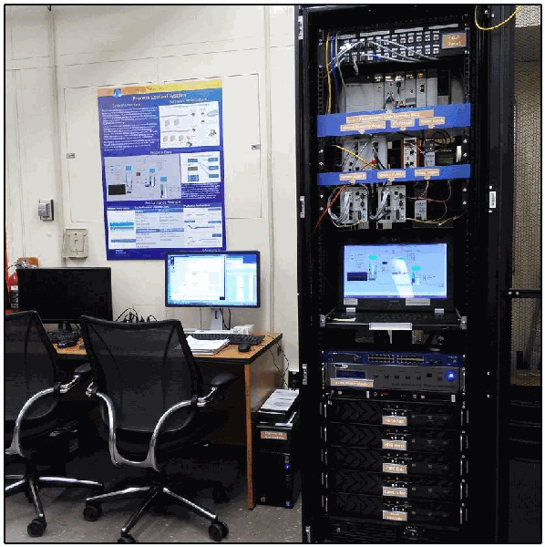
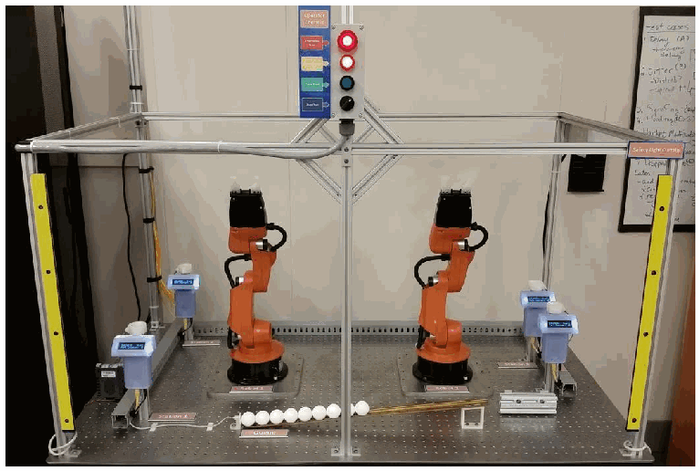

NIST IR 8183A Vol. 1 日本語訳
英語タイトル : Cybersecurity Framework Manufacturing Profile Low Impact Level Example Implementations Guide: Volume 1 – General Implementation Guidance日本語タイトル : サイバーセキュリティフレームワーク製造プロファイル 低影響レベル実装例ガイド：第1巻 – 一般的な実装ガイダンス
公開日 : 2019-09-30
原文URL : https://csrc.nist.gov/pubs/ir/8183/a/v1/final
翻訳編集 : 自動生成（有志による非公式の日本語訳）, 原文取得日 : 2026-10-31, 訳文 : 604 / 605 ブロック
[要約] NIST IR 8183A Vol. 1 は、サイバーセキュリティフレームワーク（CSF）製造プロファイルの低影響レベルの要件を製造環境で満たす方法を示す実装例ガイドの第 1 巻で、一般的な実装ガイダンスを提供します。第 2 巻（プロセス型製造環境）と第 3 巻（離散型製造環境）には、ネットワーク、デバイス、運用の性能への影響を測定した概念実証ソリューションの例が含まれています。本巻は、製造システムの概要、CSF 製造プロファイルの概要と実装アプローチ、ポリシー／手順および技術的能力の概要、製造プロファイルへの能力のマッピング、ラボ環境の概要を扱います。製造プロファイルは、製造者が採用している現行のサイバーセキュリティ標準や業界ガイドラインを補強するもので、置き換えるものではないと説明しています。
NISTIR 8183A
Volume 1
NISTIR 8183A
第1巻
Cybersecurity Framework Manufacturing Profile Low Impact Level Example Implementations Guide:
サイバーセキュリティフレームワーク製造プロファイル 低影響レベル実装例ガイド：
Volume 1 – General Implementation Guidance
第1巻 – 一般的な実装ガイダンス
Keith Stouffer
Timothy Zimmerman
CheeYee Tang
Jeffrey Cichonski
Michael Pease
Neeraj Shah
Wesley Downard
Keith Stouffer
Timothy Zimmerman
CheeYee Tang
Jeffrey Cichonski
Michael Pease
Neeraj Shah
Wesley Downard
This publication is available free of charge from: https://doi.org/10.6028/NIST.IR.8183A-1
本書は以下から無料で入手できます：https://doi.org/10.6028/NIST.IR.8183A-1
［NIST のロゴ。公的な標章のため、この非公式サイトには掲載していません。原本 PDF を参照してください。］
NISTIR 8183A
Volume 1
NISTIR 8183A
第1巻
Cybersecurity Framework Manufacturing Profile Low Impact Level Example Implementations Guide:
サイバーセキュリティフレームワーク製造プロファイル 低影響レベル実装例ガイド：
Volume 1 – General Implementation Guidance
第1巻 – 一般的な実装ガイダンス
Keith Stouffer
Timothy Zimmerman
CheeYee Tang
Michael Pease
Intelligent Systems Division
Engineering Laboratory
Keith Stouffer
Timothy Zimmerman
CheeYee Tang
Michael Pease
Intelligent Systems Division
Engineering Laboratory
Neeraj Shah
Strativia, LLC
Largo, Maryland
Neeraj Shah
Strativia, LLC
Largo, Maryland
Jeffrey Cichonski
Applied Cybersecurity Division
Information Technology Laboratory
Jeffrey Cichonski
Applied Cybersecurity Division
Information Technology Laboratory
Wesley Downard
G2, Inc.
Annapolis Junction, Maryland
Wesley Downard
G2, Inc.
Annapolis Junction, Maryland
This publication is available free of charge from: https://doi.org/10.6028/NIST.IR.8183A-1
本書は以下から無料で入手できます：https://doi.org/10.6028/NIST.IR.8183A-1
September 2019
2019年9月
U.S. Department of Commerce
Wilbur L. Ross, Jr., Secretary
米国商務省
Wilbur L. Ross, Jr. 長官
National Institute of Standards and Technology
Walter Copan, NIST Director and Under Secretary of Commerce for Standards and Technology
米国国立標準技術研究所
Walter Copan、NIST 所長兼商務次官（標準・技術担当）
National Institute of Standards and Technology Internal Report 8183A, Volume 1
81 pages (September 2019)
米国国立標準技術研究所 内部報告書 8183A 第1巻
81ページ（2019年9月）
This publication is available free of charge from: https://doi.org/10.6028/NIST.IR.8183A-1
本書は以下から無料で入手できます：https://doi.org/10.6028/NIST.IR.8183A-1
Certain commercial entities, equipment, or materials may be identified in this document in order to describe an experimental procedure or concept adequately. Such identification is not intended to imply recommendation or endorsement by NIST, nor is it intended to imply that the entities, materials, or equipment are necessarily the best available for the purpose.
本書では、実験手順や概念を適切に説明するために、特定の営利団体、機器、材料に言及する場合があります。このような記載は、NIST による推奨や承認を意味するものではなく、それらの団体、材料、機器が目的に照らして必ずしも最良のものであることを意味するものでもありません。
There may be references in this publication to other publications currently under development by NIST in accordance with its assigned statutory responsibilities. The information in this publication, including concepts and methodologies, may be used by federal agencies even before the completion of such companion publications. Thus, until each publication is completed, current requirements, guidelines, and procedures, where they exist, remain operative. For planning and transition purposes, federal agencies may wish to closely follow the development of these new publications by NIST.
本刊行物では、NIST に割り当てられた法的責任に従って現在策定中の他の刊行物に言及する場合があります。概念や方法論を含む本刊行物の情報は、そうした関連刊行物の完成前であっても、連邦機関が利用してもよいです。したがって、各刊行物が完成するまでは、現行の要件、ガイドライン、手順が存在する場合には、それらが引き続き有効です。計画および移行のため、連邦機関は、NIST によるこれらの新しい刊行物の策定状況を注意深く追うことを検討してもよいです。
Organizations are encouraged to review all draft publications during public comment periods and provide feedback to NIST. Many NIST cybersecurity publications, other than the ones noted above, are available at https://csrc.nist.gov/publications.
組織には、公開意見募集期間中にすべての草案刊行物を確認し、NIST に意見を提出することが推奨されます。上記のもの以外にも、NIST の多くのサイバーセキュリティ刊行物が https://csrc.nist.gov/publications で公開されています。
Comments on this publication may be submitted to:
本刊行物に関する意見の提出先
National Institute of Standards and Technology
Attn: Applied Cybersecurity Division, Information Technology Laboratory
100 Bureau Drive (Mail Stop 2000) Gaithersburg, MD 20899-2000
Email: CSF_Manufacturing_Profile_Implementation@nist.gov
National Institute of Standards and Technology
Attn: Applied Cybersecurity Division, Information Technology Laboratory
100 Bureau Drive (Mail Stop 2000) Gaithersburg, MD 20899-2000
Email: CSF_Manufacturing_Profile_Implementation@nist.gov
All comments are subject to release under the Freedom of Information Act (FOIA).
すべての意見は、情報自由法（FOIA）に基づいて公開される場合があります。
Abstract
概要
This guide provides general implementation guidance (Volume 1) and example proof-of-concept solutions demonstrating how available open-source and commercial off-the-shelf (COTS) products could be implemented in manufacturing environments to satisfy the requirements in the Cybersecurity Framework (CSF) Manufacturing Profile Low Impact Level. Example proof-of-concept solutions with measured network, device, and operational performance impacts for a process-based manufacturing environment (Volume 2) and a discrete-based manufacturing environment (Volume 3) are included in the guide. Manufacturers should make their own determinations about the breadth of the proof-of-concept solutions they voluntarily implement. Some important factors to consider include: company size, cybersecurity expertise, risk tolerance, and the threat landscape. The CSF Manufacturing Profile can be used as a roadmap for managing cybersecurity risk for manufacturers and is aligned with manufacturing sector goals and industry best practices. The Manufacturing Profile provides a voluntary, risk-based approach for managing cybersecurity activities and cyber risk to manufacturing systems. The Manufacturing Profile is meant to complement but not replace current cybersecurity standards and industry guidelines that the manufacturer is embracing.
本ガイドは、一般的な実装ガイダンス（第1巻）と、入手可能なオープンソース製品および市販（COTS）製品を製造環境にどのように実装すれば、サイバーセキュリティフレームワーク（CSF）製造プロファイルの低影響レベルの要件を満たせるかを示す、概念実証ソリューションの例を提供します。ネットワーク、デバイス、運用の性能への影響を測定した概念実証ソリューションの例が、プロセス型製造環境（第2巻）と離散型製造環境（第3巻）について、本ガイドに含まれています。製造者は、任意で実装する概念実証ソリューションの範囲を、自ら判断すべきです。考慮すべき重要な要因には、企業規模、サイバーセキュリティの専門知識、リスク許容度、脅威の状況があります。CSF 製造プロファイルは、製造者がサイバーセキュリティリスクを管理するためのロードマップとして使用でき、製造業セクターの目標と業界のベストプラクティスに沿っています。製造プロファイルは、製造システムに対するサイバーセキュリティ活動とサイバーリスクを管理するための、任意で、リスクに基づくアプローチを提供します。製造プロファイルは、製造者が採用している現行のサイバーセキュリティ標準や業界ガイドラインを補強することを意図したものであり、置き換えるものではありません。
Keywords
キーワード
Computer security; Cybersecurity Framework (CSF); distributed control systems (DCS); industrial control systems (ICS); information security; manufacturing; network security; programmable logic controllers (PLC); risk management; security controls; supervisory control and data acquisition (SCADA) systems.
コンピュータセキュリティ、サイバーセキュリティフレームワーク（CSF）、分散制御システム（DCS）、産業用制御システム（ICS）、情報セキュリティ、製造、ネットワークセキュリティ、プログラマブルロジックコントローラー（PLC）、リスク管理、セキュリティ管理策、監視制御・データ収集（SCADA）システム。
Supplemental Content
補足コンテンツ
Additional volumes of this publication include:
本刊行物のそのほかの巻は次のとおりです。
NISTIR 8183A Volume 2, Cybersecurity Framework Manufacturing Profile Low Impact Level Example Implementations Guide: Volume 2 – Process-based Manufacturing System Use Case. https://doi.org/10.6028/NIST.IR.8183A-2
NISTIR 8183A 第2巻、Cybersecurity Framework Manufacturing Profile Low Impact Level Example Implementations Guide: Volume 2 – Process-based Manufacturing System Use Case. https://doi.org/10.6028/NIST.IR.8183A-2
NISTIR 8183A Volume 3, Cybersecurity Framework Manufacturing Profile Low Impact Level Example Implementations Guide: Volume 3 – Discrete-based Manufacturing System Use Case. https://doi.org/10.6028/NIST.IR.8183A-3
NISTIR 8183A 第3巻、Cybersecurity Framework Manufacturing Profile Low Impact Level Example Implementations Guide: Volume 3 – Discrete-based Manufacturing System Use Case. https://doi.org/10.6028/NIST.IR.8183A-3
Acknowledgments
謝辞
The authors gratefully acknowledge and appreciate the significant contributions from individuals and organizations in the public and private sectors, whose thoughtful and constructive comments improved the overall quality, thoroughness, and usefulness of this publication. A special acknowledgement to the members of the International Society of Automation (ISA) 99, Industrial Automation and Control Systems Security Committee and the Department of Homeland Security Industrial Control System Joint Working Group (ICSJWG) for their exceptional contributions to this publication.
著者らは、官民の個人や組織から寄せられた、本刊行物の全体的な品質、網羅性、有用性を高める思慮深く建設的な意見を含む、多大な貢献に、深く感謝いたします。とりわけ、国際計測制御学会（ISA）99 産業オートメーション・制御システムセキュリティ委員会と、国土安全保障省産業制御システム合同作業部会（ICSJWG）の各メンバーによる、本刊行物への格別の貢献に謝意を表します。
Note to Readers
読者への注記
This guide describes a proof-of-concept solution for securing manufacturing environments that has only been tested in a lab environment. Manufacturers should make their own determinations about the breadth of the proof-of-concept solutions they voluntarily implement. Some important factors to consider include: company size, cybersecurity expertise, risk tolerance, and the threat landscape. We welcome feedback on its contents and your input. Comments, suggestions, and success stories will improve subsequent versions of this guide. Please contribute your thoughts to CSF_Manufacturing_Profile_Implementation@nist.gov.
本ガイドは、製造環境を保護するための概念実証ソリューションについて説明しており、これはラボ環境でしか試験されていません。製造者は、任意で実装する概念実証ソリューションの範囲を、自ら判断すべきです。考慮すべき重要な要因には、企業規模、サイバーセキュリティの専門知識、リスク許容度、脅威の状況があります。本ガイドの内容について、ご意見をお寄せください。コメント、提案、成功事例は、本ガイドの今後の版を改善する助けとなります。ご意見は CSF_Manufacturing_Profile_Implementation@nist.gov までお寄せください。
Revision to Include Updates in Cybersecurity Framework Version 1.1
サイバーセキュリティフレームワーク バージョン1.1 の更新を含めるための改訂
The Cybersecurity Framework Manufacturing Profile, NISTIR 8183, was drafted and released when the Cybersecurity Framework was at Version 1.0. This guide provides implementation guidance and example proof-of-concept solutions with respect to the language in the original Cybersecurity Framework Manufacturing Profile.
サイバーセキュリティフレームワーク製造プロファイル（NISTIR 8183）は、サイバーセキュリティフレームワークがバージョン1.0であった時期に起草され、公表されました。本ガイドは、当初のサイバーセキュリティフレームワーク製造プロファイルの文言に即した実装ガイダンスと、概念実証ソリューションの例を提供します。
The Cybersecurity Framework Manufacturing Profile, NISTIR 8183, is scheduled to be revised to include the updates in the Cybersecurity Framework Version 1.1, and will be published as NISTIR 8183, Revision 1.
サイバーセキュリティフレームワーク製造プロファイル（NISTIR 8183）は、サイバーセキュリティフレームワーク バージョン1.1 の更新を含めるために改訂される予定であり、NISTIR 8183 改訂第1版として公表されます。
Once NISTIR, 8183, Revision 1 has been released, this implementation guide will be revised to include the updates in the Cybersecurity Framework Version 1.1 as well, and will be published as NISTIR 8183A, Revision 1.
NISTIR 8183 改訂第1版が公表された後は、本実装ガイドも、サイバーセキュリティフレームワーク バージョン1.1 の更新を含めるために改訂され、NISTIR 8183A 改訂第1版として公表されます。
Table of Contents
目次
Executive Summary
エグゼクティブサマリー
This guide provides general implementation guidance (Volume 1) and example proof-of-concept solutions demonstrating how available open-source and commercial off-the-shelf (COTS) products could be implemented in manufacturing environments to satisfy the requirements in the Cybersecurity Framework (CSF) Manufacturing Profile [8] Low Impact Level. A manufacturing system could be classified as Low potential impact if the loss of integrity, availability, or confidentiality could be expected to have a limited adverse effect on manufacturing operations, manufactured product, assets, brand image, finances, personnel, the general public, or the environment. A limited adverse effect means that, for example, the loss of integrity, availability, or confidentiality might:
本ガイドは、一般的な実装ガイダンス（第1巻）と、入手可能なオープンソース製品および市販（COTS）製品を製造環境にどのように実装すれば、サイバーセキュリティフレームワーク（CSF）製造プロファイル [8] の低影響レベルの要件を満たせるかを示す、概念実証ソリューションの例を提供します。完全性、可用性、または機密性の喪失が、製造運用、製造品、資産、ブランドイメージ、財務、要員、一般市民、または環境に、限定的な悪影響を及ぼすと予想される場合、その製造システムは、潜在的影響が低いと分類される可能性があります。限定的な悪影響とは、たとえば、完全性、可用性、または機密性の喪失によって、次のような事態が生じうることをいいます。
•result in degradation in mission capability to an extent and duration that the system can perform its primary functions, but the effectiveness of the functions is noticeably reduced,
•システムが主要な機能を果たせる程度と期間にとどまるものの、それらの機能の有効性が著しく低下するような、ミッション能力の低下が生じます。
•result in minor damage to operational assets,
•運用上の資産に軽微な損害が生じます。
•result in minor financial loss, or
•軽微な財務的損失が生じます。または
•result in minor harm to individuals.
•個人に軽微な危害が生じます。
Example proof-of-concept solutions with measured network, device, and operational performance impacts for a process-based manufacturing environment (Volume 2) and a discrete-based manufacturing environment (Volume 3) are included in the guide. Manufacturers should make their own determinations about the breadth of the proof-of-concept solutions they voluntarily implement. Some important factors to consider include: company size, cybersecurity expertise, risk tolerance, and the threat landscape.
ネットワーク、デバイス、運用の性能への影響を測定した概念実証ソリューションの例が、プロセス型製造環境（第2巻）と離散型製造環境（第3巻）について、本ガイドに含まれています。製造者は、任意で実装する概念実証ソリューションの範囲を自ら判断すべきです。考慮すべき重要な要因には、企業規模、サイバーセキュリティの専門知識、リスク許容度、脅威の状況があります。
The CSF Manufacturing Profile can be used as a roadmap for managing cybersecurity risk for manufacturers and is aligned with manufacturing sector goals and industry best practices. The Manufacturing Profile provides a voluntary, risk-based approach for managing cybersecurity activities and cyber risk to manufacturing systems. The Manufacturing Profile is meant to complement but not replace current cybersecurity standards and industry guidelines that the manufacturer is embracing.
CSF 製造プロファイルは、製造者がサイバーセキュリティリスクを管理するためのロードマップとして使用でき、製造業セクターの目標と業界のベストプラクティスに沿っています。製造プロファイルは、製造システムに対するサイバーセキュリティ活動とサイバーリスクを管理するための、任意で、リスクに基づくアプローチを提供します。製造プロファイルは、製造者が採用している現行のサイバーセキュリティ標準や業界ガイドラインを補強することを意図したものであり、置き換えるものではありません。
The CSF Manufacturing Profile focuses on desired cybersecurity outcomes and can be used as a roadmap to identify opportunities for improving the current cybersecurity posture of the manufacturing system. The Manufacturing Profile provides a prioritization of security activities to meet specific business/mission goals. Relevant and actionable security practices that can be implemented to support key business/mission goals are then identified.
CSF 製造プロファイルは、望ましいサイバーセキュリティの成果に焦点を当てており、製造システムの現在のサイバーセキュリティ態勢を改善する機会を特定するためのロードマップとして使用できます。製造プロファイルは、特定の事業／ミッション目標を達成するためのセキュリティ活動の優先順位付けを提供します。そのうえで、主要な事業／ミッション目標を支えるために実装できる、関連性が高く実行可能なセキュリティ慣行が特定されます。
While the proof-of-concept solutions in this guide used a suite of commercial products, this guide does not endorse these products, nor does it guarantee compliance with any regulatory initiatives. Each organization’s information security experts should identify the products that will best integrate with their existing tools and manufacturing system infrastructure. Your organization may voluntarily adopt these solutions or one that adheres to these guidelines in whole, or you can use this guide as a starting point for tailoring and implementing parts of a solution. This guide does not describe regulations or mandatory practices, nor does it carry any statutory authority.
本ガイドの概念実証ソリューションでは一連の市販製品を使用しましたが、本ガイドはこれらの製品を推奨するものではなく、いかなる規制上の取り組みへの準拠も保証するものではありません。各組織の情報セキュリティの専門家は、自組織の既存のツールや製造システムのインフラストラクチャに最もよく統合できる製品を特定すべきです。貴組織は、これらのソリューション、またはこれらのガイドラインに従ったソリューションを、全体として任意で採用してもよく、本ガイドをソリューションの一部を調整して実装するための出発点として使用してもかまいません。本ガイドは、規制や義務的な慣行を記述するものではなく、法的な権限を持つものでもありません。
1. Introduction
1. はじめに
The Executive Order 13636, “Improving Critical Infrastructure Cybersecurity,” [1] directed the development of the voluntary Cybersecurity Framework that provides a prioritized, flexible, repeatable, performance-based, and cost-effective approach to manage cybersecurity risk [1] for those processes, information, and systems directly involved in the delivery of critical infrastructure services.
大統領令 13636「重要インフラのサイバーセキュリティの向上（Improving Critical Infrastructure Cybersecurity）」[1] は、重要インフラサービスの提供に直接関わるプロセス、情報、システムのサイバーセキュリティリスクを管理するための、優先順位付けされ、柔軟で、反復可能で、性能に基づき、費用対効果の高いアプローチ [1] を提供する、任意のサイバーセキュリティフレームワークの策定を指示しました。
The Cybersecurity Framework is a voluntary risk-based assemblage of industry standards and best practices designed to help organizations manage cybersecurity risks [2]. The Framework, created through collaboration between government and the private sector, uses a common language to address and manage cybersecurity risk in a cost-effective way based on business needs without imposing additional regulatory requirements.
サイバーセキュリティフレームワークは、組織がサイバーセキュリティリスクを管理するのを支援するために設計された、業界標準とベストプラクティスを集めた、任意の、リスクに基づく集合体です [2]。政府と民間部門の協働によって作成された本フレームワークは、共通の言語を用い、追加の規制要件を課すことなく、事業上のニーズに基づいて費用対効果の高い方法で、サイバーセキュリティリスクに対処し、管理します。
To address the needs of manufacturers, a Manufacturing Profile [8] of the Cybersecurity Framework was developed, through collaboration between government and the private sector, to be an actionable approach for implementing cybersecurity controls into a manufacturing system and its environment. The Profile defines specific cybersecurity activities and outcomes for the protection of the manufacturing system, its components, facility, and environment. Through use of the Profile, the manufacturer can align cybersecurity activities with business requirements, risk tolerances, and resources. The Profile provides a manufacturing sector-specific approach to cybersecurity from standards, guidelines, and industry best practices.
製造者のニーズに対応するため、サイバーセキュリティフレームワークの製造プロファイル [8] が、政府と民間部門の協働によって策定されました。これは、製造システムとその環境にサイバーセキュリティ管理策を実装するための、実行可能なアプローチとなることを意図しています。本プロファイルは、製造システム、その構成要素、施設、環境を保護するための、具体的なサイバーセキュリティ活動と成果を定義しています。本プロファイルを用いることで、製造者は、サイバーセキュリティ活動を、事業要件、リスク許容度、リソースに合わせることができます。本プロファイルは、標準、ガイドライン、業界のベストプラクティスに基づく、製造業セクター固有のサイバーセキュリティへのアプローチを提供します。
1.1 Purpose and Scope
1.1 目的と範囲
Many small and medium-sized manufacturers have expressed challenges in implementing a standards-based cybersecurity program. This guide provides general implementation guidance (Volume 1) and example proof-of-concept solutions demonstrating how available open-source and commercial off-the-shelf (COTS) products could be implemented in manufacturing environments to satisfy the requirements in the Cybersecurity Framework (CSF) Manufacturing Profile [8] Low Impact Level. A manufacturing system could be classified as Low potential impact if the loss of integrity, availability, or confidentiality could be expected to have a limited adverse effect on manufacturing operations, manufactured product, assets, brand image, finances, personnel, the general public, or the environment. A limited adverse effect means that, for example, the loss of integrity, availability, or confidentiality might:
多くの中小規模の製造者が、標準に基づくサイバーセキュリティプログラムの実装には課題があると述べています。本ガイドは、一般的な実装ガイダンス（第1巻）と、入手可能なオープンソース製品および市販（COTS）製品を製造環境にどのように実装すれば、サイバーセキュリティフレームワーク（CSF）製造プロファイル [8] の低影響レベルの要件を満たせるかを示す、概念実証ソリューションの例を提供します。完全性、可用性、または機密性の喪失が、製造運用、製造品、資産、ブランドイメージ、財務、要員、一般市民、または環境に、限定的な悪影響を及ぼすと予想される場合、その製造システムは、潜在的影響が低いと分類される可能性があります。限定的な悪影響とは、たとえば、完全性、可用性、または機密性の喪失によって、次のような事態が生じうることをいいます。
•result in degradation in mission capability to an extent and duration that the system can perform its primary functions, but the effectiveness of the functions is noticeably reduced,
•システムが主要な機能を果たせる程度と期間にとどまるものの、それらの機能の有効性が著しく低下するような、ミッション能力の低下が生じます。
•result in minor damage to operational assets,
•運用上の資産に軽微な損害が生じます。
•result in minor financial loss, or
•軽微な財務的損失が生じます。または
•result in minor harm to individuals.
•個人に軽微な危害が生じます。
Example proof-of-concept solutions with measured network, device, and operational performance impacts for a process-based manufacturing environment (Volume 2) and a discrete-based manufacturing environment (Volume 3) are included in the guide. Manufacturers should make their own determinations about the breadth of the proof-of-concept solutions they voluntarily implement. Some important factors to consider include: company size, cybersecurity expertise, risk tolerance, and the threat landscape. The CSF Manufacturing Profile can be used as a roadmap for managing cybersecurity risk for manufacturers and is aligned with manufacturing sector goals and industry best practices. The Manufacturing Profile provides a voluntary, risk-based approach for managing cybersecurity activities and cyber risk to manufacturing systems. The Manufacturing Profile is meant to enhance but not replace current cybersecurity standards and industry guidelines that the manufacturer is embracing.
ネットワーク、デバイス、運用の性能への影響を測定した概念実証ソリューションの例が、プロセス型製造環境（第2巻）と離散型製造環境（第3巻）について、本ガイドに含まれています。製造者は、任意で実装する概念実証ソリューションの範囲を、自ら判断すべきです。考慮すべき重要な要因には、企業規模、サイバーセキュリティの専門知識、リスク許容度、脅威の状況があります。CSF 製造プロファイルは、製造者がサイバーセキュリティリスクを管理するためのロードマップとして使用でき、製造業セクターの目標と業界のベストプラクティスに沿っています。製造プロファイルは、製造システムに対するサイバーセキュリティ活動とサイバーリスクを管理するための、任意で、リスクに基づくアプローチを提供します。製造プロファイルは、製造者が採用している現行のサイバーセキュリティ標準や業界ガイドラインを強化することを意図したものであり、置き換えるものではありません。
While the proof-of-concept solutions in this guide used a suite of commercial products, this guide does not endorse these products, nor does it guarantee compliance with any regulatory initiatives. Each organization’s information security experts should identify the products that will best integrate with their existing tools and manufacturing system infrastructure. Organizations may voluntarily adopt these solutions or one that adheres to these guidelines in whole or can use this guide as a starting point for tailoring and implementing parts of a solution. This guide does not describe regulations or mandatory practices, nor does it carry any statutory authority.
本ガイドの概念実証ソリューションでは一連の市販製品を使用しましたが、本ガイドはこれらの製品を推奨するものではなく、いかなる規制上の取り組みへの準拠も保証するものではありません。各組織の情報セキュリティの専門家は、既存のツールや製造システムのインフラストラクチャに最もよく統合できる製品を特定すべきです。組織は、これらのソリューション、または全体としてこれらのガイドラインに従うソリューションを任意で採用してもよく、あるいは本ガイドを、ソリューションの一部を調整して実装するための出発点として使用してもかまいません。本ガイドは、規制や義務的な慣行を記述するものではなく、法的な権限を持つものでもありません。
This project is guided by the following assumptions:
このプロジェクトは、次の前提に従っています。
•the solutions were developed in a lab environment,
•ソリューションはラボ環境で開発されました。
•the environment is based on a typical small manufacturer’s environment,
•環境は、典型的な小規模製造者の環境に基づいています。
•the environment does not reflect the complexity of a production environment, and
•環境は、本番環境の複雑さを反映していません。
•an organization can access the skills and resources required to implement a manufacturing cybersecurity solution.
•組織は、製造サイバーセキュリティソリューションを実装するために必要なスキルとリソースを利用できます。
1.2 Audience
1.2 想定読者
This document covers details specific to manufacturing systems. Readers of this document should be acquainted with operational technology, general computer security concepts, and communication protocols such as those used in networking. The intended audience is varied and includes the following:
本書は、製造システムに固有の詳細を扱います。本書の読者は、運用技術、一般的なコンピュータセキュリティの概念、およびネットワークで使用されるような通信プロトコルに精通しているべきです。想定読者は多様であり、次のような方々が含まれます。
•control engineers, integrators, and architects who design or implement secure manufacturing systems,
•セキュアな製造システムを設計または実装する、制御エンジニア、インテグレーター、アーキテクト。
•system administrators, engineers, and other information technology (IT) professionals who administer, patch, or secure manufacturing systems,
•製造システムを管理し、パッチを適用し、またはセキュリティを確保する、システム管理者、エンジニア、その他の情報技術（IT）の専門家。
•managers who are responsible for manufacturing systems,
•製造システムに責任を持つ管理者。
•senior management who are trying to understand implications and consequences as they justify and implement a manufacturing systems cybersecurity program to help mitigate impacts to business functionality, and
•事業機能への影響を緩和するための製造システムのサイバーセキュリティプログラムを正当化して実施する際に、その意味と帰結を理解しようとしている上級管理者。
•researchers, academic institutions and analysts who are trying to understand the unique security needs of manufacturing systems.
•製造システム特有のセキュリティニーズを理解しようとしている、研究者、学術機関、アナリスト。
1.3 Document Structure
1.3 文書の構成
The remainder of Volume 1 is divided into the following major sections:
第1巻の残りは、次の主要な節に分かれています。
•Section 2 provides an overview of manufacturing systems.
•第2節では、製造システムの概要を示します。
•Section 3 provides an overview of the CSF Manufacturing Profile.
•第3節では、CSF 製造プロファイルの概要を示します。
•Section 4 discusses the project’s CSF Manufacturing Profile implementation approach.
•第4節では、本プロジェクトにおける CSF 製造プロファイルの実装アプローチについて論じます。
•Section 5 provides an overview of the policy and procedure documents needed to meet the requirements specified in the CSF Manufacturing Profile Low Impact Level.
•第5節では、CSF 製造プロファイルの低影響レベルで規定された要件を満たすために必要な、ポリシーおよび手順の文書の概要を示します。
•Section 6 provides the technical capabilities needed to meet the requirements specified in the CSF Manufacturing Profile Low Impact Level.
•第6節では、CSF 製造プロファイルの低影響レベルで規定された要件を満たすために必要な、技術的能力を示します。
•Section 7 examines potential solutions that can address the requirements specified in the CSF Manufacturing Profile Low Impact Level.
•第7節では、CSF 製造プロファイルの低影響レベルで規定された要件に対応できる、潜在的なソリューションを検討します。
•Section 8 provides an overview of the laboratory environment used for implementations.
•第8節では、実装に使用したラボ環境の概要を示します。
•Appendix A provides a list of acronyms and abbreviations used in this document.
•付録 A では、本書で使用する略語の一覧を示します。
•Appendix B provides a glossary of terms used in this document.
•付録 B では、本書で使用する用語の用語集を示します。
•Appendix C provides a list of references used in the development of this document.
•付録 C では、本書の作成に使用した参考文献の一覧を示します。
Volume 2 of this guide provides a proof-of-concept CSF Manufacturing Profile Low Impact Level implementation for a process-based manufacturing system.
本ガイドの第2巻では、プロセス型製造システムを対象とした、CSF 製造プロファイルの低影響レベルの概念実証実装を示します。
Volume 3 of this guide provides a proof-of-concept CSF Manufacturing Profile Low Impact Level implementation for a discrete-based manufacturing system.
本ガイドの第3巻では、離散型製造システムを対象とした、CSF 製造プロファイルの低影響レベルの概念実証実装を示します。
2. Overview of Manufacturing Systems
2. 製造システムの概要
Manufacturing is a large and diverse industrial sector. Manufacturing industries can be categorized as either process-based, discrete-based, or a combination of both [3].
製造業は、大規模で多様な産業セクターです。製造業は、プロセス型、離散型、またはその両方の組み合わせのいずれかに分類できます [3]。
Process-based manufacturing industries typically utilize two main process types:
プロセス型の製造業は、通常、次の 2 つの主要なプロセスの種類を利用します。
•Continuous Manufacturing Processes. These processes run continuously, often with phases to make different grades of a product. Typical continuous manufacturing processes include fuel or steam flow in a power plant, petroleum in a refinery, and distillation in a chemical plant.
•連続製造プロセス。これらのプロセスは連続的に稼働し、製品のさまざまなグレードを作るために段階が設けられることがよくあります。典型的な連続製造プロセスには、発電所における燃料や蒸気の流れ、製油所における石油、化学プラントにおける蒸留があります。
•Batch Manufacturing Processes. These processes have distinct processing steps, conducted on a quantity of material. There is a distinct start and end to a batch process with the possibility of brief steady state operations during intermediate steps. Typical batch manufacturing processes include food, beverage, and biotech manufacturing.
•バッチ製造プロセス。これらのプロセスには、ある量の材料に対して行われる、明確に区切られた処理工程があります。バッチプロセスには明確な開始と終了があり、中間の工程では短時間の定常運転が行われる場合もあります。典型的なバッチ製造プロセスには、食品、飲料、バイオテクノロジーの製造があります。
Discrete-based manufacturing industries typically conduct a series of operations to create a distinct product. Electronic and mechanical parts assembly and parts machining are typical examples of this type of industry. Both process-based and discrete-based industries utilize similar types of control systems, sensors, and networks. Additionally, some facilities are a hybrid of discrete and process-based manufacturing.
離散型の製造業は、通常、一連の作業を行って個別の製品を作ります。電子部品や機械部品の組み立てと、部品の機械加工が、この種の産業の典型例です。プロセス型と離散型のどちらの産業も、同様の種類の制御システム、センサー、ネットワークを利用します。さらに、離散型とプロセス型の製造を併せ持つハイブリッドな施設もあります。
Manufacturing systems are usually located within a confined factory or plant-centric area. Communications in manufacturing industries are typically performed using fieldbus and local area network (LAN) technologies that are reliable and high speed. Wireless networking technologies are also gaining popularity in manufacturing industries. Fieldbus includes, for example, DeviceNet, Modbus, and Controller Area Network (CAN) bus.
製造システムは、通常、限られた範囲の工場やプラントを中心とした区域内に置かれます。製造業における通信は、通常、信頼性が高く高速なフィールドバスとローカルエリアネットワーク（LAN）の技術を用いて行われます。無線ネットワーク技術も、製造業で普及しつつあります。フィールドバスには、たとえば DeviceNet、Modbus、Controller Area Network（CAN）バスがあります。
The manufacturing sector of the critical infrastructure community includes public and private owners and operators, along with other entities. Members of the distinct critical infrastructure sector perform functions that are supported by industrial control systems (ICS) and by information technology (IT). This reliance on technology, communication, and the interconnectivity of ICS and IT has changed and expanded the potential vulnerabilities and increased potential risk to manufacturing system operations.
重要インフラコミュニティの製造セクターには、公的および民間の所有者と運用者、およびその他の主体が含まれます。区別される重要インフラセクターの構成員は、産業用制御システム（ICS）と情報技術（IT）によって支えられた機能を果たしています。このような技術、通信への依存と、ICS と IT の相互接続により、潜在的な脆弱性が変化・拡大し、製造システム運用への潜在的なリスクが高まっています。
3. CSF Manufacturing Profile Overview
3. CSF 製造プロファイルの概要
The Manufacturing Profile [8] was developed to be an actionable approach for implementing cybersecurity controls into a manufacturing system and its environment. The specific statements in the Subcategories in Section 7 of the Manufacturing Profile were derived from the security controls of the NIST Special Publication (SP) 800-53 Rev.4 [4] and are customized to the manufacturing domain using relevant informative references. The general informative references of ISA/IEC 62443 [5] from the Cybersecurity Framework are also listed in the References column. COBIT 5 is sourced for Subcategories that have no corresponding 800-53 references. Additional input came from NIST SP 800-82, Rev.2, Section 6.2 (Guidance on the Application of Security Controls to ICS) and Appendix G (ICS Overlay) [3]. For informative references to an entire control family or set of controls (such as Subcategory ID.GV-1’s informative reference to all “policy and procedures” controls), the approach took a holistic view of the controls comprising the family/set.
製造プロファイル [8] は、製造システムとその環境にサイバーセキュリティ管理策を実装するための、実行可能なアプローチとなることを意図して策定されました。製造プロファイル第7節のサブカテゴリにある具体的な記述は、NIST 特別刊行物（SP）800-53 Rev.4 [4] のセキュリティ管理策から導かれ、関連する参考情報を用いて製造分野向けに調整されています。サイバーセキュリティフレームワークの「参照」欄には、ISA/IEC 62443 [5] の一般的な参考情報も記載されています。対応する 800-53 の参照がないサブカテゴリについては、COBIT 5 を出典としています。追加の入力は、NIST SP 800-82 Rev.2 の第6.2節（ICS へのセキュリティ管理策の適用に関するガイダンス）と付録 G（ICS オーバーレイ）[3] から得られました。管理策ファミリー全体または管理策の集合全体を参照する参考情報（たとえば、サブカテゴリ ID.GV-1 が「ポリシーと手順」の管理策すべてを参考情報としているもの）については、そのファミリーまたは集合を構成する管理策を包括的に捉える方法をとりました。
The Manufacturing Profile expresses tailored values for cybersecurity controls for the manufacturing system environment. These represent the application of the Categories and Subcategories from the Cybersecurity Framework based on domain-specific relevance, business drivers, risk assessment, and the manufacturer’s priorities. Users of the Profile can also add Categories and Subcategories as needed to address unique and specific risks.
製造プロファイルは、製造システム環境に合わせて調整したサイバーセキュリティ管理策の値を示しています。これらは、分野固有の関連性、事業上の推進要因、リスクアセスメント、製造者の優先事項に基づいて、サイバーセキュリティフレームワークのカテゴリとサブカテゴリを適用したものを表しています。本プロファイルの利用者は、固有かつ特定のリスクに対処するため、必要に応じてカテゴリとサブカテゴリを追加することもできます。
4. CSF Manufacturing Profile Implementation Approach
4. CSF 製造プロファイルの実装アプローチ
Meeting the Manufacturing Profile Subcategory requirements can be accomplished by developing and implementing policies and procedures and/or implementing technical solutions, depending on the particular Subcategory language.
製造プロファイルのサブカテゴリの要件を満たすことは、個々のサブカテゴリの文言に応じて、ポリシーと手順を策定して実装すること、または技術的ソリューションを実装すること、あるいはその両方によって達成できます。
![Flow diagram of the approach. "Manufacturing Profile" → "was used to generate..." → "Technical capabilities". "Technical capabilities" → "were used to classify and organize..." → "List of applicable cybersecurity tools"; a dotted arrow "informed..." also runs from "Manufacturing Profile" to that list. "List of applicable cybersecurity tools" → "was used to select..." → "List of cybersecurity tools for implementation", which "maps to..." (dotted) the "Manufacturing Profile". The tools-for-implementation list is "informed..." by "Business Constraints: - Tool cost - Availablility - Ease of use/installation" and "Technical knowledge of the manufacturing system"; the list of applicable tools is "informed..." by "Contractor knowledge and experience" and "Independent research of cybersecurity tools".](assets/ir-8183av1/p0014-figure-01.png)
手法の流れ図です。「Manufacturing Profile」から「was used to generate...」の矢印で「Technical capabilities」へ進み、そこから「were used to classify and organize...」の矢印で「List of applicable cybersecurity tools」へ進みます。「Manufacturing Profile」からこの一覧へも点線の「informed...」の矢印があります。「List of applicable cybersecurity tools」から「was used to select...」の矢印で「List of cybersecurity tools for implementation」へ進み、それが点線の「maps to...」で「Manufacturing Profile」に対応付けられます。実装用ツールの一覧には「Business Constraints: - Tool cost - Availablility - Ease of use/installation」と「Technical knowledge of the manufacturing system」から、適用可能なツールの一覧には「Contractor knowledge and experience」と「Independent research of cybersecurity tools」から、それぞれ「informed...」の点線の矢印が入ります。
Figure 4-1. Approach used for identifying, planning and implementing technical cybersecurity capabilities
図 4-1. 技術的なサイバーセキュリティ能力の特定、計画、実装に用いたアプローチ
Figure 4-1 provides a visual representation of the approach used for identifying, planning and implementing technical cybersecurity capabilities as well as identifying the complementary cybersecurity processes and procedures. The Cybersecurity Framework Manufacturing Profile [8] was the principal resource describing the cybersecurity outcomes desired in both of NIST’s manufacturing testbed scenarios. The outcomes described in the Manufacturing Profile are grounded by and cross referenced with prescriptive cybersecurity controls from standards relevant to ICS owners and operators.
図 4-1 は、技術的なサイバーセキュリティ能力を特定、計画、実装し、あわせて補完的なサイバーセキュリティのプロセスと手順を特定するために用いたアプローチを、視覚的に表したものです。サイバーセキュリティフレームワーク製造プロファイル [8] は、NIST の 2 つの製造テストベッドのシナリオの両方で望まれるサイバーセキュリティの成果を記述した、主要なリソースでした。製造プロファイルに記述された成果は、ICS の所有者と運用者に関連する標準の規範的なサイバーセキュリティ管理策に根拠を置き、それらと相互参照されています。
The initial step of this planning process was focused on researching what cybersecurity related tools, configurations, and best practices are required to achieve the specific outcomes or Profile Subcategories. The Profile Subcategories and specific language provided by mapped cybersecurity controls provided insight into classifications of technical capabilities needed to be implemented in the testbed environments. From these high-level classifications of capabilities, NIST researchers identified and built a list of commercial products and open source tools that fit into each of these classifications. The list of solutions was then used to inform implementation planning and select specific solutions, tools, and products for implementation in the testbed environment. The selection of these technologies for implementation was informed by: technical knowledge of the testbed; solution cost; availability; maturity; level of expertise required for implementation and management; and the lab IT administrator’s expertise.
この計画プロセスの最初のステップは、特定の成果、すなわちプロファイルのサブカテゴリを達成するために、サイバーセキュリティに関するどのようなツール、構成、ベストプラクティスが必要かを調査することに重点を置いていました。プロファイルのサブカテゴリと、対応付けられたサイバーセキュリティ管理策が示す具体的な文言から、テストベッド環境に実装する必要のある技術的能力の分類についての洞察が得られました。これらの高水準の能力の分類から、NIST の研究者は、各分類に当てはまる市販製品とオープンソースツールの一覧を特定し、作成しました。その後、このソリューションの一覧は、実装計画の検討と、テストベッド環境に実装する具体的なソリューション、ツール、製品の選定に役立てられました。実装するこれらの技術の選定にあたっては、テストベッドに関する技術的知識、ソリューションのコスト、入手可能性、成熟度、実装と管理に必要な専門知識の水準、およびラボの IT 管理者の専門知識が考慮されました。
The mapping of technical solutions to Profile Subcategories in most cases did not provide exact one-to-one coverage. In most scenarios, during the planning process there was a realization that implementing one technical capability might only satisfy portions of multiple Subcategories and in some scenarios implementation of multiple technical capabilities were required in order to achieve the outcome described by a Profile Subcategory. Some Profile Subcategories (e.g., PR.DS-3) required the implementation of a technical capability complemented by the addition of a cybersecurity policy or procedure. While this mapping adds complexity to the planning process it enables system owners to gain an understanding of what technical solutions will enable them to achieve the most Subcategory outcomes. Priorities can be assigned based the specific mission and business objectives of the organization.
技術的ソリューションとプロファイルのサブカテゴリとの対応付けは、ほとんどの場合、厳密な一対一の対応にはなりませんでした。ほとんどのシナリオで、計画プロセスの間に、1 つの技術的能力を実装しても複数のサブカテゴリの一部しか満たせない場合があること、また一部のシナリオでは、プロファイルのサブカテゴリが記述する成果を達成するために複数の技術的能力の実装が必要となることが認識されました。一部のプロファイルのサブカテゴリ（たとえば PR.DS-3）では、技術的能力の実装に加えて、サイバーセキュリティのポリシーまたは手順を追加する必要がありました。この対応付けは計画プロセスを複雑にしますが、システムの所有者は、どの技術的ソリューションによって最も多くのサブカテゴリの成果を達成できるかを理解できるようになります。優先順位は、組織のミッションおよび事業目標に基づいて割り当てることができます。
Section 5 provides an overview of the six policy and procedure documents needed to meet the requirements specified in the CSF Manufacturing Profile Low Impact Level.
第5節では、CSF 製造プロファイルの低影響レベルで規定された要件を満たすために必要な、6 つのポリシーおよび手順の文書の概要を示します。
Section 6 provides the technical capabilities needed to meet the requirements specified in the CSF Manufacturing Profile Low Impact Level.
第6節では、CSF 製造プロファイルの低影響レベルで規定された要件を満たすために必要な、技術的能力を示します。
Section 7 examines potential solutions that can address the requirements specified in the CSF Manufacturing Profile Low Impact Level.
第7節では、CSF 製造プロファイルの低影響レベルで規定された要件に対応できる、潜在的なソリューションを検討します。
5. Policy/Procedural Capabilities Overview
5. ポリシー／手順に関する能力の概要
For the implementation of the two use cases, six policy and procedural documents were produced for each:
2 つのユースケースの実装にあたり、それぞれについて 6 つのポリシーおよび手順の文書が作成されました。
5.1 Cybersecurity Program Document
5.1 サイバーセキュリティプログラム文書
The Cybersecurity Program document establishes guidelines and principles for initiating, implementing, maintaining, and improving information security management of the organization. It is a documented set of the organization’s security policies, procedures, guidelines and standards. The program is intended to protect the confidentiality, integrity and availability of information resources.
サイバーセキュリティプログラム文書は、組織の情報セキュリティ管理を開始、実装、維持、改善するためのガイドラインと原則を定めます。これは、組織のセキュリティポリシー、手順、ガイドライン、標準を文書化したものの集合です。このプログラムは、情報リソースの機密性、完全性、可用性を保護することを意図しています。
5.2 Cybersecurity Policy Document
5.2 サイバーセキュリティポリシー文書
The Cybersecurity Policy document defines the cybersecurity requirements for the proper and secure use of the Information Technology services in the organization. Its goal is to protect the organization and its users to the maximum extent possible against cybersecurity threats that could jeopardize their integrity, privacy, reputation, and business outcomes.
サイバーセキュリティポリシー文書は、組織における情報技術サービスの適切かつセキュアな使用のためのサイバーセキュリティ要件を定義します。その目標は、組織とその利用者を、完全性、プライバシー、評判、事業成果を脅かしうるサイバーセキュリティ上の脅威から、可能なかぎり最大限に保護することです。
5.3 Cybersecurity Operations Document
5.3 サイバーセキュリティ運用文書
The Cybersecurity Operations document defines the operational steps management and employees will follow ensuring consistency with response to events occurring within the manufacturing system. This document contains content which should be referred to often to help ensure all employees and individuals performing work within the manufacturing system are familiar with cybersecurity operations.
サイバーセキュリティ運用文書は、製造システム内で発生するイベントへの対応に一貫性を確保するために、管理者と従業員が従う運用上の手順を定義します。この文書には、製造システム内で作業を行うすべての従業員と個人がサイバーセキュリティ運用に精通していることを確保する助けとなるよう、頻繁に参照すべき内容が含まれています。
5.4 Risk Management Document
5.4 リスク管理文書
The Risk Management Strategy document defines how risks associated with the organization will be identified, analyzed, and managed. It outlines the risk management strategy for the organization. In addition, it provides standard terminology, clear roles and responsibilities and details of the risk management process. This document can be used by the management to understand risks, estimate impacts, and define responses to issues. It is designed to guide the project team and stakeholders.
リスク管理戦略文書は、組織に関連するリスクをどのように特定、分析、管理するかを定義します。組織のリスク管理戦略の概要を示します。さらに、標準的な用語、明確な役割と責任、リスク管理プロセスの詳細を提供します。この文書は、管理者がリスクを理解し、影響を見積もり、問題への対応を定義するために使用できます。プロジェクトチームとステークホルダーを導くことを意図して設計されています。
5.5 Incident Response Plan Document
5.5 インシデント対応計画文書
The Incident Response Plan document describes the plan for responding to information security incidents within an organization. It defines the roles and responsibilities of participants, characterization of incidents, relationships to other policies and procedures, and reporting requirements. The purpose of this plan is to detect and react to cybersecurity incidents, determine their scope and risk, respond appropriately to the incident, communicate the results and risk to all stakeholders, and reduce the likelihood of the incident from reoccurring.
インシデント対応計画文書は、組織内の情報セキュリティインシデントへの対応計画を記述します。参加者の役割と責任、インシデントの特性の把握、他のポリシーおよび手順との関係、報告要件を定義します。この計画の目的は、サイバーセキュリティインシデントを検知してそれに対処し、その範囲とリスクを判断し、インシデントに適切に対応し、結果とリスクをすべてのステークホルダーに伝達し、インシデントの再発の可能性を低減することです。
5.6 System Recovery Plan Document
5.6 システム復旧計画文書
The System Recovery Plan is designed to ensure the continuation of vital manufacturing/business processes in the event a cybersecurity incident occurs. Its purpose is to provide a structured approach for responding to cybersecurity incidents by leveraging the infrastructure inventory and configuration information relevant to the organization’s IT and OT environments to restore operational capabilities.
システム復旧計画は、サイバーセキュリティインシデントが発生した場合に、重要な製造／事業プロセスの継続を確保するために設計されています。その目的は、組織の IT および OT 環境に関連するインフラストラクチャの資産目録と構成情報を活用して運用能力を復旧することにより、サイバーセキュリティインシデントへの対応に向けた体系的なアプローチを提供することです。
This plan has been developed to accomplish the following objectives:
この計画は、次の目的を達成するために策定されました。
•limit the magnitude of any loss by minimizing the duration of a manufacturing interruption,
•製造の中断期間を最小限に抑えることで、あらゆる損失の大きさを抑えます。
•assess damage, repair the damage, and restore manufacturing system,
•損害を評価して修復し、製造システムを復旧すること、
•manage the recovery operation in an organized and effective manner, and
•復旧作業を、組織的かつ効果的に管理します。
•prepare personnel to respond effectively in system recovery situations.
•システム復旧の状況に効果的に対応できるよう要員を準備すること。
6. Technical Capabilities Overview
6. 技術的能力の概要
This section discusses the technical capabilities identified by the team necessary to meet the CSF Manufacturing Profile language. For each technical capability, an overview of the capability is provided, the security benefits of implementing the capability is listed, any potential system impacts the capability could have on the manufacturing system are discussed, and the CSF Manufacturing Profile Subcategories that are addressed when the capability is implemented are listed.
本節では、CSF 製造プロファイルの文言を満たすために必要であるとチームが特定した、技術的能力について論じます。各技術的能力について、その能力の概要を示し、その能力を実装することによるセキュリティ上の利点を挙げ、その能力が製造システムに及ぼしうる潜在的なシステムへの影響を論じ、その能力を実装したときに対応される CSF 製造プロファイルのサブカテゴリを挙げます。
6.1 Hardware Inventory Management
6.1 ハードウェア資産目録の管理
Hardware inventory management tools enable a manufacturer to track computing and network devices within the manufacturing system, including device details and location information.
ハードウェア資産目録管理ツールを使用すると、製造者は、デバイスの詳細情報や所在地情報を含め、製造システム内のコンピューティングデバイスとネットワークデバイスを追跡できます。
6.1.1 Security Benefit
6.1.1 セキュリティ上の利点
Hardware inventory management tools are used to track physical computing and network devices within the manufacturing system, detect new or unauthorized devices, detect the removal of devices, and track specific device details. Having a complete inventory of what computing and network devices exist in an environment will facilitate a comprehensive deployment of cybersecurity protections.
ハードウェア資産目録管理ツールは、製造システム内の物理的なコンピューティングデバイスとネットワークデバイスを追跡し、新しいデバイスや未承認のデバイスを検出し、デバイスの撤去を検出し、特定のデバイスの詳細情報を追跡するために使用されます。環境内に存在するコンピューティングデバイスとネットワークデバイスの完全な目録を持つことは、サイバーセキュリティ保護を包括的に展開するうえで役立ちます。
6.1.2 Potential System Impacts
6.1.2 潜在的なシステムへの影響
Hardware inventory management tools that use active scanning can potentially impact the manufacturing system. Care must be taken before using these tools to identify manufacturing system devices on an operational system. Impacts could be due to the nature of the information or the volume of network traffic. Consider using hardware inventory tools that use active scanning during planned downtime for detailed data collection. Passive hardware inventory tools could be used for continuous monitoring of the manufacturing system.
アクティブスキャンを使用するハードウェア資産目録管理ツールは、製造システムに影響を及ぼす可能性があります。稼働中のシステムで製造システムのデバイスを特定するためにこれらのツールを使用する前に、慎重に検討してください。影響は、情報の性質やネットワークトラフィックの量によって生じる可能性があります。詳細なデータ収集には、計画的な停止期間中にアクティブスキャンを使用するハードウェア資産目録ツールの使用を検討してください。パッシブ型のハードウェア資産目録ツールは、製造システムの継続的な監視に使用できます。
6.1.3 Manufacturing Profile Subcategories
6.1.3 製造プロファイルのサブカテゴリ
ID.AM-1, PR.DS-3, DE.CM-7
ID.AM-1, PR.DS-3, DE.CM-7
6.2 Software and Firmware Inventory Management
6.2 ソフトウェアおよびファームウェア資産目録の管理
Software and firmware inventory management tools enable a manufacturer to track software and firmware installed within the manufacturing system computing and network devices, including identification, version numbers, and location information.
ソフトウェアおよびファームウェア資産目録管理ツールを使用すると、製造者は、識別情報、バージョン番号、所在地情報を含め、製造システムのコンピューティングデバイスとネットワークデバイスにインストールされたソフトウェアとファームウェアを追跡できます。
6.2.1 Security Benefit
6.2.1 セキュリティ上の利点
Software and firmware inventory management tools enable a manufacturer to track installed software and firmware on systems within the manufacturing system, detect new or unauthorized software, track software versions, and facilitate the remote removal of software. Some software inventory tools also allow the tool to extend its scanning into the system itself (i.e. scan system peripherals, installed RAM and processors, and network configurations).
ソフトウェアおよびファームウェア資産目録管理ツールを使用すると、製造者は、製造システム内のシステムにインストールされたソフトウェアとファームウェアを追跡し、新しいソフトウェアや未承認のソフトウェアを検出し、ソフトウェアのバージョンを追跡し、ソフトウェアのリモートでの削除を容易にできます。ソフトウェア資産目録ツールの中には、スキャンの範囲をシステム自体にまで広げられるもの（すなわち、システムの周辺機器、搭載された RAM とプロセッサー、ネットワーク構成のスキャン）もあります。
6.2.2 Potential System Impacts
6.2.2 潜在的なシステムへの影響
Software and firmware inventory management tools that use active scanning can potentially impact the manufacturing system. Care must be taken before using these tools on an operational system. Impacts could be due to the nature of the information or the volume of network traffic. Consider using software and firmware inventory management tools that use active scanning during planned downtime.
アクティブスキャンを使用するソフトウェアおよびファームウェア資産目録管理ツールは、製造システムに影響を及ぼす可能性があります。稼働中のシステムでこれらのツールを使用する前に、注意を払わなければなりません。影響は、情報の性質やネットワークトラフィックの量によって生じる可能性があります。アクティブスキャンを使用するソフトウェアおよびファームウェア資産目録管理ツールは、計画的な停止期間中に使用することを検討してください。
6.2.3 Manufacturing Profile Subcategories
6.2.3 製造プロファイルのサブカテゴリ
ID.AM-2, PR.DS-3, DE.CM-7
ID.AM-2, PR.DS-3, DE.CM-7
6.3 Systems Development Lifecycle Management
6.3 システム開発ライフサイクルの管理
Systems development lifecycle management tools enable a manufacturer to track the scope of activities associated with hardware and software components of the manufacturing system, encompassing each component’s initiation, development and acquisition, implementation, operation and maintenance, and its ultimate decommissioning and disposal.
システム開発ライフサイクル管理ツールを使用すると、製造者は、製造システムのハードウェアおよびソフトウェアの構成要素に関連する活動の範囲を追跡できます。これには、各構成要素の開始、開発と取得、実装、運用と保守、そして最終的な廃止と廃棄が含まれます。
6.3.1 Security Benefit
6.3.1 セキュリティ上の利点
Systems development lifecycle management tools provide hardware and software tracking from the point of purchase/installation until removal/decommissioning. Tracking that updates like firmware, bios, drivers, software updates, and patches have been applied ensures better protection against known and unknown vulnerabilities and helps manufacturers better understand the risks to their systems.
システム開発ライフサイクル管理ツールは、購入／インストールの時点から、撤去／廃止に至るまで、ハードウェアとソフトウェアを追跡します。ファームウェア、BIOS、ドライバー、ソフトウェアの更新、パッチなどの更新が適用されたことを追跡することで、既知および未知の脆弱性に対する保護が向上し、製造者が自らのシステムに対するリスクをより深く理解する助けになります。
6.3.2 Potential System Impacts
6.3.2 潜在的なシステムへの影響
Systems development lifecycle management tools should not impact the manufacturing system, as they are not typically installed or operated on the manufacturing system.
システム開発ライフサイクル管理ツールは、通常、製造システム上にインストールも運用もされないため、製造システムに影響を及ぼすべきではありません。
6.3.3 Manufacturing Profile Subcategories
6.3.3 製造プロファイルのサブカテゴリ
PR.DS-3, PR.IP-1, PR.IP-2, PR.IP-6, DE.CM-7
PR.DS-3, PR.IP-1, PR.IP-2, PR.IP-6, DE.CM-7
6.4 Network Architecture Documentation
6.4 ネットワークアーキテクチャの文書化
Network architecture documentation tools enable a manufacturer to identify, document, and diagram the interconnections between networked manufacturing system devices, corporate networks, and other external network connections.
ネットワークアーキテクチャ文書化ツールを使用すると、製造者は、ネットワーク接続された製造システムのデバイス、企業ネットワーク、その他の外部ネットワーク接続の間の相互接続を特定し、文書化し、図示できます。
6.4.1 Security Benefit
6.4.1 セキュリティ上の利点
Detailed documentation of the manufacturing environment’s network devices and interconnections is an important component of the Manufacturing Profile. A comprehensive understanding of the interconnections within the environment is critical for successful deployment of cybersecurity controls. This information is equally important for effective monitoring.
製造環境のネットワークデバイスと相互接続を詳細に文書化することは、製造プロファイルの重要な構成要素です。環境内の相互接続を包括的に理解することは、サイバーセキュリティ管理策を適切に展開するうえで極めて重要です。この情報は、効果的な監視にも同様に重要です。
6.4.2 Potential System Impacts
6.4.2 潜在的なシステムへの影響
Network architecture documentation tools that use automated topology discovery technologies can potentially impact the manufacturing system. Care must be taken before using these tools on an operational system. Impacts could be due to the nature of the information or the volume of network traffic. Consider using network architecture documentation tools that use automated topology discovery technologies during planned downtime. Physical inspections of network connections or analysis of network logs could also be used to document the network architecture, especially if the network is not large or complicated.
自動トポロジー検出技術を使用するネットワークアーキテクチャ文書化ツールは、製造システムに影響を及ぼす可能性があります。稼働中のシステムでこれらのツールを使用する前に、注意を払わなければなりません。影響は、情報の性質やネットワークトラフィックの量によって生じる可能性があります。自動トポロジー検出技術を使用するネットワークアーキテクチャ文書化ツールは、計画的な停止期間中に使用することを検討してください。特にネットワークが大規模でも複雑でもない場合は、ネットワーク接続の物理的な点検やネットワークログの分析を、ネットワークアーキテクチャの文書化に利用することもできます。
6.4.3 Manufacturing Profile Subcategories
6.4.3 製造プロファイルのサブカテゴリ
ID.AM-3, ID.AM-4
ID.AM-3, ID.AM-4
6.5 Configuration Management
6.5 構成管理
Configuration management tools enable a manufacturer to establish and maintain the integrity of manufacturing system hardware and software components by control of processes for initializing, changing, monitoring, and auditing the configurations of the components throughout the system development life cycle.
構成管理ツールを使用すると、製造者は、システム開発ライフサイクル全体を通じて、構成要素の構成を初期化、変更、監視、監査するプロセスを管理することで、製造システムのハードウェアおよびソフトウェア構成要素の完全性を確立し、維持できます。
6.5.1 Security Benefit
6.5.1 セキュリティ上の利点
Configuration management helps ensure that systems are deployed in a secure consistent state and maintain this state throughout their lifetime. It reduces the risk of outages due to configuration issues and security breaches through improved visibility and tracking changes to the system. In addition, it results in an improved experience for staff by detecting and correcting improper configurations that could negatively impact performance or security.
構成管理は、システムがセキュアで一貫した状態で展開され、その状態をライフタイムを通じて維持することを確保する助けとなります。システムの可視性を高め、変更を追跡することで、構成の問題やセキュリティ侵害による停止のリスクが低減します。さらに、性能やセキュリティに悪影響を及ぼしかねない不適切な構成を検出して修正することで、担当者の使用体験が向上します。
6.5.2 Potential System Impacts
6.5.2 潜在的なシステムへの影響
Configuration management tools can potentially impact the manufacturing system. These tools transfer numerous different types of data over the manufacturing system network, as well as potentially large amounts of data. These tools may also impact manufacturing system operations by attempting to change configurations or manipulating active files within devices. Processes that validate configurations prior to deployment and during scheduled maintenance downtimes could be leveraged to minimize these impacts.
構成管理ツールは、製造システムに影響を及ぼす可能性があります。これらのツールは、製造システムのネットワーク上で、さまざまな種類の多数のデータを転送し、場合によっては大量のデータを転送します。また、これらのツールは、構成の変更を試みたり、デバイス内の稼働中のファイルを操作したりすることで、製造システムの運用に影響を及ぼす場合もあります。これらの影響を最小限に抑えるために、展開前や、計画された保守による停止期間中に構成を検証するプロセスを活用できます。
6.5.3 Manufacturing Profile Subcategories
6.5.3 製造プロファイルのサブカテゴリ
ID.AM-3, ID.AM-4, PR.IP-1, PR.IP-4, PR.MA-1
ID.AM-3, ID.AM-4, PR.IP-1, PR.IP-4, PR.MA-1
6.6 Baseline Establishment
6.6 ベースラインの確立
Baseline establishment tools enable a manufacturer to support the management of baseline configurations of the manufacturing system. The tools track information about the manufacturing system components (e.g. software license information, software version numbers, Human-Machine Interface (HMI) and other ICS component applications, software, operating systems), current version numbers and patch information on operating systems and applications; and configuration settings/parameters), network topology, and the logical placement of those components within the system architecture.
ベースライン確立ツールを使用すると、製造者は製造システムのベースライン構成の管理を支援できます。これらのツールは、製造システムの構成要素（たとえば、ソフトウェアのライセンス情報、ソフトウェアのバージョン番号、ヒューマンマシンインターフェース（HMI）やその他のICS構成要素のアプリケーション、ソフトウェア、オペレーティングシステム）、オペレーティングシステムとアプリケーションの現在のバージョン番号とパッチ情報、構成設定／パラメーター、ネットワークトポロジー、およびシステムアーキテクチャ内でのそれらの構成要素の論理的な配置に関する情報を追跡します。
6.6.1 Security Benefit
6.6.1 セキュリティ上の利点
The use of baselines is one of the methods used for implementing configuration management in an automated way. When systems are deployed in a secure state with a secure baseline, they are much more likely to be resistant to cybersecurity threats. Baselining results in efficient change management and improves ability to recover quickly from an outage or cybersecurity incident.
ベースラインの使用は、構成管理を自動化された方法で実施するために用いられる手法の 1 つです。システムがセキュアなベースラインを備えたセキュアな状態で展開されている場合、サイバーセキュリティ上の脅威に対する耐性を持つ可能性がはるかに高くなります。ベースライン化により、変更管理が効率化され、停止やサイバーセキュリティインシデントから迅速に復旧する能力が向上します。
6.6.2 Potential System Impacts
6.6.2 潜在的なシステムへの影響
Baseline establishment tools that use active scanning can potentially impact the manufacturing system. Care must be taken before using these tools on an operational system. Impacts could be due to the nature of the information or the volume of network traffic. Consider using baseline establishment tools that use active scanning during planned downtime.
アクティブスキャンを使用するベースライン確立ツールは、製造システムに影響を及ぼす可能性があります。稼働中のシステムでこれらのツールを使用する前に、注意を払わなければなりません。影響は、情報の性質やネットワークトラフィックの量によって生じる可能性があります。アクティブスキャンを使用するベースライン確立ツールは、計画的な停止期間中に使用することを検討してください。
6.6.3 Manufacturing Profile Subcategories
6.6.3 製造プロファイルのサブカテゴリ
ID.AM-3, PR.IP-1, DE.AE-1, DE-CM-7
ID.AM-3, PR.IP-1, DE.AE-1, DE-CM-7
6.7 Change Control
6.7 変更管理
Change control tools enable a manufacturer to document, track, and coordinate changes to manufacturing system hardware and software components.
変更管理ツールを使用すると、製造者は、製造システムのハードウェアおよびソフトウェア構成要素への変更を文書化し、追跡し、調整できます。
6.7.1 Security Benefit
6.7.1 セキュリティ上の利点
Changes often create unintended side effects that can cause outages or interruptions in operation. Many outages can be prevented with effective configuration and change control programs. A change control process ensures that changes are documented and appropriate personnel review and approve of changes.
変更は、意図しない副作用を生じさせ、運用の停止や中断を引き起こすことがよくあります。多くの停止は、効果的な構成管理プログラムと変更管理プログラムによって防ぐことができます。変更管理プロセスにより、変更が文書化され、適切な要員が変更を確認し、承認することが確保されます。
6.7.2 Potential System Impacts
6.7.2 潜在的なシステムへの影響
The creation, modification, and storage of change control documentation and procedures does not have the ability to impact the manufacturing system.
変更管理の文書と手順の作成、変更、保管は、製造システムに影響を及ぼすことはありません。
6.7.3 Manufacturing Profile Subcategories
6.7.3 製造プロファイルのサブカテゴリ
PR.IP-1, PR.IP-3, PR.MA-1, DE.CM-7
PR.IP-1, PR.IP-3, PR.MA-1, DE.CM-7
6.8 Configuration Backups
6.8 構成のバックアップ
Configuration backup tools enable a manufacturer to gather and archive configuration settings from hardware and software components within the manufacturing system, typically in a data format specified by the original equipment manufacturer (OEM) of the component.
構成バックアップツールを使用すると、製造者は、製造システム内のハードウェアおよびソフトウェア構成要素の構成設定を、通常はその構成要素の相手先ブランド製造者（OEM）が指定するデータ形式で、収集し、アーカイブできます。
6.8.1 Security Benefit
6.8.1 セキュリティ上の利点
Configuration backups allow the manufacturer to restore device configuration settings from a known good state from a specific point in time. This is useful for quick recovery to a known operational state when incidents occur.
構成のバックアップにより、製造者は、特定の時点の正常と判明している状態から、デバイスの構成設定を復元できます。これは、インシデントが発生したときに、動作が確認されている状態へ迅速に復旧するのに役立ちます。
6.8.2 Potential System Impacts
6.8.2 潜在的なシステムへの影響
Backup tools and methods used to obtain configuration backups can potentially impact the manufacturing system as they could utilize excessive processing power or network bandwidth, and sometimes require physical access to the device. Configuration backups should be planned around scheduled downtime.
構成バックアップの取得に使用するバックアップツールと手法は、過剰な処理能力やネットワーク帯域幅を使用する可能性があり、デバイスへの物理的アクセスが必要になる場合もあるため、製造システムに影響を及ぼす可能性があります。構成のバックアップは、計画された停止期間に合わせて計画すべきです。
6.8.3 Manufacturing Profile Subcategories
6.8.3 製造プロファイルのサブカテゴリ
PR.IP-1, PR.IP-4
PR.IP-1, PR.IP-4
6.9 Data Backup
6.9 データのバックアップ
Data backup tools enable a manufacturer to collect and store files and programs from the manufacturing system to facilitate recovery after an incident.
データバックアップツールを使用すると、製造者は、インシデント後の復旧を容易にするために、製造システムからファイルとプログラムを収集し、保存できます。
6.9.1 Security Benefit
6.9.1 セキュリティ上の利点
Data backups allow data to be restored from an earlier point in time to help organizations recover from incidents. These backups are an added layer of assurance in the case of a ransomware incident or hardware failure, ensuring critical data is backed up and stored offline. In addition, data recovered from backups can also be leveraged for forensic investigations.
データのバックアップにより、以前の時点からデータを復元でき、組織がインシデントから復旧する助けとなります。これらのバックアップは、ランサムウェアのインシデントやハードウェア障害が発生した場合に、重要なデータがバックアップされ、オフラインで保管されていることを確保する、追加の保証の層となります。さらに、バックアップから復元したデータは、フォレンジック調査にも活用できます。
6.9.2 Potential System Impacts
6.9.2 潜在的なシステムへの影響
Backup tools and methods used to obtain data backups can potentially impact the manufacturing system as they could utilize excessive processing power or network bandwidth, and sometimes require physical access to the device. Remote backups typically require a software agent to be installed on the device. If possible, software agents should be configured to use the minimum amount of processing power required for proper operation. Network-based data backups should be configured to use the minimum amount of network bandwidth required for proper operation. Data backups should be planned around scheduled downtime if possible.
データバックアップの取得に使用するバックアップツールと手法は、過剰な処理能力やネットワーク帯域幅を使用する可能性があり、デバイスへの物理的アクセスが必要になる場合もあるため、製造システムに影響を及ぼす可能性があります。リモートバックアップでは、通常、デバイスにソフトウェアエージェントをインストールする必要があります。可能であれば、ソフトウェアエージェントは、適切な動作に必要な最小限の処理能力を使用するように構成すべきです。ネットワーク経由のデータバックアップは、適切な動作に必要な最小限のネットワーク帯域幅を使用するように構成すべきです。データのバックアップは、可能であれば、計画された停止期間に合わせて計画すべきです。
6.9.3 Manufacturing Profile Subcategories
6.9.3 製造プロファイルのサブカテゴリ
PR.IP-4
PR.IP-4
6.10 Data Replication
6.10 データの複製
Data replication tools enable a manufacturer to copy and transfer backup data to a physical location external to the manufacturing system.
データ複製ツールを使用すると、製造者は、バックアップデータを、製造システムの外部にある物理的な場所へコピーして転送できます。
6.10.1 Security Benefit
6.10.1 セキュリティ上の利点
Data replication lets organizations store their data in multiple locations. Providing physical separation and offline storage locations increases assurance to the data’s integrity. This can be accomplished via encryption tools that are used at both the hardware and software level thereby providing a guarantee to organizations that their data is safe from unauthorized access.
データの複製により、組織はデータを複数の場所に保管できます。物理的な分離とオフラインの保管場所を用意することで、データの完全性に対する保証が高まります。これは、ハードウェアレベルとソフトウェアレベルの両方で使用される暗号化ツールによって実現でき、それにより、データが不正アクセスから安全であるという保証が組織に提供されます。
Replicating data to an offsite location makes the data disaster proof in the event of fire, flood or other natural or man-made disasters
データをオフサイトの場所へ複製することで、火災、洪水、その他の自然災害や人為的災害が発生した場合でも、データが災害に耐えられるようになります
6.10.2 Potential System Impacts
6.10.2 潜在的なシステムへの影響
The duplication of data and configuration backups should not impact the manufacturing system as this operation is typically performed outside of the manufacturing system.
データと構成のバックアップの複製は、通常、製造システムの外部で行われる作業であるため、製造システムに影響を及ぼすべきではありません。
6.10.3 Manufacturing Profile Subcategories
6.10.3 製造プロファイルのサブカテゴリ
PR.IP-4
PR.IP-4
6.11 Network Segmentation and Segregation
6.11 ネットワークのセグメント化と分離
Network segmentation and segregation solutions enable a manufacturer to separate the manufacturing system network from other networks (e.g., corporate networks, guest networks), segment the internal manufacturing system network into smaller networks, and control the communication between specific hosts and services.
ネットワークのセグメント化と分離のソリューションを使用すると、製造者は、製造システムのネットワークを他のネットワーク（たとえば、企業ネットワーク、ゲストネットワーク）から分離し、製造システム内部のネットワークをより小さなネットワークに分割し、特定のホストとサービスの間の通信を制御できます。
6.11.1 Security Benefit
6.11.1 セキュリティ上の利点
Properly segmenting a network provides increased access control, making it easier for IT administrators to restrict and monitor user access to systems. Network segmentation and segregation can help limit the scope of an incident and also improve network performance because broadcast domain traffic can be minimized.
ネットワークを適切にセグメント化すると、アクセス制御が強化され、IT 管理者が、システムへの利用者のアクセスを制限し、監視しやすくなります。ネットワークのセグメント化と分離は、インシデントの範囲を限定する助けとなり、ブロードキャストドメインのトラフィックを最小限に抑えられるため、ネットワーク性能の向上にもつながります。
6.11.2 Potential System Impacts
6.11.2 潜在的なシステムへの影響
Network segmentation and segregation can potentially impact the manufacturing system. Care must be taken when planning and deploying network segmentation and segregation. Increased network latency may occur, depending on the topology, hardware, and configuration of network devices.
ネットワークのセグメント化と分離は、製造システムに影響を及ぼす可能性があります。ネットワークのセグメント化と分離を計画し、展開する際には、注意を払わなければなりません。ネットワークデバイスのトポロジー、ハードウェア、構成によっては、ネットワークの遅延が増加する場合があります。
6.11.3 Manufacturing Profile Subcategories
6.11.3 製造プロファイルのサブカテゴリ
PR.AC-5
PR.AC-5
6.12 Network Boundary Protection
6.12 ネットワーク境界の保護
Network boundary protection solutions enable a manufacturer to restrict data communication traffic to and from manufacturing system network(s). Network boundary protection capabilities include, but are not limited to, the use of firewalls, demilitarized zones (DMZ), and intrusion detection and prevention systems.
ネットワーク境界保護ソリューションを使用すると、製造者は、製造システムのネットワークとの間のデータ通信トラフィックを制限できます。ネットワーク境界保護の能力には、ファイアウォール、非武装地帯（DMZ）、侵入検知・防止システムの使用が含まれますが、これらに限定されません。
6.12.1 Security Benefit
6.12.1 セキュリティ上の利点
Firewalls allow organizations to segment their networks, restricting access to only authorized connections. These devices monitor and log traffic accessing or attempting to access the network. This functionality provides forensic data that can be critical for response and recovery activities. More advanced firewalls, commonly called Next Generation Firewalls (NGFW), include antivirus and malware protection with datasets continuously upgraded to detect new threats. These NGFWs can provide other advanced security protections such as intrusion detection, deep packet inspection, virtual private network (VPN) services, and denial of service protection. The physical and logical isolation characteristics of a DMZ are important because they enable access only to designated servers and information stored within the isolated DMZ with no visibility directly into the sensitive manufacturing network. Having a DMZ network reduces and controls access to those internal systems from outside of the organization. Intrusion detection and prevention systems can monitor, detect, analyze, and prevent unauthorized network or system access.
ファイアウォールを使用すると、組織はネットワークをセグメント化し、アクセスを許可された接続のみに制限できます。これらのデバイスは、ネットワークへアクセスする、またはアクセスを試みるトラフィックを監視し、ログに記録します。この機能は、対応・復旧活動にとって極めて重要となりうるフォレンジックデータを提供します。一般に次世代ファイアウォール（NGFW）と呼ばれる、より高度なファイアウォールには、新たな脅威を検出するために継続的に更新されるデータセットを備えた、ウイルス対策とマルウェア対策の保護が含まれています。これらの NGFW は、侵入検知、ディープパケットインスペクション、仮想プライベートネットワーク（VPN）サービス、サービス拒否攻撃に対する保護など、その他の高度なセキュリティ保護も提供できます。DMZ の物理的および論理的な分離の特性は、隔離された DMZ 内に保存された指定のサーバーと情報にのみアクセスを可能にし、機微な製造ネットワークを直接見通せないようにするため、重要です。DMZ ネットワークを設けることで、組織の外部からそれらの内部システムへのアクセスが削減され、制御されます。侵入検知・防止システムは、不正なネットワークアクセスやシステムアクセスを監視、検出、分析し、防止できます。
6.12.2 Potential System Impacts
6.12.2 潜在的なシステムへの影響
Network boundary protections can potentially impact the manufacturing system. Care must be taken when planning and deploying network boundary protections. Increased network latency may be caused by in-line boundary protection devices (e.g., firewalls), especially if the capabilities of the device and network do not match (e.g., a 100 Mbps Ethernet device on a 1 Gbps network).
ネットワーク境界保護は、製造システムに影響を及ぼす可能性があります。ネットワーク境界保護を計画し、展開する際には、注意を払わなければなりません。インラインの境界保護デバイス（たとえば、ファイアウォール）によって、特に、デバイスとネットワークの能力が一致していない場合（たとえば、1 Gbps のネットワーク上の 100 Mbps のイーサネットデバイス）に、ネットワークの遅延が増加することがあります。
6.12.3 Manufacturing Profile Subcategories
6.12.3 製造プロファイルのサブカテゴリ
PR.AC-5, PR.PT-4, DE.CM-1
PR.AC-5, PR.PT-4, DE.CM-1
6.13 Secure Remote Access
6.13 セキュアなリモートアクセス
Secure remote access solutions enable a manufacturer to establish secure communications channels through which information can be transmitted over untrusted networks, including public networks such as the Internet.
セキュアなリモートアクセスのソリューションを使用すると、製造者は、インターネットなどの公共ネットワークを含む、信頼できないネットワーク上で情報を伝送できる、セキュアな通信チャネルを確立できます。
6.13.1 Security Benefit
6.13.1 セキュリティ上の利点
Establishing these secure communications channels or encrypted tunnels allows a manufacturer to grant access to sensitive components in the manufacturing system for outside entities that can be used for activities including vendor upgrades, technical support, and remote employee access. When accessing the manufacturing system through a secure channel like a Virtual Private Network (VPN), data is encrypted and protected from a potential malicious actor.
これらのセキュアな通信チャネルまたは暗号化されたトンネルを確立することで、製造者は、ベンダーによるアップグレード、技術サポート、リモート勤務の従業員のアクセスなどの活動に利用できるよう、外部の主体に、製造システム内の機微な構成要素へのアクセスを許可できます。仮想プライベートネットワーク（VPN）などのセキュアなチャネルを通じて製造システムにアクセスする場合、データは暗号化され、悪意のある行為者から保護されます。
More advanced implementations of this capability might use Secure Socket Layer (SSL) based VPNs that perform security health checks on remote access devices, ensuring infected machines are not accessing critical system components.
この能力のより高度な実装では、リモートアクセスデバイスのセキュリティ健全性チェックを行う Secure Socket Layer（SSL）ベースの VPN を使用して、感染したマシンが重要なシステム構成要素にアクセスしないようにする場合があります。
6.13.2 Potential System Impacts
6.13.2 潜在的なシステムへの影響
Secure remote access solutions can potentially impact the manufacturing system. Care must be taken if remote access is permitted while the manufacturing system is operational. Activities performed over a remote access connection may generate excessive network traffic. Remote access for maintenance activities should be tightly controlled and planned around scheduled downtime.
セキュアなリモートアクセスのソリューションは、製造システムに影響を及ぼす可能性があります。製造システムが稼働中にリモートアクセスを許可する場合は、注意を払わなければなりません。リモートアクセス接続を介して行われる作業は、過剰なネットワークトラフィックを生成する場合があります。保守作業のためのリモートアクセスは、厳しく制御し、計画された停止期間に合わせて計画すべきです。
6.13.3 Manufacturing Profile Subcategories
6.13.3 製造プロファイルのサブカテゴリ
PR.AC-5, PR.MA-2
PR.AC-5, PR.MA-2
6.14 Managed Network Interfaces
6.14 管理されたネットワークインターフェース
Managed network interface solutions enable a manufacturer to control connections and information transmitted and received through individual physical ports on a network device.
管理されたネットワークインターフェースのソリューションを使用すると、製造者は、ネットワークデバイス上の個々の物理ポートを通じて送受信される接続と情報を制御できます。
6.14.1 Security Benefit
6.14.1 セキュリティ上の利点
Managed network interfaces provide control over what is connected to a specific network and is critical to ensure unauthorized devices cannot be easily added to a network. When an unauthorized device is plugged into the network interface the managed interface will not send traffic until the port has been configured. Managed interfaces help ensure only identified devices can send traffic over a network.
管理されたネットワークインターフェースは、特定のネットワークに何が接続されているかを制御でき、未承認のデバイスをネットワークに容易に追加できないようにするために極めて重要です。未承認のデバイスがネットワークインターフェースに接続されても、ポートが構成されるまで、管理されたインターフェースはトラフィックを送信しません。管理されたインターフェースは、識別されたデバイスだけがネットワーク上でトラフィックを送信できるようにする助けとなります。
6.14.2 Potential System Impacts
6.14.2 潜在的なシステムへの影響
Managed network interface solutions can potentially impact the manufacturing system. Managed network interfaces can increase complexity during maintenance activities (e.g., upgrading network-based components, connecting maintenance computers to a local network).
管理されたネットワークインターフェースのソリューションは、製造システムに影響を及ぼす可能性があります。管理されたネットワークインターフェースは、保守作業（たとえば、ネットワーク接続された構成要素のアップグレードや、保守用コンピューターのローカルネットワークへの接続）の際の複雑さを増す場合があります。
6.14.3 Manufacturing Profile Subcategories
6.14.3 製造プロファイルのサブカテゴリ
PR.AC-5
PR.AC-5
6.15 Map Data Flows
6.15 データフローのマッピング
Data flow diagrams enable a manufacturer to understand the flow of data between networked components of the manufacturing system.
データフロー図を使用すると、製造者は、製造システムのネットワーク接続された構成要素の間のデータの流れを把握できます。
6.15.1 Security Benefit
6.15.1 セキュリティ上の利点
Documenting data flows enables organizations to understand expected behavior of their networks. This understanding of how devices communicate assists with troubleshooting as well as response and recovery activities. This information can be leveraged during forensic activities or used for analysis to identify anomalies.
データフローを文書化することで、組織は、ネットワークの想定される挙動を把握できます。デバイスがどのように通信するかを理解することは、トラブルシューティングや、対応・復旧活動に役立ちます。この情報は、フォレンジック活動の際に活用したり、異常を特定するための分析に使用したりできます。
6.15.2 Potential System Impacts
6.15.2 潜在的なシステムへの影響
Data flow mapping tools that use active scanning or require network monitoring tools (e.g., such in-line network probes) can potentially impact the manufacturing system. Care must be taken before using these tools to identify data flows on an operational system. Impacts could be due to the nature of the information, the volume of network traffic, or momentary disconnection of manufacturing system components from the network. Consider using data flow mapping tools that utilize these methods during planned downtime.
アクティブスキャンを使用する、またはネットワーク監視ツール（たとえば、インラインのネットワークプローブなど）を必要とするデータフローマッピングツールは、製造システムに影響を及ぼす可能性があります。稼働中のシステムでデータフローを特定するためにこれらのツールを使用する前に、注意を払わなければなりません。影響は、情報の性質、ネットワークトラフィックの量、または製造システムの構成要素が一時的にネットワークから切断されることによって生じる可能性があります。これらの手法を利用するデータフローマッピングツールは、計画的な停止期間中に使用することを検討してください。
6.15.3 Manufacturing Profile Subcategories
6.15.3 製造プロファイルのサブカテゴリ
ID.AM-3, ID.AM-4, PR.AC-5, DE.AE-1
ID.AM-3, ID.AM-4, PR.AC-5, DE.AE-1
6.16 Time Synchronization
6.16 時刻同期
Time synchronization solutions enable a manufacturer to synchronize time for all manufacturing system components to generate accurate timestamps.
時刻同期ソリューションを使用すると、製造者は、正確なタイムスタンプを生成するために、すべての製造システム構成要素の時刻を同期できます。
6.16.1 Security Benefit
6.16.1 セキュリティ上の利点
Time synchronization is critical for authentication protocols such as Kerberos in order to prevent replay attacks. Time synchronization is also useful when correlating events or logs for investigation purposes.
時刻同期は、リプレイ攻撃を防ぐために、Kerberos などの認証プロトコルにとって極めて重要です。時刻同期は、調査目的でイベントやログを相関させる際にも役立ちます。
6.16.2 Potential System Impacts
6.16.2 潜在的なシステムへの影響
Time synchronization should not impact the manufacturing system, but the effects of unsynchronized time or misconfigurations can potentially impact services that require the time to be synchronized.
時刻同期は製造システムに影響を及ぼすべきではありませんが、時刻が同期されていない場合や設定に誤りがある場合の影響は、時刻の同期を必要とするサービスに影響を及ぼす可能性があります。
6.16.3 Manufacturing Profile Subcategories
6.16.3 製造プロファイルのサブカテゴリ
PR.PT-1
PR.PT-1
6.17 Credential Management
6.17 クレデンシャル管理
Credential management tools enable a manufacturer to manage the life cycle of user authentication and authorization credentials.
クレデンシャル管理ツールを使用すると、製造者は、利用者の認証クレデンシャルと認可クレデンシャルのライフサイクルを管理できます。
6.17.1 Security Benefit
6.17.1 セキュリティ上の利点
Credential management tools enable manufacturers to securely store and perform lifecycle management activities of credentials such as required password changes, defining privilege levels on a per user basis and the capability to revoke credentials. Some credentials management solutions minimize the attack surface by eliminating static and long-lived privilege grants.
クレデンシャル管理ツールを使用すると、製造者は、クレデンシャルを安全に保存し、必須のパスワード変更、利用者ごとの権限レベルの定義、クレデンシャルを失効させる能力といった、クレデンシャルのライフサイクル管理活動を実施できます。クレデンシャル管理ソリューションの中には、静的で長期間有効な権限の付与をなくすことで、攻撃対象領域を最小限に抑えるものもあります。
6.17.2 Potential System Impacts
6.17.2 潜在的なシステムへの影響
Credential management tools should not impact the manufacturing system, as they are not typically installed or operated within the manufacturing system. Updates to credentials should not be deployed while the manufacturing system is operational. Solutions that can automatically rotate credentials should be configured to only change credentials during scheduled maintenance downtimes.
クレデンシャル管理ツールは、通常、製造システム内にインストールも運用もされないため、製造システムに影響を及ぼすべきではありません。クレデンシャルの更新は、製造システムの稼働中に展開すべきではありません。クレデンシャルを自動的にローテーションできるソリューションは、計画された保守停止期間中にのみクレデンシャルを変更するように構成すべきです。
6.17.3 Manufacturing Profile Subcategories
6.17.3 製造プロファイルのサブカテゴリ
PR.AC-1, PR.MA-1, PR.MA-2
PR.AC-1, PR.MA-1, PR.MA-2
6.18 Authentication and Authorization
6.18 認証と認可
Authentication and authorization tools enable a manufacturer to verify user identities and enforce the principles of least privilege. The tools and techniques supporting authentication and authorization enable a manufacturer to set user privileges and positively determine if a user has permission to access a system resource. Where feasible, centralized authentication and authorization mechanisms should be considered as part of the system architecture.
認証・認可ツールを使用すると、製造者は、利用者の身元を検証し、最小権限の原則を適用できます。認証と認可を支えるツールと技術により、製造者は、利用者の権限を設定し、利用者にシステムリソースへのアクセス権限があるかどうかを確実に判定できます。実現可能な場合は、一元化された認証・認可の仕組みを、システムアーキテクチャの一部として検討すべきです。
6.18.1 Security Benefit
6.18.1 セキュリティ上の利点
With a centralized authentication system, users can access systems through a single set of login credentials. Additionally, centralized authentication and authorization functionality on a single platform provides authorized administrators with a consistent method for managing user access. Least privilege ensures users and programs are given only the permissions required to perform their task.
一元化された認証システムでは、利用者は 1 組のログインクレデンシャルでシステムにアクセスできます。さらに、単一のプラットフォーム上で認証・認可機能を一元化することで、権限を持つ管理者に、利用者のアクセスを管理するための一貫した方法が提供されます。最小権限により、利用者とプログラムには、タスクの実行に必要な権限だけが与えられます。
6.18.2 Potential System Impacts
6.18.2 潜在的なシステムへの影響
Authentication and authorization tools can potentially impact the manufacturing system. These tools typically require a software agent to be installed on the device or require network processes that might induce latency or interrupt manufacturing processes. Backup authentication and authorization servers should be considered to prevent operator “loss of view” and “loss of control” incidents. Manufacturers should determine where authentication and authorization are not advisable for performance, safety, or reliability reasons.
認証・認可ツールは、製造システムに影響を及ぼす可能性があります。これらのツールは、通常、デバイスへのソフトウェアエージェントのインストールを必要とするか、遅延を引き起こしたり製造プロセスを中断させたりする可能性のあるネットワークプロセスを必要とします。オペレーターの「視界の喪失」や「制御の喪失」のインシデントを防ぐために、バックアップの認証・認可サーバーを検討すべきです。製造者は、性能、安全性、または信頼性の理由から、認証・認可を推奨できない箇所を判断すべきです。
6.18.3 Manufacturing Profile Subcategories
6.18.3 製造プロファイルのサブカテゴリ
PR.AC-1, PR.MA-1, PR.MA-2, PR-PT-3, PR.PT-4, DE.CM-3
PR.AC-1, PR.MA-1, PR.MA-2, PR-PT-3, PR.PT-4, DE.CM-3
6.19 Anti-virus/malware
6.19 ウイルス対策／マルウェア対策
Anti-virus/malware tools enable a manufacturer to monitor computing devices to identify major types of malware and prevent or contain malware incidents.
ウイルス対策／マルウェア対策ツールを使用すると、製造者は、コンピューティングデバイスを監視して主要な種類のマルウェアを特定し、マルウェアインシデントを防止または封じ込めることができます。
6.19.1 Security Benefit
6.19.1 セキュリティ上の利点
Malware is the most common threat for many manufacturers. Anti-virus/malware tools can protect devices from being infected with malware, such as ransomware, viruses, worms, trojans, and malicious mobile code.
マルウェアは、多くの製造者にとって最も一般的な脅威です。ウイルス対策／マルウェア対策ツールは、ランサムウェア、ウイルス、ワーム、トロイの木馬、悪意のあるモバイルコードなどのマルウェアにデバイスが感染しないように保護できます。
6.19.2 Potential System Impacts
6.19.2 潜在的なシステムへの影響
Anti-virus/malware tools can potentially impact the manufacturing system. Anti-virus/malware tools may require a software agent to be installed on the device or may perform authenticated scanning via the network. If possible, these tools should be configured to use the minimum amount of processing power required for proper operation. Anti-virus/malware tools that utilize network-based authenticated scanning may generate excessive network traffic. These tools should be configured to use the minimum amount of network bandwidth required for proper operation. It is recommended that scans be planned around scheduled downtime.
ウイルス対策／マルウェア対策ツールは、製造システムに影響を及ぼす可能性があります。ウイルス対策／マルウェア対策ツールは、デバイスへのソフトウェアエージェントのインストールを必要とする場合や、ネットワーク経由で認証付きスキャンを実行する場合があります。可能であれば、これらのツールは、適切な動作に必要な最小限の処理能力を使用するように構成すべきです。ネットワーク経由の認証付きスキャンを利用するウイルス対策／マルウェア対策ツールは、過剰なネットワークトラフィックを生成する場合があります。これらのツールは、適切な動作に必要な最小限のネットワーク帯域幅を使用するように構成すべきです。スキャンは、計画された停止期間に合わせて計画することが推奨されます。
6.19.3 Manufacturing Profile Subcategories
6.19.3 製造プロファイルのサブカテゴリ
DE.CM-4
DE.CM-4
6.20 Risk Assessment
6.20 リスクアセスメント
Risk assessment tools enable a manufacturer to perform risks assessments of the manufacturing system.
リスクアセスメントツールを使用すると、製造者は、製造システムのリスクアセスメントを実施できます。
6.20.1 Security Benefit
6.20.1 セキュリティ上の利点
A risk assessment will evaluate an organization’s security posture by considering external and internal threats. In doing so, a risk assessment will identify current security vulnerabilities, control gaps, and noncompliance with standards. It is performed either via audits consisting of surveys, discussions, and/or questionnaires. Risk assessments are part of an overall risk management process, providing senior leaders/executives with the information needed to determine appropriate courses of action in response to identified risks. The results of these assessments can be leveraged to create awareness amongst employees and be used as a training tool as well. Performing regular risk assessments can reduce incidents in the workplace.
リスクアセスメントでは、外部および内部の脅威を考慮して、組織のセキュリティ態勢を評価します。そのなかで、リスクアセスメントは、現在のセキュリティ脆弱性、管理策のギャップ、標準への不適合を特定します。リスクアセスメントは、調査、議論、質問票からなる監査によって実施されます。リスクアセスメントは、リスク管理プロセス全体の一部であり、特定されたリスクに対応する適切な行動方針を決定するために必要な情報を、上級リーダー／経営幹部に提供します。これらのアセスメントの結果は、従業員の意識を高めるために活用でき、トレーニングツールとしても使用できます。定期的なリスクアセスメントを実施することで、職場でのインシデントを減らすことができます。
6.20.2 Potential System Impacts
6.20.2 潜在的なシステムへの影響
Risk assessment tools should not impact the manufacturing system, as they are typically operated and accessed outside of the manufacturing system.
リスクアセスメントツールは、通常、製造システムの外部で運用され、アクセスされるため、製造システムに影響を及ぼさないはずです。
6.20.3 Manufacturing Profile Subcategories
6.20.3 製造プロファイルのサブカテゴリ
ID.RA-1
ID.RA-1
6.21 Vulnerability Scanning
6.21 脆弱性スキャン
Vulnerability scanning tools enable a manufacturer to scan, detect, and identify software flaws or misconfigurations that cause a weakness in the security of the manufacturing system.
脆弱性スキャンツールを使用すると、製造者は、製造システムのセキュリティ上の弱点となるソフトウェアの欠陥や設定の誤りを、スキャンし、検出し、特定できます。
6.21.1 Security Benefit
6.21.1 セキュリティ上の利点
Identification of known security vulnerabilities present in the manufacturing network can be used to help inform patch management activities.
製造ネットワークに存在する既知のセキュリティ脆弱性の特定は、パッチ管理活動の判断材料として役立ちます。
6.21.2 Potential System Impacts
6.21.2 潜在的なシステムへの影響
Vulnerability scanning tools can impact an operational system. Vulnerability scanning tools may require a software agent to be installed on the device or may perform authenticated scanning via the network. Vulnerability scanning tools may generate excessive network traffic or, in extreme cases, cause device failures due to the intrusive methods used during scanning. These tools should be configured to use the minimum amount of network bandwidth required for proper operation. It is recommended that scans be planned around scheduled downtime and not be performed while the manufacturing system is operational.
脆弱性スキャンツールは、稼働中のシステムに影響を及ぼす可能性があります。脆弱性スキャンツールは、デバイスへのソフトウェアエージェントのインストールを必要とする場合や、ネットワーク経由で認証付きスキャンを実行する場合があります。脆弱性スキャンツールは、過剰なネットワークトラフィックを生成する場合があり、極端な場合には、スキャン中に使用される侵入的な手法によってデバイスの障害を引き起こすことがあります。これらのツールは、適切な動作に必要な最小限のネットワーク帯域幅を使用するように構成すべきです。スキャンは、計画された停止期間に合わせて計画し、製造システムが稼働中には実施しないことが推奨されます。
6.21.3 Manufacturing Profile Subcategories
6.21.3 製造プロファイルのサブカテゴリ
ID.RA-1, DE.CM-8
ID.RA-1, DE.CM-8
6.22 Vulnerability Management
6.22 脆弱性管理
Vulnerability management tools enable a manufacturer to document, manage, and mitigate vulnerabilities discovered in the manufacturing system.
脆弱性管理ツールを使用すると、製造者は、製造システムで発見された脆弱性を文書化し、管理し、緩和できます。
6.22.1 Security Benefit
6.22.1 セキュリティ上の利点
Vulnerability management tools allow a manufacturer to apply security updates to its systems and identify where compensating controls are needed to protect equipment that cannot be updated.
脆弱性管理ツールを使用すると、製造者は、自らのシステムにセキュリティ更新を適用し、更新できない機器を保護するために代替管理策が必要な箇所を特定できます。
6.22.2 Potential System Impacts
6.22.2 潜在的なシステムへの影響
Vulnerability management can potentially impact the manufacturing system. A patch may remove a vulnerability, but it can also introduce a risk from a production or safety perspective.
脆弱性管理は、製造システムに影響を及ぼす可能性があります。パッチは脆弱性を取り除く場合がありますが、生産や安全性の観点からリスクをもたらす場合もあります。
Patching a vulnerability may also change the way the operating system or application functions. It is recommended to consult with the product vendor to see if they have a list of approved patches and a vulnerability management process. It is recommended that vulnerability management be planned around scheduled downtime and integrated with the system development lifecycle, configuration management, and change management processes.
脆弱性にパッチを適用すると、オペレーティングシステムやアプリケーションの機能の仕方が変わる場合もあります。製品ベンダーに、承認済みパッチの一覧と脆弱性管理プロセスがあるかどうかを確認することが推奨されます。脆弱性管理は、計画された停止期間に合わせて計画し、システム開発ライフサイクル、構成管理、変更管理のプロセスと統合することが推奨されます。
6.22.3 Manufacturing Profile Subcategories
6.22.3 製造プロファイルのサブカテゴリ
ID.RA-1, DE.CM-4, RS.MI-3
ID.RA-1, DE.CM-4, RS.MI-3
6.23 Incident Management
6.23 インシデント管理
Incident management tools enable a manufacturer to document, track, and coordinate the mitigation of an adverse event in manufacturing system devices or networks.
インシデント管理ツールを使用すると、製造者は、製造システムのデバイスやネットワークにおける有害なイベントの緩和を文書化し、追跡し、調整できます。
6.23.1 Security Benefit
6.23.1 セキュリティ上の利点
Incident management tools enable manufacturers to minimize downtimes due to incidents and increase the efficiency and productivity of the manufacturing system. Information gained during incident handling can be used to better prepare for handling any future incident. Incident response plans enable organizations to act proactively before an incident or immediately after an incident is noticed to limit the impact from incidents.
インシデント管理ツールを使用すると、製造者は、インシデントによる停止時間を最小限に抑え、製造システムの効率と生産性を高めることができます。インシデント対処の間に得られた情報は、将来のインシデントへの対処にうまく備えるために使用できます。インシデント対応計画により、組織は、インシデントの前に、またはインシデントに気づいた直後に、先手を打って行動し、インシデントの影響を抑えることができます。
6.23.2 Potential System Impacts
6.23.2 潜在的なシステムへの影響
Incident management tools should not impact the manufacturing system, as they are typically operated and accessed outside of the manufacturing system.
インシデント管理ツールは、通常、製造システムの外部で運用され、アクセスされるため、製造システムに影響を及ぼさないはずです。
6.23.3 Manufacturing Profile Subcategories
6.23.3 製造プロファイルのサブカテゴリ
RS.MI-2, RS.MI-3
RS.MI-2, RS.MI-3
6.24 Network Monitoring
6.24 ネットワーク監視
Network monitoring tools enable a manufacturer to capture, store, and audit network traffic from the manufacturing system networks, and monitor for indicators of potential cybersecurity incidents.
ネットワーク監視ツールを使用すると、製造者は、製造システムのネットワークからのネットワークトラフィックを取得し、保存し、監査し、潜在的なサイバーセキュリティインシデントの兆候を監視できます。
6.24.1 Security Benefit
6.24.1 セキュリティ上の利点
Network monitoring tools can identify suspicious traffic and other threat vectors, allowing manufacturers to respond fast to an incident. They can help to reduce incidents caused by human error, configuration issues and other environmental factors. Effective network monitoring helps to detect, diagnose, and resolve network performance issues, reducing incidents by proactively identifying threats and bottlenecks.
ネットワーク監視ツールは、不審なトラフィックやその他の脅威ベクトルを特定でき、製造者がインシデントに迅速に対応できるようにします。これらは、人為的なミス、構成上の問題、その他の環境要因によるインシデントを減らす助けとなります。効果的なネットワーク監視は、ネットワーク性能の問題を検出、診断、解決する助けとなり、脅威やボトルネックを先手を打って特定することで、インシデントを減らします。
6.24.2 Potential System Impacts
6.24.2 潜在的なシステムへの影響
Network monitoring tools should not impact the manufacturing system, as they are typically operated and accessed outside of the manufacturing system. However, certain methods of capturing network traffic (e.g., in-line network probes, mirror ports) can increase processing load on network devices and can increase network latency.
ネットワーク監視ツールは、通常、製造システムの外部で運用され、アクセスされるため、製造システムに影響を及ぼさないはずです。ただし、ネットワークトラフィックを取得する特定の方法（たとえば、インラインのネットワークプローブ、ミラーポート）は、ネットワークデバイスの処理負荷を増やし、ネットワークの遅延を増やす可能性があります。
6.24.3 Manufacturing Profile Subcategories
6.24.3 製造プロファイルのサブカテゴリ
PR.DS-5, PR.MA-2, PR.PT-4, DE.CM-1, DE.CM-6, DE.CM-7
PR.DS-5, PR.MA-2, PR.PT-4, DE.CM-1, DE.CM-6, DE.CM-7
6.25 System Use Monitoring
6.25 システム利用の監視
System use monitoring solutions enable a manufacturer to monitor, store, audit, and restrict the activities of manufacturing system users.
システム利用監視ソリューションを使用すると、製造者は、製造システムの利用者の活動を監視し、保存し、監査し、制限できます。
6.25.1 Security Benefit
6.25.1 セキュリティ上の利点
Monitoring systems and users within the manufacturing system helps to ensure users and systems are behaving as expected. This capability can also aid in troubleshooting when an issue occurs by providing information about which users were working within the system during the time period. Monitoring also helps show if there are misconfigurations or other potential errors introduced in the manufacturing system.
製造システム内のシステムと利用者を監視することは、利用者とシステムが想定どおりに動作していることを確認する助けとなります。この能力は、問題が発生した際に、その期間中にどの利用者がシステム内で作業していたかの情報を提供することで、トラブルシューティングにも役立ちます。また、監視は、製造システムに設定の誤りやその他の潜在的なエラーが持ち込まれていないかを示す助けにもなります。
6.25.2 Potential System Impacts
6.25.2 潜在的なシステムへの影響
System use monitoring tools can potentially impact the manufacturing system. These tools typically require a software agent to be installed on the device, utilizing processing power and network bandwidth. If possible, software agents should be configured to use the minimum amount of processing power required for proper operation.
システム利用監視ツールは、製造システムに影響を及ぼす可能性があります。これらのツールは、通常、デバイスへのソフトウェアエージェントのインストールを必要とし、処理能力とネットワーク帯域幅を使用します。可能であれば、ソフトウェアエージェントは、適切な動作に必要な最小限の処理能力を使用するように構成すべきです。
6.25.3 Manufacturing Profile Subcategories
6.25.3 製造プロファイルのサブカテゴリ
PR.AC-1, PR.DS-5, PR.MA-2, DE.CM-3
PR.AC-1, PR.DS-5, PR.MA-2, DE.CM-3
6.26 Maintenance Tracking
6.26 保守の追跡
Maintenance tracking solutions enable a manufacturer to schedule, track, authorize, monitor, and audit maintenance and repair activities to manufacturing system computing devices.
保守追跡ソリューションを使用すると、製造者は、製造システムのコンピューティングデバイスに対する保守・修理活動を、スケジュールし、追跡し、承認し、監視し、監査できます。
6.26.1 Security Benefit
6.26.1 セキュリティ上の利点
Tracking changes to devices within the manufacturing system ensures any maintenance logs or changes performed are properly documented. Tracking these events provides an audit trail that can aid in troubleshooting, response, and recovery activities. Maintenance tracking can provide visibility into when components should be serviced and help inform end of life decisions. This type of tracking can also enable coordination in advance as to not cause disruption within the manufacturing system.
製造システム内のデバイスへの変更を追跡することで、実施された保守や変更が適切に記録されます。これらの事象を追跡すると、トラブルシューティング、対応、復旧活動に役立つ監査証跡が得られます。保守の追跡により、構成要素の保守時期を把握でき、耐用期間終了に関する判断に役立つ情報を提供できます。この種の追跡により、製造システムに支障をきたさないよう、事前に調整することも可能になります。
6.26.2 Potential System Impacts
6.26.2 潜在的なシステムへの影響
Maintenance tracking tools should not impact the manufacturing system, as they are typically operated and accessed outside of the manufacturing system.
保守追跡ツールは、通常、製造システムの外部で運用され、アクセスされるため、製造システムに影響を及ぼさないはずです。
6.26.3 Manufacturing Profile Subcategories
6.26.3 製造プロファイルのサブカテゴリ
PR.MA-1, PR.MA-2
PR.MA-1, PR.MA-2
6.27 Physical Access Control
6.27 物理的アクセス制御
Physical access control solutions enable a manufacturer to deny or restrict access to the manufacturing system by unauthorized individuals.
物理的アクセス制御ソリューションを使用すると、製造者は、権限のない個人による製造システムへのアクセスを拒否または制限できます。
6.27.1 Security Benefit
6.27.1 セキュリティ上の利点
Limiting physical access to only authorized individuals protects the manufacturing system from malicious actors gaining physical access to critical components. These protections also help prevent accidental or unintentional damage.
物理的アクセスを権限のある個人のみに制限することで、悪意のある行為者が重要な構成要素に物理的にアクセスすることから、製造システムが保護されます。これらの保護は、偶発的または意図しない損害を防ぐ助けにもなります。
6.27.2 Potential System Impacts
6.27.2 潜在的なシステムへの影響
Physical access control tools should not impact the manufacturing system.
物理的アクセス制御ツールは、製造システムに影響を及ぼすべきではありません。
6.27.3 Manufacturing Profile Subcategories
6.27.3 製造プロファイルのサブカテゴリ
PR.AC-2, PR.DS-5, PR.MA-1
PR.AC-2, PR.DS-5, PR.MA-1
6.28 Physical Access Monitoring
6.28 物理的アクセスの監視
Physical access monitoring solutions enable a manufacturer to record, monitor, archive, and audit physical access to the manufacturing system by all individuals.
物理的アクセス監視ソリューションを使用すると、製造者は、すべての個人による製造システムへの物理的アクセスを、記録し、監視し、アーカイブし、監査できます。
6.28.1 Security Benefit
6.28.1 セキュリティ上の利点
The ability to record, monitor, archive and audit physical access to the manufacturing facility and locations provides visibility into the physical presence of individuals. These logs can be correlated to help identify malicious threat actors and other harmful activity.
製造施設と各所への物理的アクセスを記録し、監視し、アーカイブし、監査できることで、個人が物理的にその場にいたことを把握できます。これらのログを相関させることで、悪意のある脅威アクターやその他の有害な活動を特定する助けとなります。
6.28.2 Potential System Impacts
6.28.2 潜在的なシステムへの影響
Physical access monitoring tools should not impact the manufacturing system.
物理的アクセス監視ツールは、製造システムに影響を及ぼすべきではありません。
6.28.3 Manufacturing Profile Subcategories
6.28.3 製造プロファイルのサブカテゴリ
PR.AC-2, PR.PT-1, DE.CM-2, DE.CM-3
PR.AC-2, PR.PT-1, DE.CM-2, DE.CM-3
6.29 Ports and Services Lockdown
6.29 ポートとサービスのロックダウン
Ports and services lockdown solutions enable a manufacturer to discover and disable nonessential physical and logical network ports and services.
ポートとサービスのロックダウンソリューションを使用すると、製造者は、不要な物理的および論理的なネットワークポートとサービスを特定し、無効化できます。
6.29.1 Security Benefit
6.29.1 セキュリティ上の利点
The ability to discover and disable unused physical ports within the manufacturing system will prevent rogue devices from being able to connect to the network. These types of devices could create a potential entry point for malicious threat actors. A comprehensive understanding of which logical ports are in use and the services required within the network provides additional defense in depth protection.
製造システム内の未使用の物理ポートを発見し、無効化できることで、不正なデバイスがネットワークに接続できなくなります。この種のデバイスは、悪意のある脅威アクターにとって、潜在的な侵入口となりかねません。どの論理ポートが使用されているか、ネットワーク内でどのサービスが必要かを包括的に理解することで、多層防御による追加の保護が得られます。
6.29.2 Potential System Impacts
6.29.2 潜在的なシステムへの影響
Locking-down ports and services can potentially impact the manufacturing system. Care must be taken to understand the role of all ports and services before they are disabled to verify they are not required for manufacturing system operations.
ポートとサービスを無効化すると、製造システムに影響を及ぼす可能性があります。無効化する前に、製造システムの運用に必要かどうかを確認するため、すべてのポートとサービスの役割を理解するよう注意を払わなければなりません。
6.29.3 Manufacturing Profile Subcategories
6.29.3 製造プロファイルのサブカテゴリ
PR.IP-1, PR.PT-3
PR.IP-1, PR.PT-3
6.30 Media Protection
6.30 媒体の保護
Media protection solutions enable a manufacturer to restrict the use of portable media within the manufacturing system.
媒体保護ソリューションを使用すると、製造者は、製造システム内での可搬媒体の使用を制限できます。
6.30.1 Security Benefit
6.30.1 セキュリティ上の利点
Media protection solutions reduce the threat of unknown and potentially malicious devices from being connected to the manufacturing system equipment.
媒体保護ソリューションは、未知のデバイスや悪意を持つ可能性のあるデバイスが製造システムの機器に接続される脅威を低減します。
6.30.2 Potential System Impacts
6.30.2 潜在的なシステムへの影響
Media protection solutions can potentially impact the manufacturing system. Media protection for privileged users may be impactful to the manufacturing system by limiting their ability to respond to a manufacturing system event or incident. Care must be taken to verify privileged users have the access required to perform their roles and functions.
媒体保護ソリューションは、製造システムに影響を及ぼす可能性があります。特権利用者に対する媒体保護は、製造システムのイベントやインシデントに対応する能力を制限することで、製造システムに影響を及ぼす場合があります。特権利用者が、自らの役割と機能を果たすために必要なアクセス権を持っていることを確認するよう、注意を払わなければなりません。
6.30.3 Manufacturing Profile Subcategories
6.30.3 製造プロファイルのサブカテゴリ
PR.PT-2
PR.PT-2
6.31 Encryption
6.31 暗号化
Encryption solutions enable a manufacturer to protect sensitive manufacturing system data so that only authorized users can access it.
暗号化ソリューションを使用すると、製造者は、機微な製造システムのデータを、権限のある利用者だけがアクセスできるように保護できます。
6.31.1 Security Benefit
6.31.1 セキュリティ上の利点
Encryption provides data confidentiality when data is in use, in transit or at rest by converting plaintext into ciphertext that can only be viewed by recipients having the correct keys. If data is compromised or leaked, the likelihood of sensitive information being exposed would be minimized.
暗号化は、平文を、正しい鍵を持つ受信者だけが閲覧できる暗号文に変換することで、データの使用中、転送中、保存中にデータの機密性を提供します。データが危殆化したり漏えいしたりした場合でも、機微な情報が露出する可能性を最小限に抑えられます。
6.31.2 Potential System Impacts
6.31.2 潜在的なシステムへの影響
Tools that perform methods of encryption can potentially impact the manufacturing system. Computational operations to encrypt and decrypt data require processing power and memory. These effects can be exacerbated when they are executed on embedded devices. Depending on the encryption and decryption methods used, time-sensitive data communications may also be impacted. Additionally, physical network hardware used to encrypt traffic between multiple devices may increase network latency. While encryption is an effective data confidentiality and integrity tool, the implementation must be carefully planned to minimize any potential disruption to the manufacturing processes.
暗号化の手法を実行するツールは、製造システムに影響を及ぼす可能性があります。データの暗号化と復号の計算処理には、処理能力とメモリが必要です。これらの影響は、組込みデバイス上で実行される場合に悪化する可能性があります。使用する暗号化と復号の方法によっては、時間的制約のあるデータ通信にも影響が及ぶ場合があります。さらに、複数のデバイス間のトラフィックを暗号化するために使用される物理的なネットワークハードウェアは、ネットワークの遅延を増加させる場合があります。暗号化はデータの機密性と完全性を確保する効果的なツールですが、製造プロセスへの潜在的な支障を最小限に抑えるために、実装を慎重に計画しなければなりません。
6.31.3 Manufacturing Profile Subcategories
6.31.3 製造プロファイルのサブカテゴリ
PR.DS-5
PR.DS-5
6.32 Data Loss Prevention
6.32 データ漏えい防止
Data loss prevention solutions enable a manufacturer to detect and prevent the unauthorized access and transmission of sensitive manufacturing system data.
データ漏えい防止ソリューションを使用すると、製造者は、機微な製造システムのデータに対する不正なアクセスと送信を検出し、防止できます。
6.32.1 Security Benefit
6.32.1 セキュリティ上の利点
Detects and prevents exposure of sensitive information across network devices.
ネットワークデバイス全体で、機微な情報の露出を検出し、防止します。
6.32.2 Potential System Impacts
6.32.2 潜在的なシステムへの影響
Network-based data loss prevention tools that monitor and detect data loss should not typically impact the manufacturing system. Endpoint-based data loss prevention tools can potentially impact the manufacturing system, as they utilize processing power and/or network bandwidth. If possible, these tools should be configured to use the minimum amount of processing power required for proper operation.
データ損失を監視し検出するネットワークベースのデータ漏えい防止ツールは、通常、製造システムに影響を及ぼすべきではありません。エンドポイントベースのデータ漏えい防止ツールは、処理能力やネットワーク帯域幅、またはその両方を使用するため、製造システムに影響を及ぼす可能性があります。可能であれば、これらのツールは、適切な動作に必要な最小限の処理能力を使用するように構成すべきです。
6.32.3 Manufacturing Profile Subcategories
6.32.3 製造プロファイルのサブカテゴリ
PR.DS-5
PR.DS-5
6.33 Media Sanitization
6.33 媒体のサニタイズ
Media sanitization solutions enable a manufacturer to render data written on media unrecoverable.
媒体サニタイズソリューションを使用すると、製造者は、媒体に書き込まれたデータを復元不可能にできます。
6.33.1 Security Benefit
6.33.1 セキュリティ上の利点
Media sanitization solutions ensure confidential information is removed or destroyed from any device containing storage media (e.g., USB flash drives, internal or external hard drives, memory cards). Devices not sanitized appropriately can become a security concern when decommissioned items are no longer in the company's possession.
媒体サニタイズソリューションは、記憶媒体を含むあらゆるデバイス（たとえば、USB フラッシュドライブ、内蔵または外付けのハードドライブ、メモリカード）から、機密情報が削除または破壊されることを確保します。適切にサニタイズされていないデバイスは、廃棄された品目が会社の手元になくなったときに、セキュリティ上の懸念となる可能性があります。
6.33.2 Potential System Impacts
6.33.2 潜在的なシステムへの影響
Media sanitization tools should not impact the manufacturing system, as they are typically operated outside of the manufacturing system. These processes should be integrated with the configuration and change management processes to ensure accountability and tracking of the components.
媒体サニタイズツールは、通常、製造システムの外部で運用されるため、製造システムに影響を及ぼすべきではありません。構成要素の説明責任と追跡を確保するために、これらのプロセスは、構成管理および変更管理のプロセスと統合すべきです。
6.33.3 Manufacturing Profile Subcategories
6.33.3 製造プロファイルのサブカテゴリ
PR.DS-3, PR-IP-6
PR.DS-3, PR-IP-6
6.34 Event Logging
6.34 イベントのログ記録
Event logging solutions enable a manufacturer to capture, store, archive, and audit the events occurring within the manufacturing system and its networks.
イベントログ記録ソリューションを使用すると、製造者は、製造システムとそのネットワーク内で発生するイベントを、取得し、保存し、アーカイブし、監査できます。
6.34.1 Security Benefit
6.34.1 セキュリティ上の利点
Event logging provides important information regarding operations of the system. This information can aid in improving reporting, log collection, analysis, and can help prevent security breaches. Robust logging capabilities help meet any compliance requirements as well as reduce the impact of security incidents.
イベントのログ記録は、システムの運用に関する重要な情報を提供します。この情報は、報告、ログの収集、分析の改善に役立ち、セキュリティ侵害の防止にも役立ちます。堅牢なログ記録能力は、あらゆるコンプライアンス要件を満たす助けとなるとともに、セキュリティインシデントの影響を低減します。
6.34.2 Potential System Impacts
6.34.2 潜在的なシステムへの影響
Event logging solutions can potentially impact the manufacturing system. For the event logger to operate properly, devices within the manufacturing system must generate messages destined for the logger. Network bandwidth will be consumed to send these messages, and the amount of traffic is highly dependent on the number of hosts and the configured logging level (e.g., critical errors, warnings, debug). A risk-based decision must be made between the amount of consumed network bandwidth and the desired logging level. Processing load may increase on devices that send a large number of messages to the event logger.
イベントログ記録ソリューションは、製造システムに影響を及ぼす可能性があります。イベントロガーが適切に動作するためには、製造システム内のデバイスが、ロガー宛てのメッセージを生成しなければなりません。これらのメッセージの送信にはネットワーク帯域幅が消費され、トラフィックの量は、ホストの数と、構成されたログのレベル（たとえば、重大なエラー、警告、デバッグ）に大きく依存します。消費されるネットワーク帯域幅と、望ましいログのレベルとの間では、リスクに基づく判断を行わなければなりません。大量のメッセージをイベントロガーに送信するデバイスでは、処理負荷が増加する場合があります。
6.34.3 Manufacturing Profile Subcategories
6.34.3 製造プロファイルのサブカテゴリ
PR.PT-1, DE.AE-3, DE.CM-1, DE.CM-6, DE.DP-3, RS.AN-3
PR.PT-1, DE.AE-3, DE.CM-1, DE.CM-6, DE.DP-3, RS.AN-3
6.35 Forensics
6.35 フォレンジック
Forensic solutions enable a manufacturer to identify, collect, examine, and analyze data from the manufacturing system to determine the cause of an incident.
フォレンジックソリューションを使用すると、製造者は、インシデントの原因を判断するために、製造システムのデータを、特定し、収集し、調査し、分析できます。
6.35.1 Security Benefit
6.35.1 セキュリティ上の利点
Collection of forensics-related data within a network environment provides the ability to examine network data for additional evidence needed to determine malicious activities and identify potential actors. Collections of device and network logs can help identify threat actors for prosecution. Forensics-related data are also useful if the incident requires help from an outside incident response company.
ネットワーク環境内でフォレンジック関連のデータを収集することで、悪意のある活動を判断し、潜在的な行為者を特定するために必要な追加の証拠を求めて、ネットワークデータを調査できるようになります。デバイスとネットワークのログを収集することは、訴追のために脅威アクターを特定する助けとなります。フォレンジック関連のデータは、インシデントに外部のインシデント対応会社の支援が必要な場合にも役立ちます。
6.35.2 Potential System Impacts
6.35.2 潜在的なシステムへの影響
Forensic tools should not impact the manufacturing system, as they are typically operated outside of the manufacturing system.
フォレンジックツールは、通常、製造システムの外部で運用されるため、製造システムに影響を及ぼすべきではありません。
6.35.3 Manufacturing Profile Subcategories
6.35.3 製造プロファイルのサブカテゴリ
DE.AE-2, RS.AN-3
DE.AE-2, RS.AN-3
| Function | Category | Subcategory | Hardware Inventory | Software Inventory | Systems Development Lifecycle Management | Network Architecture Documentation | Configuration Management | Baseline Establishment | Change Control | Configuration Backups | Data Backup | Data Replication | Network Segmentation and Segregation | Network Boundary Protection | Secure Remote Access | Managed Network Interfaces | Map Data Flows | Time Synchronization | Credential Management | Authentication and Authorization | Anti-virus/malware | Risk Assessment | Vulnerability Scanning | Vulnerability Management | Incident Management | Network Monitoring | System Use Monitoring | Maintenance Tracking | Physical Access Control | Physical Access Monitoring | Ports and Services Lockdown | Media Protection | Encryption | Data Loss Prevention | Media Sanitization | Event Logging | Forensics |
|---|---|---|---|---|---|---|---|---|---|---|---|---|---|---|---|---|---|---|---|---|---|---|---|---|---|---|---|---|---|---|---|---|---|---|---|---|---|
| ID | Asset Management | ID.AM-1 | ● | ||||||||||||||||||||||||||||||||||
| ID.AM-2 | ● | ||||||||||||||||||||||||||||||||||||
| ID.AM-3 | ● | ● | ● | ● | |||||||||||||||||||||||||||||||||
| ID.AM-4 | ● | ● | ● | ||||||||||||||||||||||||||||||||||
| Risk Assessment | ID.RA-1 | ● | ● | ● | |||||||||||||||||||||||||||||||||
| PR | Access Control | PR.AC-1 | ● | ● | ● | ||||||||||||||||||||||||||||||||
| PR.AC-2 | ● | ● | |||||||||||||||||||||||||||||||||||
| PR.AC-5 | ● | ● | ● | ● | ● | ||||||||||||||||||||||||||||||||
| Data Security | PR.DS-3 | ● | ● | ● | ● | ||||||||||||||||||||||||||||||||
| PR.DS-5 | ● | ● | ● | ● | ● | ||||||||||||||||||||||||||||||||
| Information Protection Processes and Procedures | PR.IP-1 | ● | ● | ● | ● | ● | ● | ||||||||||||||||||||||||||||||
| PR.IP-2 | ● | ||||||||||||||||||||||||||||||||||||
| PR.IP-3 | ● | ||||||||||||||||||||||||||||||||||||
| PR.IP-4 | ● | ● | ● | ● | |||||||||||||||||||||||||||||||||
| PR.IP-6 | ● | ● | |||||||||||||||||||||||||||||||||||
| Maintenance | PR.MA-1 | ● | ● | ● | ● | ● | ● | ||||||||||||||||||||||||||||||
| PR.MA-2 | ● | ● | ● | ● | ● | ● | |||||||||||||||||||||||||||||||
| Protective Technology | PR.PT-1 | ● | ● | ● | |||||||||||||||||||||||||||||||||
| PR.PT-2 | ● | ||||||||||||||||||||||||||||||||||||
| PR.PT-3 | ● | ● | |||||||||||||||||||||||||||||||||||
| PR.PT-4 | ● | ● | ● | ||||||||||||||||||||||||||||||||||
| DE | Anomalies and Events | DE.AE-1 | ● | ● | |||||||||||||||||||||||||||||||||
| DE.AE-2 | ● | ||||||||||||||||||||||||||||||||||||
| DE.AE-3 | ● | ||||||||||||||||||||||||||||||||||||
| Security Continuous Monitoring | DE.CM-1 | ● | ● | ● | |||||||||||||||||||||||||||||||||
| DE.CM-2 | ● | ||||||||||||||||||||||||||||||||||||
| DE.CM-3 | ● | ● | ● | ||||||||||||||||||||||||||||||||||
| DE.CM-4 | ● | ● | |||||||||||||||||||||||||||||||||||
| DE.CM-6 | ● | ● | |||||||||||||||||||||||||||||||||||
| DE.CM-7 | ● | ● | ● | ● | ● | ● | |||||||||||||||||||||||||||||||
| DE.CM-8 | ● | ||||||||||||||||||||||||||||||||||||
| Detection Processes | DE.DP-3 | ● | |||||||||||||||||||||||||||||||||||
| RS | Analysis | RS.AN-3 | ● | ● | |||||||||||||||||||||||||||||||||
| Mitigation | RS.MI-2 | ● | |||||||||||||||||||||||||||||||||||
| RS.MI-3 | ● | ● |
| 機能 | カテゴリ | サブカテゴリ | ハードウェア資産目録 | ソフトウェア資産目録 | システム開発ライフサイクル管理 | ネットワークアーキテクチャの文書化 | 構成管理 | ベースラインの確立 | 変更管理 | 構成のバックアップ | データのバックアップ | データの複製 | ネットワークのセグメント化と分離 | ネットワーク境界の保護 | セキュアなリモートアクセス | 管理されたネットワークインターフェース | データフローのマッピング | 時刻同期 | クレデンシャル管理 | 認証と認可 | ウイルス対策／マルウェア対策 | リスクアセスメント | 脆弱性スキャン | 脆弱性管理 | インシデント管理 | ネットワーク監視 | システム利用の監視 | 保守の追跡 | 物理的アクセス制御 | 物理的アクセスの監視 | ポートとサービスの閉塞 | 媒体の保護 | 暗号化 | データ漏えい防止 | 媒体のサニタイズ | イベントのログ記録 | フォレンジック |
|---|---|---|---|---|---|---|---|---|---|---|---|---|---|---|---|---|---|---|---|---|---|---|---|---|---|---|---|---|---|---|---|---|---|---|---|---|---|
| ID | 資産管理 | ID.AM-1 | ● | ||||||||||||||||||||||||||||||||||
| ID.AM-2 | ● | ||||||||||||||||||||||||||||||||||||
| ID.AM-3 | ● | ● | ● | ● | |||||||||||||||||||||||||||||||||
| ID.AM-4 | ● | ● | ● | ||||||||||||||||||||||||||||||||||
| リスクアセスメント | ID.RA-1 | ● | ● | ● | |||||||||||||||||||||||||||||||||
| PR | アクセス制御 | PR.AC-1 | ● | ● | ● | ||||||||||||||||||||||||||||||||
| PR.AC-2 | ● | ● | |||||||||||||||||||||||||||||||||||
| PR.AC-5 | ● | ● | ● | ● | ● | ||||||||||||||||||||||||||||||||
| データセキュリティ | PR.DS-3 | ● | ● | ● | ● | ||||||||||||||||||||||||||||||||
| PR.DS-5 | ● | ● | ● | ● | ● | ||||||||||||||||||||||||||||||||
| 情報保護のプロセスと手順 | PR.IP-1 | ● | ● | ● | ● | ● | ● | ||||||||||||||||||||||||||||||
| PR.IP-2 | ● | ||||||||||||||||||||||||||||||||||||
| PR.IP-3 | ● | ||||||||||||||||||||||||||||||||||||
| PR.IP-4 | ● | ● | ● | ● | |||||||||||||||||||||||||||||||||
| PR.IP-6 | ● | ● | |||||||||||||||||||||||||||||||||||
| 保守 | PR.MA-1 | ● | ● | ● | ● | ● | ● | ||||||||||||||||||||||||||||||
| PR.MA-2 | ● | ● | ● | ● | ● | ● | |||||||||||||||||||||||||||||||
| 保護技術 | PR.PT-1 | ● | ● | ● | |||||||||||||||||||||||||||||||||
| PR.PT-2 | ● | ||||||||||||||||||||||||||||||||||||
| PR.PT-3 | ● | ● | |||||||||||||||||||||||||||||||||||
| PR.PT-4 | ● | ● | ● | ||||||||||||||||||||||||||||||||||
| DE | 異常とイベント | DE.AE-1 | ● | ● | |||||||||||||||||||||||||||||||||
| DE.AE-2 | ● | ||||||||||||||||||||||||||||||||||||
| DE.AE-3 | ● | ||||||||||||||||||||||||||||||||||||
| セキュリティの継続的監視 | DE.CM-1 | ● | ● | ● | |||||||||||||||||||||||||||||||||
| DE.CM-2 | ● | ||||||||||||||||||||||||||||||||||||
| DE.CM-3 | ● | ● | ● | ||||||||||||||||||||||||||||||||||
| DE.CM-4 | ● | ● | |||||||||||||||||||||||||||||||||||
| DE.CM-6 | ● | ● | |||||||||||||||||||||||||||||||||||
| DE.CM-7 | ● | ● | ● | ● | ● | ● | |||||||||||||||||||||||||||||||
| DE.CM-8 | ● | ||||||||||||||||||||||||||||||||||||
| 検知プロセス | DE.DP-3 | ● | |||||||||||||||||||||||||||||||||||
| RS | 分析 | RS.AN-3 | ● | ● | |||||||||||||||||||||||||||||||||
| 緩和 | RS.MI-2 | ● | |||||||||||||||||||||||||||||||||||
| RS.MI-3 | ● | ● |
Table 6-1. Mapping of CSF Manufacturing Profile Subcategories to Technical Capabilities
表 6-1. CSF 製造プロファイルのサブカテゴリと技術的能力との対応付け
Table 6-1 summarizes the information discussed in this Section and shows the coverage of CSF Manufacturing Profile Subcategories addressed when the technical capabilities are implemented as part of a cybersecurity program.
表 6-1 は、本節で論じた情報をまとめたものであり、技術的能力をサイバーセキュリティプログラムの一部として実装したときに対応される、CSF 製造プロファイルのサブカテゴリの網羅範囲を示しています。
7. Capabilities Mapping to Manufacturing Profile
7. 製造プロファイルへの能力のマッピング
This section examines the policies and procedures, described in Section 5, and/or technical solutions, described in Section 6, required to meet the language specified in each particular Subcategory, and lists potential solutions that fulfil the requirements that are accessible by small manufacturers. Accessibility criteria included cost, ease of use, and level of effort to implement. The list of potential solutions is not intended to be all inclusive, but to provide examples. Specific solutions that were implemented in the lab environment for each use case are included in Volume 2 and Volume 3.
本節では、各サブカテゴリに規定された文言を満たすために必要な、第5節で述べたポリシーと手順、または第6節で述べた技術的ソリューション、あるいはその両方を検討し、小規模な製造者が利用できる、要件を満たす潜在的なソリューションを挙げます。利用しやすさの基準には、コスト、使いやすさ、実装にかかる労力が含まれていました。潜在的なソリューションの一覧は、すべてを網羅することを意図したものではなく、例を示すものです。各ユースケースでラボ環境に実装された具体的なソリューションは、第2巻と第3巻に含まれています。
| Function | Category | Subcategory | Manufacturing Profile | Implementation Overview |
|---|---|---|---|---|
| IDENTIFY | Asset Management (ID.AM) | ID.AM-1 | Low Document an inventory of manufacturing system components that reflects the current system. Manufacturing system components include for example PLCs, sensors, actuators, robots, machine tools, firmware, network switches, routers, power supplies, and other networked components or devices. System component inventory is reviewed and updated as defined by the organization. Information deemed necessary for effective accountability of manufacturing system components includes, for example, hardware inventory specifications, component owners, networked components or devices, machine names and network addresses. Inventory specifications include, for example, manufacturer, device type, model, serial number, and physical location. | These Subcategory requirements can be met by implementing solutions that provide the Hardware Inventory technical capability. Potential solutions for meeting these Subcategory requirements include: Open-AudIT, Nmap, LANSweeper, Spiceworks, OCSinventory-ng, Excel (manual entry) Solutions that were implemented in use cases: Open-AudIT |
| ID.AM-2 | Low Document an inventory of manufacturing system software components that reflects the current system. Manufacturing system software components include for example software license information, software version numbers, HMI and other ICS component applications, software, operating systems. System software inventory is reviewed and updated as defined by the organization. | These Subcategory requirements can be met by implementing solutions that provide the Software Inventory technical capability. Potential solutions for meeting these Subcategory requirements include: Open-AudIT, Nmap, LANSweeper, Spiceworks, OCSinventory-ng, Excel (manual entry) Solutions that were implemented in use cases: Open-AudIT |
| 機能 | カテゴリ | サブカテゴリ | 製造プロファイル | 実装の概要 |
|---|---|---|---|---|
| 識別（IDENTIFY） | 資産管理（ID.AM） | ID.AM-1 | 低影響 現在のシステムを反映した、製造システムの構成要素の目録を文書化します。 製造システムの構成要素には、たとえば、PLC、センサー、アクチュエーター、ロボット、工作機械、ファームウェア、ネットワークスイッチ、ルーター、電源装置、その他のネットワーク接続された構成要素やデバイスが含まれます。システム構成要素の目録は、組織が定めるところに従って見直し、更新します。 製造システムの構成要素の効果的な説明責任のために必要と判断される情報には、たとえば、ハードウェア目録の仕様、構成要素の所有者、ネットワーク接続された構成要素やデバイス、マシン名、ネットワークアドレスが含まれます。目録の仕様には、たとえば、製造者、デバイスの種類、モデル、シリアル番号、物理的な所在地が含まれます。 | これらのサブカテゴリの要件は、ハードウェア資産目録の技術的能力を提供するソリューションを実装することで満たせます。 これらのサブカテゴリの要件を満たす潜在的なソリューションには、Open-AudIT、Nmap、LANSweeper、Spiceworks、OCSinventory-ng、Excel（手入力）があります。 ユースケースで実装されたソリューション： Open-AudIT |
| ID.AM-2 | 低影響 現在のシステムを反映した、製造システムのソフトウェア構成要素の目録を文書化します。 製造システムのソフトウェア構成要素には、たとえば、ソフトウェアのライセンス情報、ソフトウェアのバージョン番号、HMI やその他の ICS 構成要素のアプリケーション、ソフトウェア、オペレーティングシステムが含まれます。システムのソフトウェア目録は、組織が定めるところに従って見直し、更新します。 | これらのサブカテゴリの要件は、ソフトウェア資産目録の技術的能力を提供するソリューションを実装することで満たせます。 これらのサブカテゴリの要件を満たす潜在的なソリューションには、Open-AudIT、Nmap、LANSweeper、Spiceworks、OCSinventory-ng、Excel（手入力）があります。 ユースケースで実装されたソリューション： Open-AudIT |
| Function | Category | Subcategory | Manufacturing Profile | Implementation Overview |
|---|---|---|---|---|
| IDENTIFY | Asset Management (ID.AM) | ID.AM-3 | Low Document all connections within the manufacturing system, and between the manufacturing system and other systems. All connections are documented, authorized, and reviewed. Connection information includes, for example, the interface characteristics, data characteristics, ports, protocols, addresses, description of the data, security requirements, and the nature of the connection. | These Subcategory requirements can be met by implementing solutions that provide the Network Architecture Documentation, Configuration Management, Baseline Establishment, and Map Data Flows technical capabilities. Potential solutions for meeting these Subcategory requirements include: GRASSMARLIN, Microsoft Visio, Wireshark, Nmap, Open-AudIT, Tenable Nessus, Ntopng Solutions that were implemented in use cases GRASSMARLIN Microsoft Visio Wireshark Open-AudIT |
| ID.AM-4 | Low Identify and document all external connections for the manufacturing system. Examples of external systems include engineering design services, and those that are controlled under separate authority, personal devices, and other hosted services. | These Subcategory requirements can be met by implementing solutions that provide the Network Architecture Documentation, Configuration Management, and Map Data Flows technical capabilities. Potential solutions for meeting these Subcategory requirements include: GRASSMARLIN, Microsoft Visio, Wireshark, Nmap, Open-AudIT, Tenable Nessus, Ntopng Solutions that were implemented in use cases GRASSMARLIN Microsoft Visio Wireshark Open-AudIT |
| 機能 | カテゴリ | サブカテゴリ | 製造プロファイル | 実装の概要 |
|---|---|---|---|---|
| 識別（IDENTIFY） | 資産管理（ID.AM） | ID.AM-3 | 低影響 製造システム内のすべての接続、および製造システムとその他のシステムとの間のすべての接続を文書化します。すべての接続は、文書化され、許可され、見直されます。 接続情報には、たとえば、インターフェースの特性、データの特性、ポート、プロトコル、アドレス、データの説明、セキュリティ要件、接続の性質が含まれます。 | これらのサブカテゴリの要件は、ネットワークアーキテクチャの文書化、構成管理、ベースラインの確立、データフローのマッピングの技術的能力を提供するソリューションを実装することで満たせます。 これらのサブカテゴリの要件を満たす潜在的なソリューションには、GRASSMARLIN、Microsoft Visio、Wireshark、Nmap、Open-AudIT、Tenable Nessus、Ntopng があります。 ユースケースで実装されたソリューション GRASSMARLIN Microsoft Visio Wireshark Open-AudIT |
| ID.AM-4 | 低影響 製造システムのすべての外部接続を特定し、文書化します。 外部システムの例には、エンジニアリング設計サービス、別個の権限の下で管理されるもの、個人用デバイス、その他のホスト型サービスが含まれます。 | これらのサブカテゴリの要件は、ネットワークアーキテクチャの文書化、構成管理、データフローのマッピングの技術的能力を提供するソリューションを実装することで満たせます。 これらのサブカテゴリの要件を満たす潜在的なソリューションには、GRASSMARLIN、Microsoft Visio、Wireshark、Nmap、Open-AudIT、Tenable Nessus、Ntopng があります。 ユースケースで実装されたソリューション GRASSMARLIN Microsoft Visio Wireshark Open-AudIT |
| Function | Category | Subcategory | Manufacturing Profile | Implementation Overview |
|---|---|---|---|---|
| IDENTIFY | Asset Management (ID.AM) | ID.AM-5 | Low Identify and prioritize manufacturing system components and functions based on their classification, criticality, and business value. Identify the types of information in possession, custody, or control for which security safeguards are needed (e.g. sensitive or protected information). | These Subcategory requirements can be met by developing policies and procedures in the Asset Criticality Matrix section of the Risk Management document |
| ID.AM-6 | Low Establish and maintain personnel cybersecurity roles and responsibilities for the manufacturing system. Include cybersecurity roles and responsibilities for third-party providers. Third-party providers are required to notify the organization of any personnel transition (including transfers or terminations) involving personnel with physical or logical access to the manufacturing system components. Third-party providers include, for example, service providers, contractors, and other organizations providing manufacturing system development, technology services, outsourced applications, or network and security management. | These Subcategory requirements can be met by developing policies and procedures in the Role-based Security Responsibilities section of the cybersecurity policy document | ||
| Business Environment (ID.BE) | ID.BE-1 | Low Define and communicate the organization’s role in the supply chain. Identify the upstream and downstream supply channels that are outside of the organization's operations. Identify the overall mission supported by the manufacturing system. | These Subcategory requirements can be met by developing policies and procedures in the Organization Overview section of the Cybersecurity Program document. | |
| ID.BE-2 | Low Define and communicate the manufacturer's place in critical infrastructure and its industry sector. Define and communicate critical infrastructure and key resources relevant to the manufacturing system. Develop, document, and maintain a critical infrastructure and key resources protection plan. | These Subcategory requirements can be met by developing policies and procedures in the Organization Overview section of the Cybersecurity Program document. |
| 機能 | カテゴリ | サブカテゴリ | 製造プロファイル | 実装の概要 |
|---|---|---|---|---|
| 識別（IDENTIFY） | 資産管理（ID.AM） | ID.AM-5 | 低影響 製造システムの構成要素と機能を、その分類、重要度、事業上の価値に基づいて特定し、優先順位を付けます。 セキュリティ保護対策が必要な、保有、保管、または管理している情報の種類（たとえば、機微な情報や保護対象の情報）を特定します。 | これらのサブカテゴリの要件は、リスク管理文書の資産重要度マトリクス節でポリシーと手順を策定することで満たせます |
| ID.AM-6 | 低影響 製造システムに関する要員のサイバーセキュリティ上の役割と責任を確立し、維持します。第三者プロバイダーのサイバーセキュリティ上の役割と責任も含めます。 第三者プロバイダーは、製造システムの構成要素への物理的または論理的アクセス権を持つ要員が関わる、あらゆる要員の異動（配置転換や退職を含む）を、組織に通知することが求められます。 第三者プロバイダーには、たとえば、サービスプロバイダー、請負業者、および製造システムの開発、技術サービス、外部委託されたアプリケーション、またはネットワークとセキュリティの管理を提供するその他の組織が含まれます。 | これらのサブカテゴリの要件は、サイバーセキュリティポリシー文書の役割に基づくセキュリティ上の責任節でポリシーと手順を策定することで満たせます | ||
| ビジネス環境（ID.BE） | ID.BE-1 | 低影響 サプライチェーンにおける組織の役割を定義し、伝達します。組織の運用の範囲外にある、上流と下流の供給経路を特定します。製造システムが支える全体的なミッションを特定します。 | これらのサブカテゴリの要件は、サイバーセキュリティプログラム文書の組織の概要節でポリシーと手順を策定することで満たせます。 | |
| ID.BE-2 | 低影響 重要インフラと自らの産業セクターにおける製造者の位置付けを定義し、伝達します。 製造システムに関連する重要インフラおよび主要資源を定義し、伝達します。重要インフラおよび主要資源の保護計画を策定し、文書化し、維持します。 | これらのサブカテゴリの要件は、サイバーセキュリティプログラム文書の組織の概要節でポリシーと手順を策定することで満たせます。 |
| Function | Category | Subcategory | Manufacturing Profile | Implementation Overview |
|---|---|---|---|---|
| IDENTIFY | Business Environment (ID.BE) | ID.BE-3 | Low Establish and communicate priorities for manufacturing missions, objectives, and activities with consideration for security and the resulting risk to manufacturing operations, components, and individuals. Identify critical manufacturing system components and functions by performing a criticality analysis. | These Subcategory requirements can be met by developing policies and procedures in the Organization Overview section of the Cybersecurity Program document. |
| ID.BE-4 | Low Identify and prioritize supporting services for critical manufacturing system processes and components. Provide an uninterruptable power supply for identified critical manufacturing system components to facilitate the transition of the manufacturing system to long-term alternate power in the event of a primary power source loss. | These Subcategory requirements can be met by developing policies and procedures in the Organization Overview and Emergency Power sections of the Cybersecurity Program document. | ||
| ID.BE-5 | Low Establish resilience requirements for the manufacturing system to support delivery of critical services. | These Subcategory requirements can be met by developing policies and procedures in the System Recovery document. | ||
| Governance (ID.GV) | ID.GV-1 | Low Develop and disseminate a security policy that provides an overview of the security requirements for the manufacturing system. The policy includes, for example, the identification and assignment of roles, responsibilities, management commitment, coordination among organizational entities, and compliance. It also reflects coordination among organizational entities responsible for the different aspects of security (i.e., technical, physical, personnel, cyber-physical, access control, media protection, vulnerability management, maintenance, monitoring), and covers the full life cycle of the manufacturing system. Review and update the security policy as determined necessary. Ensure the security policy is approved by a senior official with responsibility and accountability for the risk being incurred by manufacturing operations. | These Subcategory requirements can be met by developing policies and procedures in the Cybersecurity Policy document. |
| 機能 | カテゴリ | サブカテゴリ | 製造プロファイル | 実装の概要 |
|---|---|---|---|---|
| 識別（IDENTIFY） | ビジネス環境（ID.BE） | ID.BE-3 | 低影響 セキュリティと、それによって製造運用、構成要素、個人にもたらされるリスクを考慮して、製造のミッション、目的、活動の優先順位を確立し、伝達します。 重要度分析を実施することで、重要な製造システムの構成要素と機能を特定します。 | これらのサブカテゴリの要件は、サイバーセキュリティプログラム文書の組織の概要節でポリシーと手順を策定することで満たせます。 |
| ID.BE-4 | 低影響 重要な製造システムのプロセスと構成要素を支えるサービスを特定し、優先順位を付けます。 主電源が失われた場合に、製造システムが長期的な代替電源へ移行しやすくなるよう、特定した重要な製造システムの構成要素に無停電電源装置を備えます。 | これらのサブカテゴリの要件は、サイバーセキュリティプログラム文書の組織の概要節と非常用電源節でポリシーと手順を策定することで満たせます。 | ||
| ID.BE-5 | 低影響 重要なサービスの提供を支えるために、製造システムのレジリエンス要件を確立します。 | これらのサブカテゴリの要件は、システム復旧文書でポリシーと手順を策定することで満たせます。 | ||
| ガバナンス（ID.GV） | ID.GV-1 | 低影響 製造システムのセキュリティ要件の概要を示すセキュリティポリシーを策定し、周知します。このポリシーには、たとえば、役割と責任の特定と割り当て、経営層のコミットメント、組織間の調整、コンプライアンスが含まれます。また、セキュリティのさまざまな側面（すなわち、技術、物理、要員、サイバーフィジカル、アクセス制御、媒体保護、脆弱性管理、保守、監視）を担当する組織間の調整を反映し、製造システムのライフサイクル全体を対象とします。セキュリティポリシーは、必要と判断した場合に見直し、更新します。 セキュリティポリシーが、製造運用によって負うリスクに対する責任と説明責任を持つ上級職員によって承認されていることを確実にします。 | これらのサブカテゴリの要件は、サイバーセキュリティポリシー文書でポリシーと手順を策定することで満たせます。 |
| Function | Category | Subcategory | Manufacturing Profile | Implementation Overview |
|---|---|---|---|---|
| IDENTIFY | Governance (ID.GV) | ID.GV-2 | Low Develop and disseminate a security program for the manufacturing system that includes, for example, the identification of personnel security roles and assignment of responsibilities, management commitment, coordination among organizational entities, and compliance. This includes security requirements, roles and responsibilities for third-party providers. Review and update the security program as determined necessary. | These Subcategory requirements can be met by developing policies and procedures in the Cybersecurity Program document. |
| ID.GV-3 | Low Ensure that legal and regulatory requirements affecting the manufacturing operations regarding cybersecurity are understood and managed. | These Subcategory requirements can be met by developing policies and procedures in the Applicable Laws and Regulations section of the Cybersecurity Program document. | ||
| ID.GV-4 | Low Develop a comprehensive strategy to manage risk to manufacturing operations. Include cybersecurity considerations in the risk management strategy. Review and update the risk management strategy as determined necessary. Determine and allocate required resources to protect the manufacturing system. | These Subcategory requirements can be met by developing policies and procedures in the Risk Management document. |
| 機能 | カテゴリ | サブカテゴリ | 製造プロファイル | 実装の概要 |
|---|---|---|---|---|
| 識別（IDENTIFY） | ガバナンス（ID.GV） | ID.GV-2 | 低影響 製造システムのセキュリティプログラムを策定し、周知します。このプログラムには、たとえば、要員のセキュリティ上の役割の特定と責任の割り当て、経営層のコミットメント、組織間の調整、コンプライアンスが含まれます。これには、第三者プロバイダーのセキュリティ要件、役割、責任も含まれます。セキュリティプログラムは、必要と判断した場合に見直し、更新します。 | これらのサブカテゴリの要件は、サイバーセキュリティプログラム文書でポリシーと手順を策定することで満たせます。 |
| ID.GV-3 | 低影響 サイバーセキュリティに関して製造運用に影響する法的要件および規制要件が理解され、管理されていることを確実にします。 | これらのサブカテゴリの要件は、サイバーセキュリティプログラム文書の適用される法令と規制節でポリシーと手順を策定することで満たせます。 | ||
| ID.GV-4 | 低影響 製造運用に対するリスクを管理するための包括的な戦略を策定します。リスク管理戦略にサイバーセキュリティの考慮事項を含めます。リスク管理戦略は、必要と判断した場合に見直し、更新します。 製造システムを保護するために必要なリソースを決定し、割り当てます。 | これらのサブカテゴリの要件は、リスク管理文書でポリシーと手順を策定することで満たせます。 |
| Function | Category | Subcategory | Manufacturing Profile | Implementation Overview |
|---|---|---|---|---|
| IDENTIFY | Risk Assessment (ID.RA) | ID.RA-1 | Low Develop a plan to identify, document, and report vulnerabilities that exist on the manufacturing system. Include the use of vulnerability scanning where safe and feasible on the manufacturing system, its components, or a representative system. | Some of these Subcategory requirements can be met by implementing solutions that provide the Risk Assessment, Vulnerability Scanning and Vulnerability Management technical capabilities. Potential solutions for meeting these Subcategory requirements include: DHS Cybersecurity Evaluation Tool (CSET), NamicSoft, OpenVAS, Tenable Nessus, AlienVault OSSIM, Microsoft Excel (Manual) Solutions that were implemented in use cases: CSET NamicSoft Tenable Nessus Some of these Subcategory requirements can be met by developing policies and procedures in the Vulnerability Management section of the Cybersecurity Operations document. |
| ID.RA-2 | Low Establish and maintain ongoing contact with security groups and associations, and receive security alerts and advisories. Security groups and associations include, for example, special interest groups, forums, professional associations, news groups, and/or peer groups of security professionals in similar organizations. Implement a threat awareness program that includes a cross-organization information-sharing capability. Organizations should consider having both an unclassified and classified information sharing capability. Collaborate and share information about potential vulnerabilities and incidents on a timely basis. The DHS National Cybersecurity & Communications Integration Center (NCCIC) [6] serves as a centralized location where operational elements involved in cybersecurity and communications reliance are coordinated and integrated. The Industrial Control Systems Cyber Emergency Response Team (ICS-CERT) [7] collaborates with international and private sector Computer Emergency Response Teams (CERTs) to share control systems-related security incidents and mitigation measures. | These Subcategory requirements can be met by developing policies and procedures in the Information Sharing Plan and Security Awareness Training sections of the Cybersecurity Program document, Risk Identification section of the Risk Management document, and Information Sharing Policy section of the Incident Response Plan document. |
| 機能 | カテゴリ | サブカテゴリ | 製造プロファイル | 実装の概要 |
|---|---|---|---|---|
| 識別（IDENTIFY） | リスクアセスメント（ID.RA） | ID.RA-1 | 低影響 製造システムに存在する脆弱性を特定し、文書化し、報告する計画を策定します。製造システム、その構成要素、または代表的なシステムで安全かつ実現可能な場合には、脆弱性スキャンの使用を含めます。 | これらのサブカテゴリの要件の一部は、リスクアセスメント、脆弱性スキャン、脆弱性管理の技術的能力を提供するソリューションを実装することで満たせます。 これらのサブカテゴリの要件を満たす潜在的なソリューションには、DHS Cybersecurity Evaluation Tool（CSET）、NamicSoft、OpenVAS、Tenable Nessus、AlienVault OSSIM、Microsoft Excel（手作業）があります。 ユースケースで実装されたソリューション： CSET NamicSoft Tenable Nessus これらのサブカテゴリの要件の一部は、サイバーセキュリティ運用文書の脆弱性管理節でポリシーと手順を策定することで満たせます。 |
| ID.RA-2 | 低影響 セキュリティグループや協会との継続的な連絡を確立して維持し、セキュリティアラートや勧告を受け取ります。セキュリティグループや協会には、たとえば、特別利益団体、フォーラム、専門家団体、ニュースグループ、類似の組織のセキュリティ専門家のピアグループなどが含まれます。組織間の情報共有能力を含む、脅威認識プログラムを実装します。組織は、非機密情報と機密情報の両方の共有能力を持つことを検討すべきです。 潜在的な脆弱性とインシデントについて、タイムリーに連携し、情報を共有します。DHS 国家サイバーセキュリティ・通信統合センター（NCCIC）[6] は、サイバーセキュリティと通信への依存に関わる運用要素を調整し、統合する中央拠点として機能しています。産業用制御システムサイバー緊急対応チーム（ICS-CERT）[7] は、国際および民間部門のコンピュータ緊急対応チーム（CERT）と連携して、制御システムに関するセキュリティインシデントと緩和策を共有しています。 | これらのサブカテゴリの要件は、サイバーセキュリティプログラム文書の情報共有計画節とセキュリティ意識向上トレーニング節、リスク管理文書のリスクの特定節、およびインシデント対応計画文書の情報共有ポリシー節でポリシーと手順を策定することで満たせます。 |
| Function | Category | Subcategory | Manufacturing Profile | Implementation Overview |
|---|---|---|---|---|
| IDENTIFY | Risk Assessment (ID.RA) | ID.RA-3 | Low Conduct and document periodic assessment of risk to the manufacturing system that takes into account threats and likelihood of impact to manufacturing operations and assets. The risk assessment includes threats from insiders and external parties. | These Subcategory requirements can be met by developing policies and procedures in the Risk, Monitor and Control section of the Risk Management document. |
| ID.RA-4 | Low Conduct criticality reviews of the manufacturing system that define the potential adverse impacts to manufacturing operations, assets, and individuals if compromised or disabled. | These Subcategory requirements can be met by developing policies and procedures in the Periodic Reviews section of the Risk Management document. | ||
| ID.RA-5 | Low Conduct risk assessments of the manufacturing system incorporating threats, vulnerabilities, likelihood, and impact to manufacturing operations, assets, and individuals. Disseminate risk assessment results to relevant stakeholders. | These Subcategory requirements can be met by developing policies and procedures in the Risk Monitor and Control and Risk Reporting sections of the Risk Management document. | ||
| ID.RA-6 | Low Develop and implement a comprehensive strategy to manage risk to the manufacturing system that includes the identification and prioritization of risk responses. | These Subcategory requirements can be met by developing policies and procedures in the Risk Management document. | ||
| Risk Management Strategy (ID.RM) | ID.RM-1 | Low Establish a risk management process for the manufacturing system that effectively identifies, communicates, and facilitates addressing risk-related issues and information among key stakeholders internally and externally. | These Subcategory requirements can be met by developing policies and procedures in the Risk Notification Process section of the Risk Management document. | |
| ID.RM-2 | Low Define the risk tolerance for the manufacturing system. | These Subcategory requirements can be met by developing policies and procedures in the Risk Tolerance section of the Risk Management document. | ||
| ID.RM-3 | Low Ensure the risk tolerance for the manufacturing system is informed by the organization's role in critical infrastructure and sector-specific risk analysis. | These Subcategory requirements can be met by developing policies and procedures in the Risk Tolerance section of the Risk Management document. |
| 機能 | カテゴリ | サブカテゴリ | 製造プロファイル | 実装の概要 |
|---|---|---|---|---|
| 識別（IDENTIFY） | リスクアセスメント（ID.RA） | ID.RA-3 | 低影響 製造運用と資産に対する脅威と影響の可能性を考慮して、製造システムに対するリスクの定期的なアセスメントを実施し、文書化します。このリスクアセスメントには、内部者と外部関係者からの脅威が含まれます。 | これらのサブカテゴリの要件は、リスク管理文書のリスク、監視、統制節でポリシーと手順を策定することで満たせます。 |
| ID.RA-4 | 低影響 製造システムが危殆化または無効化された場合に、製造運用、資産、個人に及ぶ潜在的な悪影響を定義する、重要度のレビューを実施します。 | これらのサブカテゴリの要件は、リスク管理文書の定期的なレビュー節でポリシーと手順を策定することで満たせます。 | ||
| ID.RA-5 | 低影響 脅威、脆弱性、可能性、および製造運用、資産、個人への影響を取り入れた、製造システムのリスクアセスメントを実施します。リスクアセスメントの結果を、関連するステークホルダーに周知します。 | これらのサブカテゴリの要件は、リスク管理文書のリスクの監視と統制節とリスクの報告節でポリシーと手順を策定することで満たせます。 | ||
| ID.RA-6 | 低影響 リスク対応の特定と優先順位付けを含む、製造システムのリスクを管理するための包括的な戦略を策定し、実装します。 | これらのサブカテゴリの要件は、リスク管理文書でポリシーと手順を策定することで満たせます。 | ||
| リスク管理戦略（ID.RM） | ID.RM-1 | 低影響 リスクに関する問題と情報を、内部および外部の主要なステークホルダーの間で効果的に特定し、伝達し、対処しやすくする、製造システムのリスク管理プロセスを確立します。 | これらのサブカテゴリの要件は、リスク管理文書のリスク通知プロセス節でポリシーと手順を策定することで満たせます。 | |
| ID.RM-2 | 低影響 製造システムのリスク許容度を定義します。 | これらのサブカテゴリの要件は、リスク管理文書のリスク許容度節でポリシーと手順を策定することで満たせます。 | ||
| ID.RM-3 | 低影響 製造システムのリスク許容度が、重要インフラにおける組織の役割と、セクター固有のリスク分析に基づいて決定されていることを確実にします。 | これらのサブカテゴリの要件は、リスク管理文書のリスク許容度節でポリシーと手順を策定することで満たせます。 |
| Function | Category | Subcategory | Manufacturing Profile | Implementation Overview |
|---|---|---|---|---|
| PROTECT | Access Control (PR.AC) | PR.AC-1 | Low Establish and manage identification mechanisms and credentials for users and of the manufacturing system. | These Subcategory requirements can be met by implementing solutions that provide the Credential Management, Authentication and Authorization, and System Use Monitoring technical capabilities. Potential solutions for meeting these Subcategory requirements include: Microsoft Active Directory, FreeIPA, OpenLDAP, native operating system/device capabilities. Solutions that were implemented in use cases: Microsoft Active Directory Native operating system/device capabilities |
| PR.AC-2 | Low Protect physical access to the manufacturing facility. Determine access requirements during emergency situations. Maintain and review visitor access records to the facility where the manufacturing system resides. Physical access controls may include, for example, lists of authorized individuals, identity credentials, escort requirements, guards, fences, turnstiles, locks, monitoring of facility access. | These Subcategory requirements can be met by implementing solutions that provide the Physical Access Control and Physical Access Monitoring technical capabilities. Potential solutions for meeting these Subcategory requirements include: lists of authorized individuals, sign in/out sheets, identity credentials, escort requirements, guards, fences, turnstiles, locks, electronic access control systems, cameras, monitoring of facility access. Solutions that were implemented in use cases: Locks Fences Electronic Access Control System Sign in/out sheet | ||
| PR.AC-3 | Low Establish usage restrictions, connection requirements, implementation guidance, and authorizations for remote access to the manufacturing system. Provide an explicit indication of active remote access connections to users physically present at the devices. Remote access methods include, for example, wireless, dial-up, broadband, VPN connections, mobile device connections, and communications through external networks. | These Subcategory requirements can be met by developing policies and procedures in the Remote Access section of the cybersecurity policy document. |
| 機能 | カテゴリ | サブカテゴリ | 製造プロファイル | 実装の概要 |
|---|---|---|---|---|
| 防御（PROTECT） | アクセス制御（PR.AC） | PR.AC-1 | 低影響 製造システムの利用者向けおよび製造システム自体の、識別の仕組みとクレデンシャルを確立し、管理します。 | これらのサブカテゴリの要件は、クレデンシャル管理、認証と認可、システム利用の監視の技術的能力を提供するソリューションを実装することで満たせます。 これらのサブカテゴリの要件を満たす潜在的なソリューションには、Microsoft Active Directory、FreeIPA、OpenLDAP、オペレーティングシステム／デバイスのネイティブな機能があります。 ユースケースで実装されたソリューション： Microsoft Active Directory オペレーティングシステム／デバイスのネイティブな機能 |
| PR.AC-2 | 低影響 製造施設への物理的なアクセスを保護します。緊急事態におけるアクセス要件を決定します。 製造システムが設置されている施設への来訪者のアクセス記録を維持し、見直します。 物理的アクセス制御には、たとえば、許可された個人の一覧、身分証明用の認証情報、付き添いの要件、警備員、フェンス、回転式ゲート、錠、施設へのアクセスの監視が含まれる場合があります。 | これらのサブカテゴリの要件は、物理的アクセス制御と物理的アクセスの監視の技術的能力を提供するソリューションを実装することで満たせます。 これらのサブカテゴリの要件を満たす潜在的なソリューションには、許可された個人の一覧、入退場記録簿、身分証明用のクレデンシャル、同伴の要件、警備員、フェンス、回転式ゲート、錠、電子アクセス制御システム、カメラ、施設へのアクセスの監視があります。 ユースケースで実装されたソリューション： 錠 フェンス 電子アクセス制御システム 入退場記録簿 | ||
| PR.AC-3 | 低影響 製造システムへのリモートアクセスについて、使用上の制限、接続要件、実装指針、認可を確立します。 稼働中のリモートアクセス接続を、デバイスの現場にいる利用者に明示します。 リモートアクセスの方法には、たとえば、無線、ダイヤルアップ、ブロードバンド、VPN 接続、モバイルデバイスの接続、外部ネットワークを介した通信が含まれます。 | これらのサブカテゴリの要件は、サイバーセキュリティポリシー文書のリモートアクセス節でポリシーと手順を策定することで満たせます。 |
| Function | Category | Subcategory | Manufacturing Profile | Implementation Overview |
|---|---|---|---|---|
| PROTECT | Access Control (PR.AC) | PR.AC-4 | Low Define and manage access permissions for users of the manufacturing system. Identify and document user actions that can be performed on the manufacturing system without identification or authentication (e.g. during emergencies). | These Subcategory requirements can be met by developing policies and procedures in the Personnel Actions section of the Cybersecurity Operations document. |
| PR.AC-5 | Low Protect network integrity of the manufacturing system, incorporating network segmentation and segregation where appropriate. Identify and control connections between system components. Monitor and control connections and communications at the external boundary and at key internal boundaries within the manufacturing system. Employ boundary protection devices. Boundary protection mechanisms include, for example, routers, gateways, unidirectional gateways, data diodes, and firewalls separating system components into logically separate networks or subnetworks. | These Subcategory requirements can be met by implementing solutions that provide the Network Segmentation and Segregation, Network Boundary Protection, Secure Remote Access, Managed Network Interfaces, Map Data Flows technical capabilities. Potential solutions for meeting these Subcategory requirements include: routers, gateways, unidirectional gateways, data diodes, firewalls, DMZ, switches, SNORT, BRO, VPNs, remote desktops, Native operating system/device capabilities, GRASSMARLIN, Microsoft Visio, Wireshark, Ntopng Solutions that were implemented in use cases: Routers Firewalls DMZ Switches VPNs TeamViewer Native operating system/device capabilities GRASSMARLIN Microsoft Visio Wireshark | ||
| Awareness and Training (PR.AT) | PR.AT-1 | Low Provide security awareness training for all manufacturing system users and managers. Training could include, for example, a basic understanding of the protections and user actions needed to maintain security of the system, responding to suspected cybersecurity incidents, and awareness of operational security. | These Subcategory requirements can be met by developing policies and procedures in the Security Awareness Training section of the Cybersecurity Program document. |
| 機能 | カテゴリ | サブカテゴリ | 製造プロファイル | 実装の概要 |
|---|---|---|---|---|
| 防御（PROTECT） | アクセス制御（PR.AC） | PR.AC-4 | 低影響 製造システムの利用者のアクセス許可を定義し、管理します。識別または認証なしに製造システム上で実行できる利用者の操作（たとえば、緊急時）を特定し、文書化します。 | これらのサブカテゴリの要件は、サイバーセキュリティ運用文書の要員に対する措置節でポリシーと手順を策定することで満たせます。 |
| PR.AC-5 | 低影響 製造システムのネットワークの完全性を保護し、適切な場合にはネットワークのセグメント化と分離を取り入れます。システム構成要素間の接続を特定し、制御します。製造システムの外部境界と内部の主要な境界における接続と通信を監視し、制御します。境界保護デバイスを採用します。 境界保護の仕組みには、たとえば、システム構成要素を論理的に分離されたネットワークまたはサブネットワークに分けるルーター、ゲートウェイ、単方向ゲートウェイ、データダイオード、ファイアウォールが含まれます。 | これらのサブカテゴリの要件は、ネットワークのセグメント化と分離、ネットワーク境界の保護、セキュアなリモートアクセス、管理されたネットワークインターフェース、データフローのマッピングの技術的能力を提供するソリューションを実装することで満たせます。 これらのサブカテゴリの要件を満たす潜在的なソリューションには、ルーター、ゲートウェイ、単方向ゲートウェイ、データダイオード、ファイアウォール、DMZ、スイッチ、SNORT、BRO、VPN、リモートデスクトップ、オペレーティングシステム／デバイスのネイティブな機能、GRASSMARLIN、Microsoft Visio、Wireshark、Ntopng があります。 ユースケースで実装されたソリューション： ルーター ファイアウォール DMZ スイッチ VPN TeamViewer オペレーティングシステム／デバイスのネイティブな機能 GRASSMARLIN Microsoft Visio Wireshark | ||
| 意識向上およびトレーニング（PR.AT） | PR.AT-1 | 低影響 製造システムのすべての利用者と管理者に、セキュリティ意識向上トレーニングを提供します。 トレーニングには、たとえば、システムのセキュリティを維持するために必要な保護策と利用者の行動の基本的な理解、疑わしいサイバーセキュリティインシデントへの対応、運用上のセキュリティに対する意識が含まれる場合があります。 | これらのサブカテゴリの要件は、サイバーセキュリティプログラム文書のセキュリティ意識向上トレーニング節でポリシーと手順を策定することで満たせます。 |
| Function | Category | Subcategory | Manufacturing Profile | Implementation Overview |
|---|---|---|---|---|
| PROTECT | Awareness and Training (PR.AT) | PR.AT-2 | Low Ensure that users with privileged access to the manufacturing system understand the requirements and responsibilities of their assignments. Establish standards for measuring, building, and validating individual qualifications for privileged users. | These Subcategory requirements can be met by developing policies and procedures in the Security Awareness Training section of the Cybersecurity Program document. |
| PR.AT-3 | Low Establish and enforce security requirements for third-party providers and users. Ensure that third-party providers understand their responsibilities regarding the security of the manufacturing system and the responsibilities of their assignments. Require notifications be given for any personnel transfers, termination, or transition involving personnel with physical or logical access to the manufacturing system components. Ensure that providers of external system services comply with defined security requirements. Monitor and audit external service providers for security compliance. | These Subcategory requirements can be met by developing policies and procedures in the Security Awareness Training and Third party responsibilities and requirements section of the Cybersecurity Program document. | ||
| PR.AT-4 | Low Ensure that senior executives understand the requirements for the security and protection of the manufacturing system, and their responsibilities for achieving them. | These Subcategory requirements can be met by developing policies and procedures in the Commitment from Management section of the Cybersecurity Program document. | ||
| PR.AT-5 | Low Ensure that personnel responsible for the physical protection and security of the manufacturing system and facility are trained for, and understand their responsibilities. Establish standards for measuring, building, and validating individual qualifications for physical security personnel. | These Subcategory requirements can be met by developing policies and procedures in the Employee Requirements section of the cybersecurity policy document. | ||
| Data Security (PR.DS) | PR.DS-1 | Low None | N/A | |
| PR.DS-2 | Low None | N/A |
| 機能 | カテゴリ | サブカテゴリ | 製造プロファイル | 実装の概要 |
|---|---|---|---|---|
| 防御（PROTECT） | 意識向上およびトレーニング（PR.AT） | PR.AT-2 | 低影響 製造システムへの特権アクセス権を持つ利用者が、割り当てられた任務の要件と責任を理解していることを確実にします。 特権利用者の個人の資格を測定し、育成し、検証するための基準を確立します。 | これらのサブカテゴリの要件は、サイバーセキュリティプログラム文書のセキュリティ意識向上トレーニング節でポリシーと手順を策定することで満たせます。 |
| PR.AT-3 | 低影響 第三者プロバイダーおよび利用者に対するセキュリティ要件を確立し、実施します。第三者プロバイダーが、製造システムのセキュリティに関する自らの責任と、割り当てられた任務の責任を理解していることを確実にします。製造システムの構成要素に物理的または論理的にアクセスできる要員の異動、退職、または配置転換があった場合には、通知することを求めます。 外部システムサービスのプロバイダーが、定められたセキュリティ要件を遵守していることを確実にします。外部サービスプロバイダーを監視し、セキュリティ要件の遵守について監査します。 | これらのサブカテゴリの要件は、サイバーセキュリティプログラム文書のセキュリティ意識向上トレーニングと第三者の責任および要件節でポリシーと手順を策定することで満たせます。 | ||
| PR.AT-4 | 低影響 上級幹部が、製造システムのセキュリティと保護に関する要件と、それを達成するための自らの責任を理解していることを確実にします。 | これらのサブカテゴリの要件は、サイバーセキュリティプログラム文書の経営層のコミットメント節でポリシーと手順を策定することで満たせます。 | ||
| PR.AT-5 | 低影響 製造システムと施設の物理的な保護とセキュリティに責任を持つ要員が、その責任について訓練を受け、理解していることを確実にします。 物理セキュリティ要員の個人の資格を測定し、育成し、検証するための基準を確立します。 | これらのサブカテゴリの要件は、サイバーセキュリティポリシー文書の従業員の要件節でポリシーと手順を策定することで満たせます。 | ||
| データセキュリティ（PR.DS） | PR.DS-1 | 低影響 なし | N/A | |
| PR.DS-2 | 低影響 なし | N/A |
| Function | Category | Subcategory | Manufacturing Profile | Implementation Overview |
|---|---|---|---|---|
| PROTECT | Data Security (PR.DS) | PR.DS-3 | Low Enforce accountability for all manufacturing system components throughout the system lifecycle, including removal, transfers, and disposition. Sanitize portable media prior to disposal, release, or reuse. All system components entering and exiting the facility are authorized, monitored, and controlled, and records are maintained of those items. | Some of these Subcategory requirements can be met by implementing solutions that provide the Hardware Inventory, Software Inventory, Systems Development Lifecycle Management, and Media Sanitization technical capabilities. Potential solutions for meeting these Subcategory requirements include: Open-AudIT, LANSweeper, Spiceworks, OCSinventory-ng, AlienVault OSSIM, MS Excel (Manual), media sanitization tools. Solutions that were implemented in use cases: Open-AudIT DBAN Some of these Subcategory requirements can be met by developing policies and procedures in the Lifecycle Accountability of Devices section of the Cybersecurity Policy document and Media Sanitization section of the Cybersecurity Operations document. |
| PR.DS-4 | Low Ensure that adequate resources are maintained for manufacturing system information processing, networking, telecommunications, and data storage. Off-load audit records from the manufacturing system for processing to an alternate system. | These Subcategory requirements can be met by developing policies and procedures in the Monitoring the Manufacturing System and Resources are Maintained sections of the Cybersecurity Operations document. |
| 機能 | カテゴリ | サブカテゴリ | 製造プロファイル | 実装の概要 |
|---|---|---|---|---|
| 防御（PROTECT） | データセキュリティ（PR.DS） | PR.DS-3 | 低影響 撤去、移管、処分を含め、システムのライフサイクル全体にわたって、製造システムのすべての構成要素に対する説明責任を徹底します。 可搬媒体は、廃棄、解放、再利用の前にサニタイズします。施設に出入りするすべてのシステム構成要素は、許可され、監視され、管理され、それらの品目の記録が維持されます。 | これらのサブカテゴリの要件の一部は、ハードウェア資産目録、ソフトウェア資産目録、システム開発ライフサイクル管理、媒体のサニタイズの技術的能力を提供するソリューションを実装することで満たせます。 これらのサブカテゴリの要件を満たす潜在的なソリューションには、Open-AudIT、LANSweeper、Spiceworks、OCSinventory-ng、AlienVault OSSIM、MS Excel（手作業）、媒体サニタイズツールがあります。 ユースケースで実装されたソリューション： Open-AudIT DBAN これらのサブカテゴリの要件の一部は、サイバーセキュリティポリシー文書のデバイスのライフサイクルにおける説明責任節と、サイバーセキュリティ運用文書の媒体のサニタイズ節でポリシーと手順を策定することで満たせます。 |
| PR.DS-4 | 低影響 製造システムの情報処理、ネットワーキング、通信、データストレージのために、十分なリソースが維持されるようにします。 製造システムの監査記録を代替システムにオフロードし、そこで処理します。 | これらのサブカテゴリの要件は、サイバーセキュリティ運用文書の製造システムの監視節とリソースの保守節でポリシーと手順を策定することで満たせます。 |
| Function | Category | Subcategory | Manufacturing Profile | Implementation Overview |
|---|---|---|---|---|
| PROTECT | Data Security (PR.DS) | PR.DS-5 | Low Protect the manufacturing system against data leaks. Monitor the manufacturing system at the external boundary and at key internal points to detect unauthorized access and use. Develop and document access agreements for all users of the manufacturing system. | Some of these Subcategory requirements can be met by implementing solutions that provide the Network Monitoring, System Use Monitoring, Physical Access Control, Encryption, and Data Loss Prevention technical capabilities. Potential solutions for meeting these Subcategory requirements include: Security Onion, SNORT, Suricata, Zeek Network Security Monitor, Native operating system/device capabilities, lists of authorized individuals, sign in/out sheets, identity credentials, escort requirements, guards, fences, turnstiles, locks, electronic access control systems, cameras, monitoring of facility access, Microsoft EFS, Microsoft BitLocker, AxCrypt, VeraCrypt, GTB Inspector, Comodo DOME Solutions that were implemented in use cases: Security Onion Microsoft EFS Locks Fences Electronic Access Control System Sign in/out sheets GTB Inspector VeraCrypt Some of these Subcategory requirements can be met by developing policies and procedures in the User Access Agreement section of the Cybersecurity Policy document. |
| PR.DS-6 | Low None | N/A | ||
| PR.DS-7 | Low None | N/A |
| 機能 | カテゴリ | サブカテゴリ | 製造プロファイル | 実装の概要 |
|---|---|---|---|---|
| 防御（PROTECT） | データセキュリティ（PR.DS） | PR.DS-5 | 低影響 データ漏えいから製造システムを保護します。 許可されていないアクセスと使用を検知するため、外部境界と内部の主要な箇所で製造システムを監視します。 製造システムのすべての利用者について、アクセスに関する合意書を作成し、文書化します。 | これらのサブカテゴリの要件の一部は、ネットワーク監視、システム利用の監視、物理的アクセス制御、暗号化、データ漏えい防止の技術的能力を提供するソリューションを実装することで満たせます。 これらのサブカテゴリの要件を満たす潜在的なソリューションには、Security Onion、SNORT、Suricata、Zeek Network Security Monitor、オペレーティングシステム／デバイスのネイティブな機能、許可された個人の一覧、入退場記録簿、身分証明用のクレデンシャル、同伴の要件、警備員、フェンス、回転式ゲート、錠、電子アクセス制御システム、カメラ、施設へのアクセスの監視、Microsoft EFS、Microsoft BitLocker、AxCrypt、VeraCrypt、GTB Inspector、Comodo DOME があります。 ユースケースで実装されたソリューション： Security Onion Microsoft EFS 錠 フェンス 電子アクセス制御システム 入退場記録簿 GTB Inspector VeraCrypt これらのサブカテゴリの要件の一部は、サイバーセキュリティポリシー文書の利用者アクセス同意書節でポリシーと手順を策定することで満たせます。 |
| PR.DS-6 | 低影響 なし | N/A | ||
| PR.DS-7 | 低影響 なし | N/A |
| Function | Category | Subcategory | Manufacturing Profile | Implementation Overview |
|---|---|---|---|---|
| PROTECT | Information Protection Processes and Procedures (PR.IP) | PR.IP-1 | Low Develop, document, and maintain a baseline configuration for the manufacturing system. Baseline configurations include for example, information about manufacturing system components (e.g. software license information, software version numbers, HMI and other ICS component applications, software, operating systems), current version numbers and patch information on operating systems and applications; and configuration settings/parameters), network topology, and the logical placement of those components within the system architecture. Configure the manufacturing system to provide only essential capabilities. Review the baseline configuration and disable unnecessary capabilities. | These Subcategory requirements can be met by implementing solutions that provide the Systems Development Lifecycle Management, Configuration Management, Baseline Establishment, Change Control, Configuration Backups, and Ports and Services Lockdown technical capabilities. Potential solutions for meeting these Subcategory requirements include: Open-AudIT, LANSweeper, Spiceworks, OCSinventory-ng, Microsoft Excel (Manual), I-doit, Salt, Puppet, Ansible, GRASSMARLIN, Wireshark, Nmap and Native operating system/device capabilities Solutions that were implemented in use cases: Open-AudIT Microsoft Excel GRASSMARLIN Wireshark Native operating system/device capabilities |
| PR.IP-2 | Low Manage the manufacturing system using a system development life cycle that includes security considerations. Include security requirements into the acquisition process of the manufacturing system and its components. | These Subcategory requirements can be met by implementing solutions that provide the Systems Development Lifecycle Management technical capability. Potential solutions for meeting these Subcategory requirements include: Open-AudIT, LANSweeper, Spiceworks, OCSinventory-ng, MS Excel (Manual) Solutions that were implemented in use cases: Open-AudIT |
| 機能 | カテゴリ | サブカテゴリ | 製造プロファイル | 実装の概要 |
|---|---|---|---|---|
| 防御（PROTECT） | 情報保護のプロセスと手順（PR.IP） | PR.IP-1 | 低影響 製造システムのベースライン構成を策定し、文書化し、維持します。 ベースライン構成には、たとえば、製造システムの構成要素に関する情報（ソフトウェアのライセンス情報、ソフトウェアのバージョン番号、HMIおよびその他のICS構成要素のアプリケーション、ソフトウェア、オペレーティングシステム）、オペレーティングシステムとアプリケーションの現在のバージョン番号とパッチ情報、構成設定／パラメーター、ネットワークトポロジー、およびシステムアーキテクチャ内でのそれらの構成要素の論理的な配置が含まれます。 製造システムを、必要不可欠な能力だけを提供するように構成します。ベースライン構成を見直し、不要な能力を無効化します。 | これらのサブカテゴリの要件は、システム開発ライフサイクル管理、構成管理、ベースラインの確立、変更管理、構成のバックアップ、ポートとサービスのロックダウンの技術的能力を提供するソリューションを実装することで満たせます。 これらのサブカテゴリの要件を満たす潜在的なソリューションには、Open-AudIT、LANSweeper、Spiceworks、OCSinventory-ng、Microsoft Excel（手作業）、I-doit、Salt、Puppet、Ansible、GRASSMARLIN、Wireshark、Nmap、およびオペレーティングシステム／デバイスのネイティブな機能があります。 ユースケースで実装されたソリューション： Open-AudIT Microsoft Excel GRASSMARLIN Wireshark オペレーティングシステム／デバイスのネイティブな機能 |
| PR.IP-2 | 低影響 セキュリティの考慮事項を含むシステム開発ライフサイクルを用いて、製造システムを管理します。 製造システムとその構成要素の調達プロセスに、セキュリティ要件を含めます。 | これらのサブカテゴリの要件は、システム開発ライフサイクル管理の技術的能力を提供するソリューションを実装することで満たせます。 これらのサブカテゴリの要件を満たす潜在的なソリューションには、Open-AudIT、LANSweeper、Spiceworks、OCSinventory-ng、MS Excel（手作業）があります。 ユースケースで実装されたソリューション： Open-AudIT |
| Function | Category | Subcategory | Manufacturing Profile | Implementation Overview |
|---|---|---|---|---|
| PROTECT | Information Protection Processes and Procedures (PR.IP) | PR.IP-3 | Low Employ configuration change control for the manufacturing system and its components. Conduct security impact analyses in connection with change control reviews. | Some of these Subcategory requirements can be met by implementing solutions that provide the Change Control technical capability. Potential solutions for meeting these Subcategory requirements include: Open-AudIT, GRASSMARLIN, Wireshark, I-doit, Salt, Puppet, Ansible. Solutions that were implemented in use cases: Open-AudIT GRASSMARLIN Wireshark Some of these Subcategory requirements can be met by developing policies and Procedures in the Change Control section of the Cybersecurity Operations document. |
| PR.IP-4 | Low Conduct and maintain backups for manufacturing system data. Manufacturing system data includes for example software, configurations and settings, documentation, system configuration data including computer configuration backups, application configuration backups, operational control limits, control bands and set points for pre-incident operation for all ICS programmable equipment | These Subcategory requirements can be met by implementing solutions that provide the Configuration Management, Change Control, Configuration Backups, Data Backup, and Data Replication technical capabilities. Potential solutions for meeting these Subcategory requirements include: Open-AudIT, I-doit, Salt, Puppet, Ansible, Veeam Backup and Replication, Bacula Systems, Clonezilla, Commvault Backup & Recovery, Redo backup, and Native operating system/device capabilities. Solutions that were implemented in use cases: Open-AudIT Veeam Backup and Replication Native operating system/device capabilities. |
| 機能 | カテゴリ | サブカテゴリ | 製造プロファイル | 実装の概要 |
|---|---|---|---|---|
| 防御（PROTECT） | 情報保護のプロセスと手順（PR.IP） | PR.IP-3 | 低影響 製造システムとその構成要素に対して、構成変更管理を採用します。 変更管理のレビューに関連して、セキュリティ影響分析を実施します。 | これらのサブカテゴリの要件の一部は、変更管理の技術的能力を提供するソリューションを実装することで満たせます。 これらのサブカテゴリの要件を満たす潜在的なソリューションには、Open-AudIT、GRASSMARLIN、Wireshark、I-doit、Salt、Puppet、Ansible があります。 ユースケースで実装されたソリューション： Open-AudIT GRASSMARLIN Wireshark これらのサブカテゴリの要件の一部は、サイバーセキュリティ運用文書の変更管理節でポリシーと手順を策定することで満たせます。 |
| PR.IP-4 | 低影響 製造システムのデータのバックアップを実施し、維持します。 製造システムのデータには、たとえば、ソフトウェア、構成と設定、文書、コンピューター構成のバックアップ、アプリケーション構成のバックアップ、インシデント前の運用に関するすべてのICSプログラマブル機器の運用制御限界値、制御帯域、設定値などのシステム構成データが含まれます。 | これらのサブカテゴリの要件は、構成管理、変更管理、構成のバックアップ、データのバックアップ、データの複製の技術的能力を提供するソリューションを実装することで満たせます。 これらのサブカテゴリの要件を満たす潜在的なソリューションには、Open-AudIT、I-doit、Salt、Puppet、Ansible、Veeam Backup and Replication、Bacula Systems、Clonezilla、Commvault Backup & Recovery、Redo backup、およびオペレーティングシステム／デバイスのネイティブな機能があります。 ユースケースで実装されたソリューション： Open-AudIT Veeam Backup and Replication オペレーティングシステム／デバイスのネイティブな機能 |
| Function | Category | Subcategory | Manufacturing Profile | Implementation Overview |
|---|---|---|---|---|
| PROTECT | Information Protection Processes and Procedures (PR.IP) | PR.IP-5 | Low Define, implement, and enforce policy and regulations regarding emergency and safety systems, fire protection systems, and environment controls for the manufacturing system. Fire suppression mechanisms should take the manufacturing environment into account (e.g., water sprinkler systems could be hazardous in specific environments). | These Subcategory requirements can be met by developing policies and procedures in the Fire and Safety Regulations section of the Cybersecurity Program document. |
| PR.IP-6 | Low Ensure that manufacturing system data is destroyed according to policy. | These Subcategory requirements can be met by implementing solutions that provide the Systems Development Lifecycle Management and Media Sanitization technical capabilities Potential solutions for meeting these Subcategory requirements include: Open-AudIT, LANSweeper, Spiceworks, OCSinventory-ng, AlienVault OSSIM, MS Excel (Manual), media sanitization tools. Solutions that were implemented in use cases: Open-AudIT DBAN | ||
| PR.IP-7 | Low Incorporate improvements derived from the monitoring, measurements, assessments, and lessons learned into protection process revisions. Ensure that the security plan for the manufacturing system facilitates the review, testing, and continual improvement of the security protection processes. | These Subcategory requirements can be met by developing policies and procedures in the Periodic Reevaluation of the Program section of the Cybersecurity Program document. | ||
| PR.IP-8 | Low Collaborate and share information about manufacturing system related security incidents and mitigation measures with designated sharing partners. Employ automated mechanisms where feasible to assist in information collaboration. | These Subcategory requirements can be met by developing policies and procedures in the Information Sharing Policy section of the Incident Response Plan document. |
| 機能 | カテゴリ | サブカテゴリ | 製造プロファイル | 実装の概要 |
|---|---|---|---|---|
| 防御（PROTECT） | 情報保護のプロセスと手順（PR.IP） | PR.IP-5 | 低影響 製造システムの緊急時システムおよび安全システム、防火システム、環境制御に関するポリシーと規則を定義し、実装し、施行します。 消火の仕組みは、製造環境を考慮すべきです（たとえば、スプリンクラー設備は、特定の環境では危険となる場合があります）。 | これらのサブカテゴリの要件は、サイバーセキュリティプログラム文書の防火および安全に関する規則節でポリシーと手順を策定することで満たせます。 |
| PR.IP-6 | 低影響 製造システムのデータが、ポリシーに従って破棄されるようにします。 | これらのサブカテゴリの要件は、システム開発ライフサイクル管理と媒体のサニタイズの技術的能力を提供するソリューションを実装することで満たせます これらのサブカテゴリの要件を満たす潜在的なソリューションには、Open-AudIT、LANSweeper、Spiceworks、OCSinventory-ng、AlienVault OSSIM、MS Excel（手作業）、媒体サニタイズツールがあります。 ユースケースで実装されたソリューション： Open-AudIT DBAN | ||
| PR.IP-7 | 低影響 監視、測定、評価、教訓から得られた改善を、保護プロセスの改訂に取り入れます。 製造システムのセキュリティ計画が、セキュリティ保護プロセスの見直し、テスト、継続的な改善を促進するようにします。 | これらのサブカテゴリの要件は、サイバーセキュリティプログラム文書のプログラムの定期的な再評価節でポリシーと手順を策定することで満たせます。 | ||
| PR.IP-8 | 低影響 製造システムに関連するセキュリティインシデントと緩和策について、指定された共有先のパートナーと協力し、情報を共有します。 実現可能な場合は、情報の連携を支援するために、自動化された仕組みを採用します。 | これらのサブカテゴリの要件は、インシデント対応計画文書の情報共有ポリシー節でポリシーと手順を策定することで満たせます。 |
| Function | Category | Subcategory | Manufacturing Profile | Implementation Overview |
|---|---|---|---|---|
| PROTECT | Information Protection Processes and Procedures (PR.IP) | PR.IP-9 | Low Develop and maintain response and recovery plans that identify essential functions and associated contingency requirements, as well as providing a roadmap for implementing incident response. Plans should incorporate recovery objectives, restoration priorities, metrics, contingency roles, personnel assignments and contact information. Address maintaining essential functions despite system disruption, and the eventual restoration of the manufacturing system. Define incident types, resources and management support needed to effectively maintain and mature the incident response and contingency capabilities. | These Subcategory requirements can be met by developing policies and procedures in the Incident Response Plan and System Recovery Plan documents. |
| PR.IP-10 | Low Review response and recovery plans to determine the effectiveness of the plans, and the readiness to execute the plans. | These Subcategory requirements can be met by developing policies and procedures in the Incident Management section of the Cybersecurity Program document. | ||
| PR.IP-11 | Low Develop and maintain a personnel security program for the manufacturing system. Personnel security program should include policy, position risk designations, personnel screening, terminations and transfers, access agreements, third-party roles and responsibilities, and personnel sanctions. | These Subcategory requirements can be met by developing policies and procedures in the Cybersecurity Program document. | ||
| PR.IP-12 | Low Establish and maintain a process that allows continuous review of vulnerabilities, and defines strategies to mitigate them. | These Subcategory requirements can be met by developing policies and procedures in the Vulnerability Management section of the Cybersecurity Operations document. |
| 機能 | カテゴリ | サブカテゴリ | 製造プロファイル | 実装の概要 |
|---|---|---|---|---|
| 防御（PROTECT） | 情報保護のプロセスと手順（PR.IP） | PR.IP-9 | 低影響 不可欠な機能と関連する緊急時対応要件を特定し、インシデント対応を実装するためのロードマップを示す、対応計画と復旧計画を策定し、維持します。計画には、復旧目標、復元の優先順位、指標、緊急時の役割、要員の割り当て、連絡先情報を含めるべきです。システムの中断にもかかわらず不可欠な機能を維持すること、および製造システムを最終的に復元することに対処します。 インシデント対応能力と緊急時対応能力を効果的に維持し、成熟させるために必要な、インシデントの種類、リソース、経営層の支援を定義します。 | これらのサブカテゴリの要件は、インシデント対応計画文書とシステム復旧計画文書でポリシーと手順を策定することで満たせます。 |
| PR.IP-10 | 低影響 対応計画と復旧計画の有効性と、計画を実行する準備状況を判断するため、計画を見直します。 | これらのサブカテゴリの要件は、サイバーセキュリティプログラム文書のインシデント管理節でポリシーと手順を策定することで満たせます。 | ||
| PR.IP-11 | 低影響 製造システムの要員セキュリティプログラムを策定し、維持します。要員セキュリティプログラムには、ポリシー、職位のリスク指定、要員の審査、退職と異動、アクセスに関する合意書、第三者の役割と責任、要員に対する制裁を含めるべきです。 | これらのサブカテゴリの要件は、サイバーセキュリティプログラム文書でポリシーと手順を策定することで満たせます。 | ||
| PR.IP-12 | 低影響 脆弱性を継続的に見直せるようにし、それらを緩和するための戦略を定めるプロセスを確立し、維持します。 | これらのサブカテゴリの要件は、サイバーセキュリティ運用文書の脆弱性管理節でポリシーと手順を策定することで満たせます。 |
| Function | Category | Subcategory | Manufacturing Profile | Implementation Overview |
|---|---|---|---|---|
| PROTECT | Maintenance (PR.MA) | PR.MA-1 | Low Schedule, perform, document and review records of maintenance and repairs on manufacturing system components. Establish a process for maintenance personnel authorization, and escort non-authorized maintenance personnel. Verify impacted security controls following maintenance or repairs. | Some of these Subcategory requirements can be met by implementing solutions that provide the Configuration Management, Change Control, Credential Management, Authentication and Authorization, Maintenance Tracking, and Physical Access Control technical capabilities. Potential solutions for meeting these Subcategory requirements include: Open-AudIT, I-doit, Salt, Puppet, Ansible, GRASSMARLIN, Wireshark, Microsoft Active Directory, FreeIPA, OCSinventory-ng, Fiix, Freshservice, and Microsoft Excel. Solutions that were implemented in use cases: Open-AudIT Microsoft Excel GRASSMARLIN Wireshark Microsoft Active Directory Some of these Subcategory requirements can be met by developing policies and procedures in the Physical Security and System Maintenance section of the Cybersecurity Policy document. |
| 機能 | カテゴリ | サブカテゴリ | 製造プロファイル | 実装の概要 |
|---|---|---|---|---|
| 防御（PROTECT） | 保守（PR.MA） | PR.MA-1 | 低影響 製造システムの構成要素の保守と修理について、スケジュールを立て、実施し、文書化し、その記録を見直します。 保守要員の認可プロセスを確立し、認可されていない保守要員に付き添います。 保守または修理の後、影響を受けたセキュリティ管理策を検証します。 | これらのサブカテゴリの要件の一部は、構成管理、変更管理、クレデンシャル管理、認証と認可、保守の追跡、物理的アクセス制御の技術的能力を提供するソリューションを実装することで満たせます。 これらのサブカテゴリの要件を満たす潜在的なソリューションには、Open-AudIT、I-doit、Salt、Puppet、Ansible、GRASSMARLIN、Wireshark、Microsoft Active Directory、FreeIPA、OCSinventory-ng、Fiix、Freshservice、Microsoft Excel があります。 ユースケースで実装されたソリューション： Open-AudIT Microsoft Excel GRASSMARLIN Wireshark Microsoft Active Directory これらのサブカテゴリの要件の一部は、サイバーセキュリティポリシー文書の物理的セキュリティ節とシステム保守節でポリシーと手順を策定することで満たせます。 |
| Function | Category | Subcategory | Manufacturing Profile | Implementation Overview |
|---|---|---|---|---|
| PROTECT | Maintenance (PR.MA) | PR.MA-2 | Low Enforce approval requirements, control, and monitoring, of remote maintenance activities. Employ strong authenticators, record keeping, and session termination for remote maintenance. | Some of these Subcategory requirements can be met by implementing solutions that provide the Secure Remote Access, Credential Management, Authentication and Authorization, Network Monitoring, System Use Monitoring, and Maintenance Tracking capabilities. Potential solutions for meeting these Subcategory requirements include: VPN, Remote desktop, Microsoft Active Directory, FreeIPA, OCSinventory-ng, Fiix, Freshservice, Microsoft Excel, and Native operating system/device capabilities. Solutions that were implemented in use cases: Cisco AnyConnect VPN TeamViewer Microsoft Active Directory Microsoft Excel Native operating system/device capabilities. Some of these Subcategory requirements can be met by developing policies and procedures in the Remote Maintenance and System Maintenance section of the Cybersecurity Policy document. |
| Protective Technology (PR.PT) | PR.PT-1 | Low Generate audit records containing information that establishes what type of event occurred, when the event occurred, where the event occurred, the source of the event, the outcome of the event, and the identity of any individuals or manufacturing components associated with the event. Generate time stamps from an internal system clock that is mapped to Coordinated Universal Time (UTC) or Greenwich Mean Time (GMT). | These Subcategory requirements can be met by implementing solutions that provide the Time Synchronization, Physical Access Monitoring and Event Logging technical capabilities. Potential solutions for meeting these Subcategory requirements include: Native operating system/device capabilities, Electronic Access Control System, Sign in/out sheets, cameras, Graylog, Alienvault – OSSIM, SIEMonster Solutions that were implemented in use cases: Native operating system/device capabilities Electronic Access Control System Sign in/out sheets Graylog |
| 機能 | カテゴリ | サブカテゴリ | 製造プロファイル | 実装の概要 |
|---|---|---|---|---|
| 防御（PROTECT） | 保守（PR.MA） | PR.MA-2 | 低影響 リモート保守活動について、承認要件、制御、監視を徹底します。 リモート保守には、強力な認証器、記録の保持、セッションの終了を採用します。 | これらのサブカテゴリの要件の一部は、セキュアなリモートアクセス、クレデンシャル管理、認証と認可、ネットワーク監視、システム利用の監視、保守の追跡の能力を提供するソリューションを実装することで満たせます。 これらのサブカテゴリの要件を満たす潜在的なソリューションには、VPN、リモートデスクトップ、Microsoft Active Directory、FreeIPA、OCSinventory-ng、Fiix、Freshservice、Microsoft Excel、およびオペレーティングシステム／デバイスのネイティブな機能があります。 ユースケースで実装されたソリューション： Cisco AnyConnect VPN TeamViewer Microsoft Active Directory Microsoft Excel オペレーティングシステム／デバイスのネイティブな機能 これらのサブカテゴリの要件の一部は、サイバーセキュリティポリシー文書のリモート保守節とシステム保守節でポリシーと手順を策定することで満たせます。 |
| 保護技術（PR.PT） | PR.PT-1 | 低影響 どの種類のイベントが、いつ、どこで発生したか、イベントの発生源、イベントの結果、およびイベントに関連する個人または製造システム構成要素の識別情報を確立する情報を含む、監査記録を生成します。タイムスタンプは、協定世界時（UTC）またはグリニッジ標準時（GMT）に対応付けられた内部システムクロックから生成します。 | これらのサブカテゴリの要件は、時刻同期、物理的アクセスの監視、イベントのログ記録の技術的能力を提供するソリューションを実装することで満たせます。 これらのサブカテゴリの要件を満たす潜在的なソリューションには、オペレーティングシステム／デバイスのネイティブな機能、電子アクセス制御システム、入退場記録簿、カメラ、Graylog、Alienvault – OSSIM、SIEMonster があります。 ユースケースで実装されたソリューション： オペレーティングシステム／デバイスのネイティブな機能 電子アクセス制御システム 入退場記録簿 Graylog |
| Function | Category | Subcategory | Manufacturing Profile | Implementation Overview |
|---|---|---|---|---|
| PROTECT | Protective Technology (PR.PT) | PR.PT-2 | Low Employ safeguards to restrict the use of portable storage devices. | These Subcategory requirements can be met by implementing solutions that provide the Media Protection technical capability. Potential solutions for meeting these Subcategory requirements include: USB Port Locks, Native operating system/device capabilities. Solutions that were implemented in use cases: USB Port Locks |
| PR.PT-3 | Low Configure the manufacturing system to provide only essential capabilities | These Subcategory requirements can be met by implementing solutions that provide the Authentication and Authorization, and Ports and Services Lockdown technical capabilities. Potential solutions for meeting these Subcategory requirements include: Microsoft Active Directory, FreeIPA, Nmap, Native operating system/device capabilities Solutions that were implemented in use cases: Microsoft Active Directory Native operating system/device capabilities | ||
| PR.PT-4 | Low Monitor and control communications at the external boundary and at key internal boundaries within the manufacturing system. | These Subcategory requirements can be met by implementing solutions that provide the Network Boundary Protection, Authentication and Authorization, and Network Monitoring technical capabilities. Potential solutions for meeting these Subcategory requirements include: firewalls, Security Onion, SNORT, Suricata, Zeek Network Security Monitor, Microsoft Active Directory, FreeIPA Solutions that were implemented in use cases: Microsoft Active Directory Security Onion Firewalls |
| 機能 | カテゴリ | サブカテゴリ | 製造プロファイル | 実装の概要 |
|---|---|---|---|---|
| 防御（PROTECT） | 保護技術（PR.PT） | PR.PT-2 | 低影響 可搬型の記憶装置の使用を制限するための保護対策を採用します。 | これらのサブカテゴリの要件は、媒体の保護の技術的能力を提供するソリューションを実装することで満たせます。 これらのサブカテゴリの要件を満たす潜在的なソリューションには、USB ポートロック、オペレーティングシステム／デバイスのネイティブな機能があります。 ユースケースで実装されたソリューション： USB ポートロック |
| PR.PT-3 | 低影響 製造システムを、必要不可欠な能力だけを提供するように構成します。 | これらのサブカテゴリの要件は、認証と認可、ポートとサービスのロックダウンの技術的能力を提供するソリューションを実装することで満たせます。 これらのサブカテゴリの要件を満たす潜在的なソリューションには、Microsoft Active Directory、FreeIPA、Nmap、オペレーティングシステム／デバイスのネイティブな機能があります。 ユースケースで実装されたソリューション： Microsoft Active Directory オペレーティングシステム／デバイスのネイティブな機能 | ||
| PR.PT-4 | 低影響 製造システムの外部境界と内部の主要な境界における通信を監視し、制御します。 | これらのサブカテゴリの要件は、ネットワーク境界の保護、認証と認可、ネットワーク監視の技術的能力を提供するソリューションを実装することで満たせます。 これらのサブカテゴリの要件を満たす潜在的なソリューションには、ファイアウォール、Security Onion、SNORT、Suricata、Zeek Network Security Monitor、Microsoft Active Directory、FreeIPA があります。 ユースケースで実装されたソリューション： Microsoft Active Directory Security Onion ファイアウォール |
| Function | Category | Subcategory | Manufacturing Profile | Implementation Overview |
|---|---|---|---|---|
| DETECT | Anomalies and Events (DE.AE) | DE.AE-1 | Low Ensure that a baseline of network operations and expected data flows for the manufacturing system is developed, documented, and maintained to detect events. | These Subcategory requirements can be met by implementing solutions that provide the Baseline Establishment and Map Data Flows technical capabilities. Potential solutions for meeting these Subcategory requirements include: Open-AudIT, GRASSMARLIN, Wireshark, I-doit, Salt, Puppet, Ansible, Microsoft Visio, and Ntopng Solutions that were implemented in use cases: Open-AudIT GRASSMARLIN Wireshark Microsoft Visio |
| DE.AE-2 | Low Review and analyze detected events within the manufacturing system to understand attack targets and methods. | These Subcategory requirements can be met by implementing solutions that provide the Forensics technical capability. Potential solutions for meeting these Subcategory requirements include: Graylog, Wireshark, Security Onion, Zeek Network Security Monitor, CAINE (Computer Aided Investigative Environment) Solutions that were implemented in use cases: Graylog Wireshark Security Onion | ||
| DE.AE-3 | Low Ensure that event data is compiled across the manufacturing system using various sources such as event reports, audit monitoring, network monitoring, physical access monitoring, and user/administrator reports. | These Subcategory requirements can be met by implementing solutions that provide the Event Logging technical capability. Potential solutions for meeting these Subcategory requirements include: Graylog, Alienvault – OSSIM, SIEMonster Solutions that were implemented in use cases: Graylog |
| 機能 | カテゴリ | サブカテゴリ | 製造プロファイル | 実装の概要 |
|---|---|---|---|---|
| 検知（DETECT） | 異常とイベント（DE.AE） | DE.AE-1 | 低影響 イベントを検知するため、製造システムのネットワーク運用と想定されるデータフローのベースラインが策定され、文書化され、維持されるようにします。 | これらのサブカテゴリの要件は、ベースラインの確立とデータフローのマッピングの技術的能力を提供するソリューションを実装することで満たせます。 これらのサブカテゴリの要件を満たす潜在的なソリューションには、Open-AudIT、GRASSMARLIN、Wireshark、I-doit、Salt、Puppet、Ansible、Microsoft Visio、Ntopng があります。 ユースケースで実装されたソリューション： Open-AudIT GRASSMARLIN Wireshark Microsoft Visio |
| DE.AE-2 | 低影響 攻撃の標的と手法を理解するため、製造システム内で検知されたイベントを見直し、分析します。 | これらのサブカテゴリの要件は、フォレンジックの技術的能力を提供するソリューションを実装することで満たせます。 これらのサブカテゴリの要件を満たす潜在的なソリューションには、Graylog、Wireshark、Security Onion、Zeek Network Security Monitor、CAINE（Computer Aided Investigative Environment）があります。 ユースケースで実装されたソリューション： Graylog Wireshark Security Onion | ||
| DE.AE-3 | 低影響 イベントデータが、イベントレポート、監査の監視、ネットワークの監視、物理的アクセスの監視、利用者／管理者の報告などのさまざまな情報源を用いて、製造システム全体で集約されていることを確実にします。 | これらのサブカテゴリの要件は、イベントのログ記録の技術的能力を提供するソリューションを実装することで満たせます。 これらのサブカテゴリの要件を満たす潜在的なソリューションには、Graylog、Alienvault – OSSIM、SIEMonster があります。 ユースケースで実装されたソリューション： Graylog |
| Function | Category | Subcategory | Manufacturing Profile | Implementation Overview |
|---|---|---|---|---|
| DETECT | Anomalies and Events (DE.AE) | DE.AE-4 | Low Determine negative impacts to manufacturing operations, assets, and individuals resulting from detected events, and correlate with risk assessment outcomes. | These Subcategory requirements can be met by developing policies and procedures in the Monitoring the Manufacturing System section of the Cybersecurity Operations document. |
| DE.AE-5 | Low Define incident alert thresholds for the manufacturing system. | Some of these Subcategory requirements can be met by developing policies and procedures in the Incident Response Plan document. | ||
| Security Continuous Monitoring (DE.CM) | DE.CM-1 | Low Conduct ongoing security status monitoring of the manufacturing system network to detect defined cybersecurity events and indicators of potential cybersecurity events. Detect unauthorized local, network, and remote connections, and identify unauthorized use of the manufacturing system. Generate audit records for defined cybersecurity events. Monitor network communications at the external boundary of the system and at key internal boundaries within the system. Heighten system monitoring activity whenever there is an indication of increased risk. | Some of these Subcategory requirements can be met by implementing solutions that provide the Network Boundary Protection, Network Monitoring, and Event Logging technical capabilities. Potential solutions for meeting these Subcategory requirements include: firewalls, Security Onion, SNORT, Suricata, Zeek Network Security Monitor Graylog, Alienvault – OSSIM, SIEMonster Solutions that were implemented in use cases: Firewalls Security Onion Graylog Some of these Subcategory requirements can be met by developing policies and procedures in the Continuous Monitoring section of the Cybersecurity Policy document | |
| DE.CM-2 | Low Conduct ongoing security status monitoring of the manufacturing system facility to detect physical security incidents. | These Subcategory requirements can be met by implementing solutions that provide the Physical Access Monitoring technical capability. Potential solutions for meeting these Subcategory requirements include: electronic access control systems, cameras, Sign in/out sheets Solutions that were implemented in use cases: Electronic access control system Sign in/out sheet |
| 機能 | カテゴリ | サブカテゴリ | 製造プロファイル | 実装の概要 |
|---|---|---|---|---|
| 検知（DETECT） | 異常とイベント（DE.AE） | DE.AE-4 | 低影響 検知されたイベントによって製造運用、資産、個人に生じる悪影響を判断し、リスクアセスメントの結果と相関付けます。 | これらのサブカテゴリの要件は、サイバーセキュリティ運用文書の製造システムの監視節でポリシーと手順を策定することで満たせます。 |
| DE.AE-5 | 低影響 製造システムのインシデントアラートのしきい値を定義します。 | これらのサブカテゴリの要件の一部は、インシデント対応計画文書でポリシーと手順を策定することで満たせます。 | ||
| セキュリティの継続的監視（DE.CM） | DE.CM-1 | 低影響 定義されたサイバーセキュリティイベントと、潜在的なサイバーセキュリティイベントの指標を検知するため、製造システムのネットワークのセキュリティ状態を継続的に監視します。 許可されていないローカル接続、ネットワーク接続、リモート接続を検知し、製造システムの許可されていない使用を特定します。 定義されたサイバーセキュリティイベントについて、監査記録を生成します。 システムの外部境界と、システム内の主要な内部境界で、ネットワーク通信を監視します。 リスクが高まっている兆候があるときはいつでも、システムの監視活動を強化します。 | これらのサブカテゴリの要件の一部は、ネットワーク境界の保護、ネットワーク監視、イベントのログ記録の技術的能力を提供するソリューションを実装することで満たせます。 これらのサブカテゴリの要件を満たす潜在的なソリューションには、ファイアウォール、Security Onion、SNORT、Suricata、Zeek Network Security Monitor、Graylog、Alienvault – OSSIM、SIEMonster があります。 ユースケースで実装されたソリューション： ファイアウォール Security Onion Graylog これらのサブカテゴリの要件の一部は、サイバーセキュリティポリシー文書の継続的監視節でポリシーと手順を策定することで満たせます | |
| DE.CM-2 | 低影響 物理的なセキュリティインシデントを検知するため、製造システムの施設のセキュリティ状態を継続的に監視します。 | これらのサブカテゴリの要件は、物理的アクセスの監視の技術的能力を提供するソリューションを実装することで満たせます。 これらのサブカテゴリの要件を満たす潜在的なソリューションには、電子アクセス制御システム、カメラ、入退場記録簿があります。 ユースケースで実装されたソリューション： 電子アクセス制御システム 入退場記録簿 |
| Function | Category | Subcategory | Manufacturing Profile | Implementation Overview |
|---|---|---|---|---|
| DETECT | Security Continuous Monitoring (DE.CM) | DE.CM-3 | Low Conduct security status monitoring of personnel activity associated with the manufacturing system. Enforce software usage and installation restrictions. | These Subcategory requirements can be met by implementing solutions that provide the Authentication and Authorization, System Use Monitoring, and Physical Access Monitoring technical capabilities. Potential solutions for meeting these Subcategory requirements include: Microsoft Active Directory, FreeIPA, Symantec Endpoint Protection, Native operating system/device capabilities, electronic access control systems, cameras, Sign in/out sheets Solutions that were implemented in use cases: Active Directory Symantec Endpoint Protection Native operating system/device capabilities Electronic access control system Sign in/out sheet |
| DE.CM-4 | Low Deploy malicious code protection mechanisms throughout the manufacturing system where safe and feasible to detect and eradicate malicious code. Update malicious code protection mechanisms whenever new releases are available in accordance with the configuration management policy and procedures for the manufacturing system. | These Subcategory requirements can be met by implementing solutions that provide the Anti-virus/malware and Vulnerability Management technical capabilities. Potential solutions for meeting these Subcategory requirements include: Symantec Endpoint Protection, ClamAV, NamicSoft, OpenVAS, Tenable Nessus Solutions that were implemented in use cases: Symantec Endpoint Protection NamicSoft | ||
| DE.CM-5 | Low None | N/A |
| 機能 | カテゴリ | サブカテゴリ | 製造プロファイル | 実装の概要 |
|---|---|---|---|---|
| 検知（DETECT） | セキュリティの継続的監視（DE.CM） | DE.CM-3 | 低影響 製造システムに関連する要員の活動について、セキュリティ状態の監視を実施します。 ソフトウェアの使用とインストールの制限を適用します。 | これらのサブカテゴリの要件は、認証と認可、システム利用の監視、物理的アクセスの監視の技術的能力を提供するソリューションを実装することで満たせます。 これらのサブカテゴリの要件を満たす潜在的なソリューションには、Microsoft Active Directory、FreeIPA、Symantec Endpoint Protection、オペレーティングシステム／デバイスのネイティブな機能、電子アクセス制御システム、カメラ、入退場記録簿があります。 ユースケースで実装されたソリューション： Active Directory Symantec Endpoint Protection オペレーティングシステム／デバイスのネイティブな機能 電子アクセス制御システム 入退場記録簿 |
| DE.CM-4 | 低影響 悪意のあるコードを検知して駆除するため、安全かつ実現可能な場合には、製造システム全体に悪意のあるコード対策の仕組みを展開します。 新しいリリースが利用可能になったときはいつでも、製造システムの構成管理のポリシーおよび手順に従って、悪意のあるコード対策の仕組みを更新します。 | これらのサブカテゴリの要件は、ウイルス対策／マルウェア対策と脆弱性管理の技術的能力を提供するソリューションを実装することで満たせます。 これらのサブカテゴリの要件を満たす潜在的なソリューションには、Symantec Endpoint Protection、ClamAV、NamicSoft、OpenVAS、Tenable Nessus があります。 ユースケースで実装されたソリューション： Symantec Endpoint Protection NamicSoft | ||
| DE.CM-5 | 低影響 なし | N/A |
| Function | Category | Subcategory | Manufacturing Profile | Implementation Overview |
|---|---|---|---|---|
| DETECT | Security Continuous Monitoring (DE.CM) | DE.CM-6 | Low Conduct ongoing security status monitoring of external service provider activity on the manufacturing system. Detect defined cybersecurity events and indicators of potential cybersecurity events from external service providers. Monitor compliance of external providers with personnel security policies and procedures, and contract security requirements. | These Subcategory requirements can be met by implementing solutions that provide the Network Monitoring and Event Logging technical capabilities. Potential solutions for meeting these Subcategory requirements include: Security Onion, SNORT, Suricata, Zeek Network Security Monitor, Graylog, Alienvault – OSSIM, SIEMonster Solutions that were implemented in use cases: Security Onion Graylog |
| DE.CM-7 | Low Conduct ongoing security status monitoring on the manufacturing system for unauthorized personnel, connections, devices, access points, and software. Monitor for system inventory discrepancies. | These Subcategory requirements can be met by implementing solutions that provide the Hardware Inventory, Software Inventory, Systems Development Lifecycle Management, Baseline Establishment, Change Control, and Network Monitoring technical capabilities. Potential solutions for meeting these Subcategory requirements include: Open-AudIT, LANSweeper, Spiceworks, OCSinventory-ng, AlienVault OSSIM, Microsoft Excel (Manual), I-doit, Salt, Puppet, Ansible, GRASSMARLIN, Wireshark, Security Onion, SNORT, Suricata, Zeek Network Security Monitor Solutions that were implemented in use cases: Open-AudIT GRASSMARLIN Wireshark Microsoft Excel Security Onion |
| 機能 | カテゴリ | サブカテゴリ | 製造プロファイル | 実装の概要 |
|---|---|---|---|---|
| 検知（DETECT） | セキュリティの継続的監視（DE.CM） | DE.CM-6 | 低影響 製造システム上での外部サービスプロバイダーの活動について、セキュリティ状態の継続的な監視を実施します。 外部サービスプロバイダーによる、定義されたサイバーセキュリティイベントと、潜在的なサイバーセキュリティイベントの指標を検知します。 外部プロバイダーが、要員セキュリティのポリシーおよび手順、ならびに契約上のセキュリティ要件を遵守しているかを監視します。 | これらのサブカテゴリの要件は、ネットワーク監視とイベントのログ記録の技術的能力を提供するソリューションを実装することで満たせます。 これらのサブカテゴリの要件を満たす潜在的なソリューションには、Security Onion、SNORT、Suricata、Zeek Network Security Monitor、Graylog、Alienvault – OSSIM、SIEMonster があります。 ユースケースで実装されたソリューション： Security Onion Graylog |
| DE.CM-7 | 低影響 許可されていない要員、接続、デバイス、アクセスポイント、ソフトウェアについて、製造システムのセキュリティ状態を継続的に監視します。 システムの資産目録との不一致を監視します。 | これらのサブカテゴリの要件は、ハードウェア資産目録、ソフトウェア資産目録、システム開発ライフサイクル管理、ベースラインの確立、変更管理、ネットワーク監視の技術的能力を提供するソリューションを実装することで満たせます。 これらのサブカテゴリの要件を満たす潜在的なソリューションには、Open-AudIT、LANSweeper、Spiceworks、OCSinventory-ng、AlienVault OSSIM、Microsoft Excel（手作業）、I-doit、Salt、Puppet、Ansible、GRASSMARLIN、Wireshark、Security Onion、SNORT、Suricata、Zeek Network Security Monitor があります。 ユースケースで実装されたソリューション： Open-AudIT GRASSMARLIN Wireshark Microsoft Excel Security Onion |
| Function | Category | Subcategory | Manufacturing Profile | Implementation Overview |
|---|---|---|---|---|
| DETECT | Security Continuous Monitoring (DE.CM) | DE.CM-8 | Low Conduct vulnerability scans on the manufacturing system where safe and feasible. Include analysis, remediation, and information sharing in the vulnerability scanning process. Employ control system-specific vulnerability scanning tools and techniques where safe and feasible. Active vulnerability scanning, which introduces network traffic, is used with care on manufacturing systems to ensure that system functions are not adversely impacted by the scanning process. | Some of these Subcategory requirements can be met by implementing solutions that provide the Vulnerability Scanning capability. Potential solutions for meeting these Subcategory requirements include: Tenable Nessus, OpenVAS, AlienVault OSSIM Solutions that were implemented in use cases: Tenable Nessus Some Subcategory requirements can be met by developing policies and procedures in the Vulnerability Management section of the Cybersecurity Operations document. |
| Detection Processes (DE.DP) | DE.DP-1 | Low Define roles and responsibilities for detection activities on the manufacturing system and ensure accountability. | These Subcategory requirements can be met by developing policies and procedures in the Role-based Security Responsibilities section of the Cybersecurity Policy document. | |
| DE.DP-2 | Low Conduct detection activities in accordance with applicable federal and state laws, industry regulations and standards, policies, and other applicable requirements. | These Subcategory requirements can be met by developing policies and procedures in the Continuous Monitoring section of the Cybersecurity Policy document. | ||
| DE.DP-3 | Low, Moderate and High Validate that event detection processes are operating as intended. | These Subcategory requirements can be met by implementing solutions that provide the Event Logging technical capability. Potential solutions for meeting these Subcategory requirements include: Graylog, Alienvault – OSSIM, SIEMonster Solutions that were implemented in use cases: Graylog |
| 機能 | カテゴリ | サブカテゴリ | 製造プロファイル | 実装の概要 |
|---|---|---|---|---|
| 検知（DETECT） | セキュリティの継続的監視（DE.CM） | DE.CM-8 | 低影響 安全かつ実現可能な場合には、製造システムの脆弱性スキャンを実施します。脆弱性スキャンのプロセスに、分析、是正、情報共有を含めます。 安全で実現可能な場合は、制御システムに特化した脆弱性スキャンのツールと技術を採用します。 ネットワークトラフィックを発生させるアクティブな脆弱性スキャンは、スキャンのプロセスによってシステムの機能に悪影響が及ばないよう、製造システムでは注意して使用します。 | これらのサブカテゴリの要件の一部は、脆弱性スキャンの能力を提供するソリューションを実装することで満たせます。 これらのサブカテゴリの要件を満たす潜在的なソリューションには、Tenable Nessus、OpenVAS、AlienVault OSSIM があります。 ユースケースで実装されたソリューション： Tenable Nessus 一部のサブカテゴリの要件は、サイバーセキュリティ運用文書の脆弱性管理節でポリシーと手順を策定することで満たせます。 |
| 検知プロセス（DE.DP） | DE.DP-1 | 低影響 製造システムにおける検知活動の役割と責任を定義し、説明責任を確実にします。 | これらのサブカテゴリの要件は、サイバーセキュリティポリシー文書の役割に基づくセキュリティ上の責任節でポリシーと手順を策定することで満たせます。 | |
| DE.DP-2 | 低影響 適用される連邦法および州法、業界の規則および標準、ポリシー、その他の適用される要件に従って、検知活動を実施します。 | これらのサブカテゴリの要件は、サイバーセキュリティポリシー文書の継続的監視節でポリシーと手順を策定することで満たせます。 | ||
| DE.DP-3 | 低・中・高影響 イベント検知プロセスが意図したとおりに動作していることを検証します。 | これらのサブカテゴリの要件は、イベントのログ記録の技術的能力を提供するソリューションを実装することで満たせます。 これらのサブカテゴリの要件を満たす潜在的なソリューションには、Graylog、Alienvault – OSSIM、SIEMonster があります。 ユースケースで実装されたソリューション： Graylog |
| Function | Category | Subcategory | Manufacturing Profile | Implementation Overview |
|---|---|---|---|---|
| DETECT | Detection Processes (DE.DP) | DE.DP-4 | Low Communicate event detection information to defined personnel. Event detection information includes for example, alerts on atypical account usage, unauthorized remote access, wireless connectivity, mobile device connection, altered configuration settings, contrasting system component inventory, use of maintenance tools and nonlocal maintenance, physical access, temperature and humidity, equipment delivery and removal, communications at the information system boundaries, use of mobile code, use of VoIP, and malware disclosure. | These Subcategory requirements can be met by developing policies and procedures in the Continuous Monitoring section of the Cybersecurity Policy document. |
| DE.DP-5 | Low Incorporate improvements derived from the monitoring, measurements, assessments, and lessons learned into detection process revisions. Ensure the security plan for the manufacturing system provides for the review, testing, and continual improvement of the security detection processes. | These Subcategory requirements can be met by developing policies and procedures in the Incident Management and Periodic Reevaluation of the Program section of the Cybersecurity Program document. | ||
| RESPOND | Response Planning (RS.RP) | RS.RP-1 | Low Execute the response plan during or after a cybersecurity event on the manufacturing system. | These Subcategory requirements can be met by developing policies and procedures in the Purpose and Scope section of the Incident Response Plan document. |
| Communications (RS.CO) | RS.CO-1 | Low Ensure personnel understand objectives, restoration priorities, task sequences and assignment responsibilities for event response. | These Subcategory requirements can be met by developing policies and procedures in the Policy section of the Incident Response Plan document. |
| 機能 | カテゴリ | サブカテゴリ | 製造プロファイル | 実装の概要 |
|---|---|---|---|---|
| 検知（DETECT） | 検知プロセス（DE.DP） | DE.DP-4 | 低影響 イベント検知の情報を、定められた要員に伝達します。 イベント検知情報には、たとえば、普段と異なるアカウントの使用、不正なリモートアクセス、無線接続、モバイルデバイスの接続、変更された構成設定、システム構成要素の目録との不一致、保守ツールの使用と非ローカル保守、物理的アクセス、温度と湿度、機器の搬入と搬出、情報システムの境界での通信、モバイルコードの使用、VoIP の使用、マルウェアの存在の開示に関するアラートが含まれます。 | これらのサブカテゴリの要件は、サイバーセキュリティポリシー文書の継続的監視節でポリシーと手順を策定することで満たせます。 |
| DE.DP-5 | 低影響 監視、測定、評価、教訓から得られた改善を、検知プロセスの改訂に取り入れます。 製造システムのセキュリティ計画が、セキュリティ検知プロセスの見直し、テスト、継続的な改善を規定するようにします。 | これらのサブカテゴリの要件は、サイバーセキュリティプログラム文書のインシデント管理節とプログラムの定期的な再評価節でポリシーと手順を策定することで満たせます。 | ||
| 対応（RESPOND） | 対応計画（RS.RP） | RS.RP-1 | 低影響 製造システムでサイバーセキュリティイベントが発生している間または発生した後に、対応計画を実行します。 | これらのサブカテゴリの要件は、インシデント対応計画文書の目的と範囲節でポリシーと手順を策定することで満たせます。 |
| コミュニケーション（RS.CO） | RS.CO-1 | 低影響 要員が、イベント対応の目標、復元の優先順位、作業の順序、作業の割り当てに関する責任を理解していることを確実にします。 | これらのサブカテゴリの要件は、インシデント対応計画文書のポリシー節でポリシーと手順を策定することで満たせます。 |
| Function | Category | Subcategory | Manufacturing Profile | Implementation Overview |
|---|---|---|---|---|
| RESPOND | Communications (RS.CO) | RS.CO-2 | Low Employ prompt reporting to appropriate stakeholders for cybersecurity events on the manufacturing system. Ensure that cybersecurity events on the manufacturing system are reported consistent with the response plan. | These Subcategory requirements can be met by developing policies and procedures in the Internal and External Communications section of the Incident Response Plan document. |
| RS.CO-3 | Low Share cybersecurity incident information with relevant stakeholders per the response plan. | These Subcategory requirements can be met by developing policies and procedures in the Internal and External Communications Policy section of the Incident Response Plan document. | ||
| RS.CO-4 | Low Coordinate cybersecurity incident response actions with all relevant stakeholders. Stakeholders for incident response include for example, mission/business owners, manufacturing system owners, integrators, vendors, human resources offices, physical and personnel security offices, legal departments, operations personnel, and procurement offices. | These Subcategory requirements can be met by developing policies and procedures in the Internal and External Communications section of the Incident Response Plan document. | ||
| RS.CO-5 | Low Share cybersecurity event information voluntarily, as appropriate, with industry security groups to achieve broader cybersecurity situational awareness. For example, the DHS National Cybersecurity & Communications Integration Center (NCCIC) [6] serves as a centralized location where operational elements involved in cybersecurity and communications reliance are coordinated and integrated. The Industrial Control Systems Cyber Emergency Response Team (ICS-CERT) [7] collaborates with international and private sector Computer Emergency Response Teams (CERTs) to share control systems-related cybersecurity incidents and mitigation measures. | These Subcategory requirements can be met by developing policies and procedures in the Continuous Monitoring section of the Cybersecurity Policy document. |
| 機能 | カテゴリ | サブカテゴリ | 製造プロファイル | 実装の概要 |
|---|---|---|---|---|
| 対応（RESPOND） | コミュニケーション（RS.CO） | RS.CO-2 | 低影響 製造システムにおけるサイバーセキュリティイベントについて、適切なステークホルダーに迅速に報告します。 製造システムでのサイバーセキュリティイベントが、対応計画に沿って報告されるようにします。 | これらのサブカテゴリの要件は、インシデント対応計画文書の内部および外部とのコミュニケーション節でポリシーと手順を策定することで満たせます。 |
| RS.CO-3 | 低影響 対応計画に従って、サイバーセキュリティインシデントの情報を関連するステークホルダーと共有します。 | これらのサブカテゴリの要件は、インシデント対応計画文書の内部および外部とのコミュニケーションに関するポリシー節でポリシーと手順を策定することで満たせます。 | ||
| RS.CO-4 | 低影響 サイバーセキュリティインシデント対応の措置を、関連するすべてのステークホルダーと調整します。 インシデント対応のステークホルダーには、たとえば、ミッション／事業の所有者、製造システムの所有者、インテグレーター、ベンダー、人事部門、物理セキュリティおよび要員セキュリティ部門、法務部門、運用要員、調達部門が含まれます。 | これらのサブカテゴリの要件は、インシデント対応計画文書の内部および外部とのコミュニケーション節でポリシーと手順を策定することで満たせます。 | ||
| RS.CO-5 | 低影響 より広範なサイバーセキュリティの状況認識を得るため、適宜、サイバーセキュリティイベントの情報を業界のセキュリティグループと自発的に共有します。 たとえば、DHS の National Cybersecurity & Communications Integration Center (NCCIC) [6] は、サイバーセキュリティや通信への依存に関わる運用要素を調整し、統合する中央拠点として機能しています。Industrial Control Systems Cyber Emergency Response Team (ICS-CERT) [7] は、国際および民間部門の Computer Emergency Response Teams (CERTs) と連携して、制御システムに関するサイバーセキュリティインシデントと緩和策を共有しています。 | これらのサブカテゴリの要件は、サイバーセキュリティポリシー文書の継続的監視節でポリシーと手順を策定することで満たせます。 |
| Function | Category | Subcategory | Manufacturing Profile | Implementation Overview |
|---|---|---|---|---|
| RESPOND | Analysis (RS.AN) | RS.AN-1 | Low Investigate cybersecurity-related notifications generated from detection systems. | These Subcategory requirements can be met by developing policies and procedures in the Monitoring the Manufacturing System section of the Cybersecurity Operations document. |
| RS.AN-2 | Low Understand the full implication of the cybersecurity incident based on thorough investigation and analysis results. Correlate detected event information and incident responses with risk assessment outcomes to achieve perspective on incident impact across the organization. | These Subcategory requirements can be met by developing policies and procedures in the Policy section of the Incident Response Plan document. | ||
| RS.AN-3 | Low Conduct forensic analysis on collected cybersecurity event information to determine root cause. | These Subcategory requirements can be met by implementing solutions that provide the Event Logging and Forensics technical capabilities. Potential solutions for meeting these Subcategory requirements include: Graylog, Wireshark, Zeek Network Security Monitor, CAINE (Computer Aided Investigative Environment), Alienvault – OSSIM, SIEMonster, Security Onion Solutions that were implemented in use cases: Graylog Wireshark Security Onion | ||
| RS.AN-4 | Low Categorize cybersecurity incidents according to level of severity and impact consistent with the response plan. | These Subcategory requirements can be met by developing policies and procedures in the Incident Severity Classification section of the Incident Response Plan document. |
| 機能 | カテゴリ | サブカテゴリ | 製造プロファイル | 実装の概要 |
|---|---|---|---|---|
| 対応（RESPOND） | 分析（RS.AN） | RS.AN-1 | 低影響 検知システムが生成したサイバーセキュリティ関連の通知を調査します。 | これらのサブカテゴリの要件は、サイバーセキュリティ運用文書の製造システムの監視節でポリシーと手順を策定することで満たせます。 |
| RS.AN-2 | 低影響 徹底した調査と分析の結果に基づいて、サイバーセキュリティインシデントがもたらすすべての意味合いを理解します。 組織全体でのインシデントの影響についての見通しを得るため、検知されたイベントの情報およびインシデント対応措置を、リスクアセスメントの結果と相関付けます。 | これらのサブカテゴリの要件は、インシデント対応計画文書のポリシー節でポリシーと手順を策定することで満たせます。 | ||
| RS.AN-3 | 低影響 根本原因を特定するため、収集したサイバーセキュリティイベントの情報に対してフォレンジック分析を実施します。 | これらのサブカテゴリの要件は、イベントのログ記録とフォレンジックの技術的能力を提供するソリューションを実装することで満たせます。 これらのサブカテゴリの要件を満たす潜在的なソリューションには、Graylog、Wireshark、Zeek Network Security Monitor、CAINE（Computer Aided Investigative Environment）、Alienvault – OSSIM、SIEMonster、Security Onion があります。 ユースケースで実装されたソリューション： Graylog Wireshark Security Onion | ||
| RS.AN-4 | 低影響 サイバーセキュリティインシデントを、対応計画に沿って、深刻度と影響の程度に応じて分類します。 | これらのサブカテゴリの要件は、インシデント対応計画文書のインシデントの深刻度の分類節でポリシーと手順を策定することで満たせます。 |
| Function | Category | Subcategory | Manufacturing Profile | Implementation Overview |
|---|---|---|---|---|
| RESPOND | Mitigation (RS.MI) | RS.MI-1 | Low Contain cybersecurity incidents to minimize impact on the manufacturing system. | These Subcategory requirements can be met by developing policies and procedures in the Incident Response Workflow section of the Incident Response Plan document. |
| RS.MI-2 | Low Mitigate cybersecurity incidents occurring on the manufacturing system. | These Subcategory requirements can be met by implementing solutions that provide the Incident Management technical capability. Potential solutions for meeting these Subcategory requirements include: Sandia Cyber Omni Tracker (SCOT), The Hive Project, Request Tracker Incident Response (RTIR) Solutions that were implemented in use cases: The Hive Project | ||
| RS.MI-3 | Low Ensure that vulnerabilities identified while responding to a cybersecurity incident are mitigated or documented as accepted risks. | These Subcategory requirements can be met by implementing solutions that provide the Vulnerability Management and Incident Management technical capabilities. Potential solutions for meeting these Subcategory requirements include: NamicSoft, OpenVAS, Tenable Nessus, AlienVault OSSIM, Sandia Cyber Omni Tracker (SCOT), The Hive Project, Request Tracker Incident Response (RTIR) Solutions that were implemented in use cases: NamicSoft The Hive Project |
| 機能 | カテゴリ | サブカテゴリ | 製造プロファイル | 実装の概要 |
|---|---|---|---|---|
| 対応（RESPOND） | 緩和（RS.MI） | RS.MI-1 | 低影響 製造システムへの影響を最小限に抑えるため、サイバーセキュリティインシデントを封じ込めます。 | これらのサブカテゴリの要件は、インシデント対応計画文書のインシデント対応のワークフロー節でポリシーと手順を策定することで満たせます。 |
| RS.MI-2 | 低影響 製造システムで発生しているサイバーセキュリティインシデントを緩和します。 | これらのサブカテゴリの要件は、インシデント管理の技術的能力を提供するソリューションを実装することで満たせます。 これらのサブカテゴリの要件を満たす潜在的なソリューションには、Sandia Cyber Omni Tracker（SCOT）、The Hive Project、Request Tracker Incident Response（RTIR）があります。 ユースケースで実装されたソリューション： The Hive Project | ||
| RS.MI-3 | 低影響 サイバーセキュリティインシデントへの対応中に特定された脆弱性が、緩和されるか、受容されたリスクとして文書化されるようにします。 | これらのサブカテゴリの要件は、脆弱性管理とインシデント管理の技術的能力を提供するソリューションを実装することで満たせます。 これらのサブカテゴリの要件を満たす潜在的なソリューションには、NamicSoft、OpenVAS、Tenable Nessus、AlienVault OSSIM、Sandia Cyber Omni Tracker（SCOT）、The Hive Project、Request Tracker Incident Response（RTIR）があります。 ユースケースで実装されたソリューション： NamicSoft The Hive Project |
| Function | Category | Subcategory | Manufacturing Profile | Implementation Overview |
|---|---|---|---|---|
| RESPOND | Improvements (RS.IM) | RS.IM-1 | Low Incorporate lessons learned from ongoing incident handling activities into incident response procedures, training, and testing, and implement the resulting changes accordingly. | These Subcategory requirements can be met by developing policies and procedures in the Policy section of the Incident Response Plan document. |
| RS.IM-2 | Low Update the response plans to address changes to the organization, manufacturing system, attack vectors, or environment of operation and problems encountered during plan implementation, execution, or testing. Updates may include, for example, responses to disruptions or failures, and predetermined procedures. Enable a process for the response plan to evolve to reflect new threats, improved technology, and lessons learned. | These Subcategory requirements can be met by developing policies and procedures in the Policy section of the Incident Response Plan document. | ||
| RECOVER | Recovery Planning (RC.RP) | RC.RP-1 | Low Execute the recovery plan during or after a cybersecurity incident on the manufacturing system. Restore the manufacturing system within a predefined time-period from configuration-controlled and integrity-protected information representing a known, operational state for the components. | These Subcategory requirements can be met by developing policies and procedures in the Objectives section of the System Recovery Plan document. |
| Improvements (RC.IM) | RC.IM-1 | Low Incorporate lessons learned from ongoing recovery activities into system recovery procedures, training, and testing, and implement the resulting changes accordingly. | These Subcategory requirements can be met by developing policies and procedures in the Plan Testing and Plan Maintenance sections of the System Recovery Plan document. |
| 機能 | カテゴリ | サブカテゴリ | 製造プロファイル | 実装の概要 |
|---|---|---|---|---|
| 対応（RESPOND） | 改善（RS.IM） | RS.IM-1 | 低影響 継続中のインシデント処理活動から得られた教訓を、インシデント対応の手順、トレーニング、テストに取り入れ、その結果生じる変更を適宜実装します。 | これらのサブカテゴリの要件は、インシデント対応計画文書のポリシー節でポリシーと手順を策定することで満たせます。 |
| RS.IM-2 | 低影響 組織、製造システム、攻撃ベクトル、運用環境の変化、および計画の実装、実行、テスト中に遭遇した問題に対処するため、対応計画を更新します。 更新には、たとえば、中断や障害への対応、およびあらかじめ定められた手順が含まれる場合があります。 新たな脅威、改善された技術、教訓を反映して対応計画が進化していくプロセスを整えます。 | これらのサブカテゴリの要件は、インシデント対応計画文書のポリシー節でポリシーと手順を策定することで満たせます。 | ||
| 復旧（RECOVER） | 復旧計画（RC.RP） | RC.RP-1 | 低影響 製造システムでサイバーセキュリティインシデントが発生している間または発生した後に、復旧計画を実行します。 構成管理の対象であり完全性が保護された、構成要素の既知の運用状態を表す情報から、あらかじめ定められた期間内に製造システムを復元します。 | これらのサブカテゴリの要件は、システム復旧計画文書の目的節でポリシーと手順を策定することで満たせます。 |
| 改善（RC.IM） | RC.IM-1 | 低影響 継続中の復旧活動から得られた教訓を、システム復旧の手順、トレーニング、テストに取り入れ、その結果生じる変更を適宜実装します。 | これらのサブカテゴリの要件は、システム復旧計画文書の計画のテスト節と計画の保守節でポリシーと手順を策定することで満たせます。 |
| Function | Category | Subcategory | Manufacturing Profile | Implementation Overview |
|---|---|---|---|---|
| RECOVER | Improvements (RC.IM) | RC.IM-2 | Low Update the recovery plan to address changes to the organization, manufacturing system, or environment of operation and problems encountered during plan implementation, execution, or testing. Ensure that updates are integrated into the recovery plans. | These Subcategory requirements can be met by developing policies and procedures in the Plan Testing and Plan Maintenance sections of the System Recovery Plan document. |
| Communications (RC.CO) | RC.CO-1 | Low Centralize and coordinate information distribution, and manage the public facing representation of the organization. Public relations management may include, for example, managing media interactions, coordinating and logging all requests for interviews, handling and ‘triaging’ phone calls and e-mail requests, matching media requests with appropriate and available internal experts who are ready to be interviewed, screening all of information provided to the media, ensuring personnel are familiar with public relations and privacy policies. | These Subcategory requirements can be met by developing policies and procedures in the Internal and External Communications section of the System Recovery Plan document. | |
| RC.CO-2 | Low Employ a crisis response strategy to protect against negative impact and repair organizational reputation. Crisis response strategies include, for example, actions to shape attributions of the crisis, change perceptions of the organization in crisis, and reduce the negative effect generated by the crisis. | These Subcategory requirements can be met by developing policies and procedures in the Internal and External Communications section of the System Recovery Plan document. | ||
| RC.CO-3 | Low Communicate recovery activities to all relevant stakeholders, and executive and management teams. | These Subcategory requirements can be met by developing policies and procedures in the Internal and External Communications section of the System Recovery Plan document. |
| 機能 | カテゴリ | サブカテゴリ | 製造プロファイル | 実装の概要 |
|---|---|---|---|---|
| 復旧（RECOVER） | 改善（RC.IM） | RC.IM-2 | 低影響 組織、製造システム、運用環境の変化、および計画の実装、実行、テスト中に遭遇した問題に対処するため、復旧計画を更新します。 更新が復旧計画に組み込まれるようにします。 | これらのサブカテゴリの要件は、システム復旧計画文書の計画のテスト節と計画の保守節でポリシーと手順を策定することで満たせます。 |
| コミュニケーション（RC.CO） | RC.CO-1 | 低影響 情報の配信を一元化して調整し、組織の対外的な見せ方を管理します。 広報管理には、たとえば、メディアとのやり取りの管理、取材依頼のすべての調整と記録、電話や電子メールでの依頼の対応と「トリアージ」、メディアからの依頼と、取材に応じられる適切で対応可能な社内の専門家との引き合わせ、メディアに提供するすべての情報の精査、要員が広報とプライバシーに関するポリシーに精通していることの確保が含まれる場合があります。 | これらのサブカテゴリの要件は、システム復旧計画文書の内部および外部とのコミュニケーション節でポリシーと手順を策定することで満たせます。 | |
| RC.CO-2 | 低影響 悪影響から守り、組織の評判を回復するために、危機対応戦略を採用します。 危機対応戦略には、たとえば、危機の原因帰属を方向づける行動、危機にある組織に対する認識を変える行動、危機によって生じる悪影響を軽減する行動が含まれます。 | これらのサブカテゴリの要件は、システム復旧計画文書の内部および外部とのコミュニケーション節でポリシーと手順を策定することで満たせます。 | ||
| RC.CO-3 | 低影響 復旧活動を、関連するすべてのステークホルダー、および経営層と管理層のチームに伝達します。 | これらのサブカテゴリの要件は、システム復旧計画文書の内部および外部とのコミュニケーション節でポリシーと手順を策定することで満たせます。 |
8. Laboratory Environment Overview
8. ラボ環境の概要
This section provides details on the laboratory environment (i.e., lab), located at the NIST main campus in Gaithersburg, Maryland. The lab contains a shared infrastructure of networked servers, measurement tools, industrial robots, hardware-in-the-loop simulators, and other technologies to support the Manufacturing Profile implementation on two manufacturing systems: a Process Control System (PCS) [12] and a Collaborative Robotics System (CRS) [11]. The PCS and CRS employ real-world industrial hardware (e.g., programmable logic controllers, robot arms, sensors), networking devices, and industrial protocols to emulate a process and discrete manufacturing system, respectively. Further details on the two systems are described in Section 8.1 and Section 8.2.
本節では、メリーランド州ゲイサースバーグの NIST 本部キャンパスにあるラボ環境（すなわち、ラボ）について詳しく説明します。このラボには、ネットワーク接続されたサーバー、測定ツール、産業用ロボット、ハードウェアインザループシミュレーター、その他の技術からなる共有インフラストラクチャがあり、2 つの製造システム、すなわちプロセス制御システム（PCS）[12] と協働ロボットシステム（CRS）[11] における、製造プロファイルの実装を支えています。PCS と CRS は、実際の産業用ハードウェア（たとえば、プログラマブルロジックコントローラー、ロボットアーム、センサー）、ネットワークデバイス、産業用プロトコルを用いて、それぞれプロセス型と離散型の製造システムを模擬しています。2 つのシステムの詳細は、第8.1節と第8.2節で説明します。
The network infrastructure, shown in Figure 8-1, is used for many research functions including: testing, deployment, and hosting of cybersecurity tools, measurement systems for network traffic, creation and manipulation of network traffic for inducing anomalous network activity, and archival storage of experiment data. A virtualization environment was implemented to support the numerous cybersecurity technologies and tools required for the implementation.
図 8-1 に示すネットワークインフラストラクチャは、サイバーセキュリティツールのテスト、展開、ホスティング、ネットワークトラフィックの測定システム、異常なネットワーク活動を誘発するためのネットワークトラフィックの作成と操作、実験データのアーカイブ保管など、多くの研究機能に使用されます。実装に必要な数多くのサイバーセキュリティ技術やツールを支えるために、仮想化環境が実装されました。
![Lab network infrastructure diagram. An "Internet" cloud connects through the "NIST Network" to the "Laboratory Router/Firewall". The router links three zones: "Management" (a "Virtualization Server" on "Management LAN – 10.100.2.0/24"), "DMZ" (a "Virtualization Server" on "DMZ LAN - 10.100.1.0/24"), and "Laboratory". The Laboratory zone has, on "Laboratory LAN - 10.100.0.0/24", an "NTP/PTP Clock 10.100.0.15", a "Network Traffic Shaper 10.100.0.9", "Network Packet Capture Servers 10.100.0.11,16" and "Virtualization Servers". Below it, the "PCS" zone connects through the "PCS LAN Router (OSPF) 10.100.0.40/32" and the "CRS" zone through the "CRS LAN Router (NAT) 10.100.0.20/32".](assets/ir-8183av1/p0068-figure-01.png)
実験室のネットワーク基盤の図です。「Internet」の雲が「NIST Network」を経て「Laboratory Router/Firewall」につながります。ルーターは 3 つのゾーンを結びます。「Management」（「Management LAN – 10.100.2.0/24」上の「Virtualization Server」）、「DMZ」（「DMZ LAN - 10.100.1.0/24」上の「Virtualization Server」）、「Laboratory」です。Laboratory ゾーンには「Laboratory LAN - 10.100.0.0/24」上に「NTP/PTP Clock 10.100.0.15」「Network Traffic Shaper 10.100.0.9」「Network Packet Capture Servers 10.100.0.11,16」「Virtualization Servers」があります。その下で、「PCS」ゾーンは「PCS LAN Router (OSPF) 10.100.0.40/32」を、「CRS」ゾーンは「CRS LAN Router (NAT) 10.100.0.20/32」を経てつながります。
Figure 8-1 Lab Network Infrastructure
図 8-1 ラボのネットワークインフラストラクチャ
The lab network infrastructure is separated into three independent network zones: Management zone, DMZ (Demilitarized Zone), and Laboratory zone. The Management zone contains hosts that are used to manage the numerous laboratory devices (e.g., network hardware, virtualization servers). The DMZ zone contains hosts that perform data-sharing functions between the lab network and the top-level network (in this case, the NIST Network). And the Laboratory zone contains the shared measurement servers and tools, and a virtualization infrastructure for hosting cybersecurity tools.
ラボのネットワークインフラストラクチャは、管理ゾーン、DMZ（非武装地帯）、ラボゾーンの 3 つの独立したネットワークゾーンに分けられています。管理ゾーンには、多数のラボのデバイス（たとえば、ネットワークハードウェア、仮想化サーバー）を管理するために使用されるホストがあります。DMZ ゾーンには、ラボのネットワークと最上位のネットワーク（この場合は NIST ネットワーク）との間でデータ共有機能を果たすホストがあります。そして、ラボゾーンには、共有の測定サーバーとツール、およびサイバーセキュリティツールをホストするための仮想化基盤があります。
Attached to the Laboratory zone are the local PCS and CRS networks, which operate independently of each other. The PCS network accesses the Laboratory LAN using the Open Shortest Path First (OSPF) routing protocol, and the CRS accesses the Laboratory LAN using Dynamic Network Address Translation (Dynamic NAT).
ラボゾーンには、ローカルの PCS ネットワークと CRS ネットワークが接続されており、これらは互いに独立して動作します。PCS ネットワークは Open Shortest Path First（OSPF）ルーティングプロトコルを使用してラボ LAN にアクセスし、CRS は Dynamic Network Address Translation（Dynamic NAT）を使用してラボ LAN にアクセスします。
A dedicated network packet capture server is provided for both the PCS and CRS. Packets are captured using two methods: packet mirroring, and bump-in-the-wire network probes. Packet mirroring involves configuring network devices (e.g., routers, switches) to duplicate and forward the packet to another port. Network probes perform a similar function, but they must be physically connected to the network cable. In the lab, mirrored packets are aggregated into two streams (one containing PCS traffic, and the other containing CRS traffic) using a packet broker. Network traffic from the aggregator and network probes terminate at the network packet capture servers, where they are buffered, stored, and later processed to calculate the metrics and key performance indicators (KPI) required for experimental analysis.
PCS と CRS の両方に、専用のネットワークパケットキャプチャサーバーが用意されています。パケットは、パケットミラーリングと、バンプインザワイヤ型のネットワークプローブの 2 つの方法で取得されます。パケットミラーリングでは、ネットワークデバイス（たとえば、ルーター、スイッチ）を、パケットを複製して別のポートに転送するように構成します。ネットワークプローブも同様の機能を果たしますが、ネットワークケーブルに物理的に接続する必要があります。ラボでは、ミラーリングされたパケットは、パケットブローカーを使用して 2 つのストリーム（1 つは PCS のトラフィック、もう 1 つは CRS のトラフィック）に集約されます。アグリゲーターとネットワークプローブからのネットワークトラフィックは、ネットワークパケットキャプチャサーバーで終端され、そこでバッファリングされ、保存され、のちに処理されて、実験の分析に必要な指標と重要業績評価指標（KPI）が計算されます。
8.1 Process-based Manufacturing System
8.1 プロセス型製造システム
The Process Control System emulates an industrial continuous manufacturing system, a manufacturing process to produce or process materials continuously, where the materials are continuously moving, chemically reacting, or undergoing mechanical or thermal treatment. Continuous manufacturing usually implies a 24x7 operation with infrequent maintenance shutdowns and is contrasted with batch manufacturing. Examples of continuous manufacturing systems include chemical production, oil refining, natural gas processing, and waste water treatment.
プロセス制御システムは、産業用の連続製造システムを模擬しています。これは、材料を連続的に生産または処理する製造プロセスで、材料が連続的に移動し、化学反応を起こし、または機械的もしくは熱的な処理を受けます。連続製造は、通常、保守のための停止が少ない 24 時間 365 日の運用を意味し、バッチ製造と対比されます。連続製造システムの例には、化学製品の製造、石油精製、天然ガス処理、廃水処理があります。
The PCS uses the Tennessee Eastman challenge problem [9] a real-world industrial chemical manufacturing process, as the simulation model for the chemical reaction. The system integrates the control algorithm developed by Ricker [10] to control the simulated chemical reaction. With the use of widely deployed industrial hardware like programmable logic controllers (PLCs) and industrial network switches as part of the control loop, this system emulates a complete setup of a continuous chemical manufacturing system. This hardware-in-the-loop configuration allows the testbed to measure the performance of the manufacturing system using real-world industrial hardware, while the chemical manufacturing process is simulated in software.
PCS は、化学反応のシミュレーションモデルとして、実際の産業用化学製造プロセスである Tennessee Eastman チャレンジ問題 [9] を使用します。このシステムは、シミュレートされた化学反応を制御するために、Ricker [10] が開発した制御アルゴリズムを組み込んでいます。広く導入されているプログラマブルロジックコントローラー（PLC）や産業用ネットワークスイッチなどの産業用ハードウェアを制御ループの一部として用いることで、このシステムは、連続化学製造システムの完全な構成を模擬しています。このハードウェアインザループの構成により、テストベッドは、化学製造プロセスをソフトウェアでシミュレートしながら、実際の産業用ハードウェアを用いて製造システムの性能を測定できます。

実験室の PCS の写真です。PLC、ネットワークスイッチ、モニター、ラックマウント型コンピューターを収めた 19 インチのラックがあり、その横にワークステーションのモニターを置いた机と 2 脚の椅子、壁に Process Control System を説明するポスターがあります。人物は写っていません。
Figure 8-2 PCS System
図 8-2 PCS システム
8.1.1 Control System Operation
8.1.1 制御システムの動作
The PCS includes a software simulator to emulate the Tennessee Eastman chemical reaction process. The simulator is written in C code and is executed on a Windows 7 based computer. In addition, the system includes a Programmable Logic Controller (PLC), a software controller implemented in MATLAB, a human-machine interface (HMI), an Object Linking and Embedding for Process Control (OPC) Data Access (DA) server, a Data Historian, an engineering workstation, and several Virtual Local Area Network (VLAN) switches and network routers. The PCS is housed in a 19-inch rack system, shown in Figure 8-2.
PCS には、Tennessee Eastman の化学反応プロセスを模擬するソフトウェアシミュレーターが含まれています。このシミュレーターは C 言語のコードで書かれており、Windows 7 ベースのコンピューター上で実行されます。このほか、このシステムには、プログラマブルロジックコントローラー（PLC）、MATLAB で実装されたソフトウェアコントローラー、ヒューマンマシンインターフェース（HMI）、Object Linking and Embedding for Process Control（OPC）Data Access（DA）サーバー、データヒストリアン、エンジニアリングワークステーション、およびいくつかの仮想ローカルエリアネットワーク（VLAN）スイッチとネットワークルーターが含まれています。PCS は、図 8-2 に示す 19 インチラックシステムに収められています。
The Tennessee Eastman Plant Simulator requires a controller to provide the control loops in order to operate continuously. A decentralized controller implemented in Simulink, developed by Ricker [10] is used as the process controller. The Ricker implementation matches the Plant Simulator accurately, and the controller is a separate software process that runs on a separate computer from the Plant Simulator.
Tennessee Eastman プラントシミュレーターは、連続的に動作するために、制御ループを提供するコントローラーを必要とします。プロセスコントローラーとして、Ricker [10] が開発した、Simulink で実装された分散型コントローラーが使用されています。Ricker の実装はプラントシミュレーターと正確に一致しており、このコントローラーは、プラントシミュレーターとは別のコンピューター上で動作する、独立したソフトウェアプロセスです。
To provide communication between the Plant Simulator and the Controller, a hardware PLC with industrial network protocol capability is used. The industrial protocol is used to communicate between the Plant Simulator and the PLC. The Plant Simulator sends its sensor information to the Controller, and the Controller algorithm uses the sensor inputs to compute the desired values of the actuators and sends them back to the Plant Simulator.
プラントシミュレーターとコントローラーの間の通信を提供するために、産業用ネットワークプロトコルの機能を備えたハードウェアの PLC が使用されています。産業用プロトコルは、プラントシミュレーターと PLC の間の通信に使用されます。プラントシミュレーターはセンサー情報をコントローラーに送信し、コントローラーのアルゴリズムは、センサーの入力を用いてアクチュエーターの目標値を計算し、それをプラントシミュレーターに送り返します。
In the Plant Simulator computer, a multi-node DeviceNet card was installed. DeviceNet is a common industrial protocol used in the automation industry to exchange data between control devices. The multi-node card allows a single hardware device to emulate multiple virtual DeviceNet nodes. In our case, each sensor and actuator point is a dedicated node. Therefore, 53 virtual nodes (41 for sensors and 12 for actuators) were configured in the system. A software interface was developed to send and receive sensor and actuator values between the Plant Simulator and the PLC through DeviceNet.
プラントシミュレーターのコンピューターには、マルチノードの DeviceNet カードが取り付けられました。DeviceNet は、オートメーション業界で制御デバイス間のデータ交換に使用される、一般的な産業用プロトコルです。マルチノードカードにより、1 つのハードウェアデバイスで複数の仮想 DeviceNet ノードを模擬できます。本件では、各センサーとアクチュエーターのポイントが、専用のノードとなっています。そのため、システムには、53 の仮想ノード（センサー用に 41、アクチュエーター用に 12）が構成されました。DeviceNet を介してプラントシミュレーターと PLC の間でセンサーとアクチュエーターの値を送受信するために、ソフトウェアインターフェースが開発されました。
An OPC DA Server runs on a Windows 7 computer, acting as the main data gateway for the PLC. The PLC communicates to the OPC DA server to update and retrieve all the sensor and actuator information, respectively. This sensor and actuator information is also known as a “tag” in PLC terminology. The Controller has a MATLAB Simulink interface that communicates with the OPC DA server directly.
OPC DA サーバーは Windows 7 のコンピューター上で動作し、PLC の主要なデータゲートウェイとして機能します。PLC は、OPC DA サーバーと通信して、すべてのセンサーとアクチュエーターの情報をそれぞれ更新し、取得します。このセンサーとアクチュエーターの情報は、PLC の用語では「タグ」とも呼ばれます。コントローラーには、OPC DA サーバーと直接通信する MATLAB Simulink インターフェースがあります。
A Human-Machine Interface (HMI) and a Data Historian are implemented in the system. The HMI provides a graphical user interface to present information to an operator or user about the state of the process. The Data Historian serves as the main database to record all the process sensor and actuator information. Both HMI and Data Historian have built-in interfaces to establish connections to the OPC DA to access all the process information.
システムには、ヒューマンマシンインターフェース（HMI）とデータヒストリアンが実装されています。HMI は、プロセスの状態に関する情報をオペレーターや利用者に提示するためのグラフィカルユーザーインターフェースを提供します。データヒストリアンは、すべてのプロセスのセンサーとアクチュエーターの情報を記録する主要なデータベースとして機能します。HMI とデータヒストリアンはどちらも、すべてのプロセス情報にアクセスするため、OPC DA への接続を確立する組込みインターフェースを備えています。
An engineering workstation is used in the system for engineering support, such as PLC development and control, HMI development and deployment, and Data Historian data retrieval.
システムでは、PLC の開発と制御、HMI の開発と展開、データヒストリアンのデータ取得といったエンジニアリング支援のために、エンジニアリングワークステーションが使用されます。
8.1.2 Network Architecture
8.1.2 ネットワークアーキテクチャ
The PCS network is segmented from the main Laboratory LAN by a boundary router. The router uses a dynamic routing protocol, Open Shortest Path First (OSPF), to communicate with the main top-level router. The network architecture is shown in Figure 8-3.
PCS ネットワークは、境界ルーターによって、ラボのメイン LAN から分離されています。このルーターは、動的ルーティングプロトコルである Open Shortest Path First（OSPF）を使用して、最上位のメインルーターと通信します。ネットワークアーキテクチャを図 8-3 に示します。
All network traffic needs to go through the boundary router to access the main Laboratory LAN.
ラボのメイン LAN にアクセスするには、すべてのネットワークトラフィックが境界ルーターを通過する必要があります。
There are two virtual network segments in the system. Each network is managed by an Ethernet switch. The HMI and the Controller are in virtual network VLAN-1, while the Plant Simulator, Data Historian, OPC DA Server, and PLC are in virtual network VLAN-2.
システムには、2 つの仮想ネットワークセグメントがあります。各ネットワークは、イーサネットスイッチによって管理されています。HMI とコントローラーは仮想ネットワーク VLAN-1 にあり、プラントシミュレーター、データヒストリアン、OPC DA サーバー、PLC は仮想ネットワーク VLAN-2 にあります。
VLAN-1 simulates a central control room environment where the HMI and the controllers are virtually located in the same network segment. VLAN-2 simulates the process operation environment which typically consists of the operating plant, PLCs, OPC server, and the Data Historian.
VLAN-1 は、HMI とコントローラーが仮想的に同じネットワークセグメントにある、中央制御室の環境を模擬しています。VLAN-2 は、通常、稼働中のプラント、PLC、OPC サーバー、データヒストリアンで構成される、プロセス運用の環境を模擬しています。
![PCS network architecture diagram. An "Internet" cloud connects through the "Corporate Network" to the "Manuf. System Router/Firewall", which links "Management" ("Microsoft ActiveDirectory/RADIUS 10.100.2.3" on "Management LAN – 10.100.2.0/24"), "Manufacturing DMZ" ("DMZ Historian 10.100.1.4" on "Manufacturing DMZ LAN - 10.100.1.0/24") and "Cybersecurity LAN - 10.100.0.0/24". The Cybersecurity LAN holds: "NTP/PTP Clock 10.100.0.15", "Open-Audit 10.100.0.177", "TheHive Incident Resp. 10.100.0.5", "Nessus Vuln. Scanner 10.100.0.25", "Microsoft ActiveDirectory 10.100.0.13,17", "Symantec Antivirus 10.100.0.5", "GTB Data Loss Prev. 10.100.0.175,176", "Veeam Backup 10.100.0.10", "Graylog Syslog 10.100.0.14", "Security Onion 10.100.0.26" and "Windows WSUS 10.100.0.12". The "PCS Boundary Router" (10.100.2.8, 10.100.0.40, 172.16.1.1, 172.16.3.1, 172.16.2.1) connects the "Plant": through switches to "Engineering LAN – 172.16.3.0/24" ("Engineering Workstation 172.16.3.10"), "VLAN 1 – 172.16.1.0/24" ("HMI 172.16.1.4", "Plant Controller 172.16.1.5") and "VLAN 2 – 172.16.2.0/24" ("Local Historian 172.16.2.4", "OPC Server 172.16.2.5", "Supervisory PLC 172.16.2.102"). The PLC connects via "DeviceNet to Field Devices" to the "Manufacturing Process", shown as a process screen.](assets/ir-8183av1/p0072-figure-01.png)
PCS のネットワーク構成図です。「Internet」の雲が「Corporate Network」を経て「Manuf. System Router/Firewall」につながり、このルーターが「Management」（「Management LAN – 10.100.2.0/24」上の「Microsoft ActiveDirectory/RADIUS 10.100.2.3」）、「Manufacturing DMZ」（「Manufacturing DMZ LAN - 10.100.1.0/24」上の「DMZ Historian 10.100.1.4」）、「Cybersecurity LAN - 10.100.0.0/24」を結びます。Cybersecurity LAN には「NTP/PTP Clock 10.100.0.15」「Open-Audit 10.100.0.177」「TheHive Incident Resp. 10.100.0.5」「Nessus Vuln. Scanner 10.100.0.25」「Microsoft ActiveDirectory 10.100.0.13,17」「Symantec Antivirus 10.100.0.5」「GTB Data Loss Prev. 10.100.0.175,176」「Veeam Backup 10.100.0.10」「Graylog Syslog 10.100.0.14」「Security Onion 10.100.0.26」「Windows WSUS 10.100.0.12」があります。「PCS Boundary Router」（10.100.2.8、10.100.0.40、172.16.1.1、172.16.3.1、172.16.2.1）が「Plant」をつなぎ、スイッチを経て「Engineering LAN – 172.16.3.0/24」（「Engineering Workstation 172.16.3.10」）、「VLAN 1 – 172.16.1.0/24」（「HMI 172.16.1.4」「Plant Controller 172.16.1.5」）、「VLAN 2 – 172.16.2.0/24」（「Local Historian 172.16.2.4」「OPC Server 172.16.2.5」「Supervisory PLC 172.16.2.102」）があります。PLC は「DeviceNet to Field Devices」で、プロセス画面で示した「Manufacturing Process」につながります。
Figure 8-3 PCS Network Architecture
図 8-3 PCS のネットワークアーキテクチャ
8.2 Discrete-based Manufacturing System
8.2 離散型製造システム
The CRS workcell, shown in Figure 8-4 contains two robotic arms that perform a material handling process called machine tending [11]. Robotic machine tending utilizes robots to interact with machinery, performing physical operations a human operator would normally perform (e.g., loading and unloading of parts in a machine, opening and closing of machine doors, activating operator control panel buttons, etc.).
図 8-4 に示す CRS ワークセルには、マシンテンディングと呼ばれる資材取扱いプロセスを実行する 2 本のロボットアームがあります [11]。ロボットによるマシンテンディングは、ロボットを使って機械とやり取りし、人間のオペレーターが通常行う物理的な作業（たとえば、機械への部品の搬入と搬出、機械の扉の開閉、オペレーター操作盤のボタンの操作など）を行います。

CRS のワークセルの写真です。アルミフレームの中の穴あき台の上に 2 台のオレンジ色のロボットアームがあり、両側に黄色のライトカーテンがあります。四隅に表示器付きの加工ステーション、台の上に白い部品の列があり、フレームの上部に色付きの押しボタンと表示灯の付いた操作盤があります。人物は写っていません。
Figure 8-4 The CRS workcell in standby, waiting for the operator to initiate the manufacturing process. The operator control panel is visible at the top of the figure.
図 8-4 待機状態の CRS ワークセル。オペレーターが製造プロセスを開始するのを待っています。オペレーター操作盤は、図の上部に見えています。
A human operator interfaces with the workcell through a human-machine interface (HMI) and a control panel external to the work area.
人間のオペレーターは、ヒューマンマシンインターフェース（HMI）と、作業領域の外にある操作盤を通じて、ワークセルとやり取りします。
The workcell was designed and constructed to be reconfigurable, allowing numerous types of operational methodologies, network topologies, and industrial networking protocols to be investigated. The two robots collaborate to transport parts through the manufacturing process, as a single robot cannot physically reach all four stations. Having two robots also increases workcell efficiency.
このワークセルは、多数の種類の運用方法、ネットワークトポロジー、産業用ネットワークプロトコルを調査できるよう、再構成可能に設計され、構築されました。1 台のロボットでは 4 つのステーションすべてに物理的に手が届かないため、2 台のロボットが協働して、製造プロセスを通じて部品を搬送します。ロボットが 2 台あることで、ワークセルの効率も高まります。
8.2.1 Control System Operation
8.2.1 制御システムの動作
Parts are transported by the robot arms through four simulated machining operations, known as stations. Each station is comprised of: a fixture for holding the part, an infrared proximity sensor for detecting the part, a single board computer simulating the actions and communications of a typical machining center, and a liquid crystal display (LCD) for displaying the operational status of the station. The stations communicate with the Supervisory PLC over the workcell LAN. The Supervisory PLC monitors and controls all aspects of the manufacturing process.
部品は、ロボットアームによって、ステーションと呼ばれる 4 つの模擬的な機械加工作業を通じて搬送されます。各ステーションは、部品を保持する治具、部品を検出する赤外線近接センサー、典型的なマシニングセンターの動作と通信を模擬するシングルボードコンピューター、およびステーションの動作状況を表示する液晶ディスプレイ（LCD）で構成されています。ステーションは、ワークセルの LAN を介して、監視用 PLC と通信します。監視用 PLC は、製造プロセスのあらゆる側面を監視し、制御します。
Manufacturing data from the four machining stations are used by the PLC to determine which operations, known as jobs, the robots must perform to keep the parts moving through the sequential manufacturing process. The PLC also communicates with the HMI for operator visibility and control.
4 つの機械加工ステーションからの製造データは、PLC が、部品が逐次的な製造プロセスを進み続けるようにするために、ロボットが実行しなければならない作業（ジョブと呼ばれます）を判断するために使用されます。PLC は、オペレーターの可視性と制御のために、HMI とも通信します。
The workcell is supported by a shared infrastructure of networked servers, measurement tools, and other technologies. The infrastructure is used for many research functions including: testing, deployment, and hosting of cybersecurity tools; measurement and packet capture systems for network traffic; creation and manipulation of network traffic for inducing anomalous network activity; and archival storage of experiment data. A virtualized server infrastructure was installed to support the numerous cybersecurity technologies and tools required for the implementation.
ワークセルは、ネットワーク接続されたサーバー、測定ツール、その他の技術からなる共有インフラストラクチャによって支えられています。このインフラストラクチャは、サイバーセキュリティツールのテスト、展開、ホスティング、ネットワークトラフィックの測定およびパケットキャプチャのシステム、異常なネットワーク活動を誘発するためのネットワークトラフィックの作成と操作、実験データのアーカイブ保管など、多くの研究機能に使用されます。実装に必要な数多くのサイバーセキュリティ技術やツールを支えるために、仮想化されたサーバーインフラストラクチャが導入されました。
8.2.2 Network Architecture
8.2.2 ネットワークアーキテクチャ
The CRS network, shown in Figure 8-5, is hierarchically architected, separating the devices performing supervisory functions from the devices controlling the manufacturing process. The workcell top-level router is a Siemens RUGGEDCOM RX1510, and provides firewall capabilities for rule-based allowance and restriction of network traffic. The router is connected to the Laboratory LAN (identified in Figure 8-5 as the Testbed LAN) using network address translation (NAT). Layer 2 network traffic for the Supervisory LAN is handled by a Netgear GS724T managed Ethernet switch, and network traffic for the Control LAN is handled by a Siemens i800 managed Ethernet switch.
図 8-5 に示す CRS ネットワークは、監視機能を果たすデバイスと製造プロセスを制御するデバイスを分離する、階層型のアーキテクチャになっています。ワークセルの最上位のルーターは Siemens RUGGEDCOM RX1510 であり、ルールに基づいてネットワークトラフィックを許可および制限するファイアウォール機能を提供します。ルーターは、ネットワークアドレス変換（NAT）を使用して、ラボ LAN（図 8-5 ではテストベッド LAN と表記）に接続されています。監視用 LAN のレイヤー 2 のネットワークトラフィックは Netgear GS724T マネージドイーサネットスイッチが処理し、制御用 LAN のネットワークトラフィックは Siemens i800 マネージドイーサネットスイッチが処理します。
The router and network switches are configured to mirror all incoming network traffic to a packet capture server located in the measurement rack. In-line (i.e., bump-in-the-wire) network probes are located at the PLC, HMI, and Station 1 to provide dedicated forwarding of all incoming and outgoing network traffic to the packet capture server.
ルーターとネットワークスイッチは、すべての受信ネットワークトラフィックを、測定ラックにあるパケットキャプチャサーバーにミラーリングするように構成されています。インライン（すなわち、バンプインザワイヤ型）のネットワークプローブが、PLC、HMI、ステーション 1 に設置されており、すべての送受信ネットワークトラフィックをパケットキャプチャサーバーに専用で転送します。
All manufacturing process-based network communications utilize the Modbus TCP industrial network protocol, and all network traffic between the robot controllers and robot drivers utilize the Robot Operating System’s (ROS) native transport protocols TCPROS and UDPROS.
製造プロセスに基づくすべてのネットワーク通信は、Modbus TCP 産業用ネットワークプロトコルを使用し、ロボットコントローラーとロボットドライバーの間のすべてのネットワークトラフィックは、Robot Operating System（ROS）のネイティブなトランスポートプロトコルである TCPROS と UDPROS を使用します。
![Robotic assembly CRS network diagram. An "Internet" cloud connects through the "Corporate Network" to the "Manufacturing System Router/Firewall", which links via a "Switch" to "Manufacturing DMZ" ("DMZ Historian 10.100.1.4" on "Manufacturing DMZ LAN - 10.100.1.0/24") and via a "Switch" to "Cybersecurity LAN - 10.100.0.0/24" ("NTP/PTP Clock 10.100.0.15", "Microsoft ActiveDirectory 10.100.0.13,17", "Symantec Antivirus 10.100.0.5", "GTB Data Loss Prev. 10.100.0.175,176", "Veeam Backup 10.100.0.10", "Graylog Syslog 10.100.0.14"). The "CRS LAN Router (NAT)" (10.100.0.20, 192.168.0.2, 192.168.1.2) connects "Workcell #1": through switches to "Supervisory LAN - 192.168.0.0/24" ("Engineering Workstation 192.168.0.20", "Supervisory and Safety PLC's 192.168.0.30", "Operator HMI 192.168.0.98", "Local Historian 192.168.0.10", "Remote I/O 192.168.0.60") and "Control LAN - 192.168.1.0/24" ("Station 1 192.168.1.101" to "Station 4 192.168.1.104", "Robot Driver 192.168.1.5" with two robots on "Field Bus", "Robot Controllers 192.168.1.3,4"). A "Cybersecurity Scanning Laptop (Nessus, OpenAudIT) 192.168.0.11, 12" is attached by a dashed line with the note "NOTE: Connection present only during vulnerability and asset scanning."](assets/ir-8183av1/p0075-figure-01.png)
ロボット組立 CRS のネットワーク図です。「Internet」の雲が「Corporate Network」を経て「Manufacturing System Router/Firewall」につながり、このルーターは「Switch」を経て「Manufacturing DMZ」（「Manufacturing DMZ LAN - 10.100.1.0/24」上の「DMZ Historian 10.100.1.4」）と、別の「Switch」を経て「Cybersecurity LAN - 10.100.0.0/24」（「NTP/PTP Clock 10.100.0.15」「Microsoft ActiveDirectory 10.100.0.13,17」「Symantec Antivirus 10.100.0.5」「GTB Data Loss Prev. 10.100.0.175,176」「Veeam Backup 10.100.0.10」「Graylog Syslog 10.100.0.14」）を結びます。「CRS LAN Router (NAT)」（10.100.0.20、192.168.0.2、192.168.1.2）が「Workcell #1」をつなぎ、スイッチを経て「Supervisory LAN - 192.168.0.0/24」（「Engineering Workstation 192.168.0.20」「Supervisory and Safety PLC's 192.168.0.30」「Operator HMI 192.168.0.98」「Local Historian 192.168.0.10」「Remote I/O 192.168.0.60」）と「Control LAN - 192.168.1.0/24」（「Station 1 192.168.1.101」〜「Station 4 192.168.1.104」、「Field Bus」で 2 台のロボットにつながる「Robot Driver 192.168.1.5」、「Robot Controllers 192.168.1.3,4」）があります。「Cybersecurity Scanning Laptop (Nessus, OpenAudIT) 192.168.0.11, 12」が破線でつながり、「注記：脆弱性および資産のスキャン中のみ接続されます。」と記されています。
Figure 8-5 Robotic Assembly CRS Network
図 8-5 ロボット組立 CRS ネットワーク
Appendix A - Acronyms and Abbreviations
付録 A - 略語
Selected acronyms and abbreviations used in in this document are defined below.
本書で使用する主な略語を、以下に定義します。
| CAN | Controller Area Network |
| CERT | Computer Emergency Response Team |
| COTS | Commercial Off-The-Shelf |
| CRS | Collaborative Robotics System |
| CSF | Cybersecurity Framework |
| DA | Data Access |
| DCS | Distributed Control System |
| DHS | Department of Homeland Security |
| DMZ | Demilitarized Zone |
| FIPS | Federal Information Processing Standards |
| GBPS | Gigabits Per Second |
| GMT | Greenwich Mean Time |
| HMI | Human Machine Interface |
| ICS | Industrial Control System |
| ICS-CERT | Industrial Control Systems Cyber Emergency Response Team |
| ICSJWG | Security Industrial Control System Joint Working Group |
| IEC | International Electrotechnical Commission |
| IP | Internet Protocol |
| ISA | The International Society of Automation |
| IT | Information Technology |
| KPI | Key Performance Indicator |
| LAN | Local Area Network |
| LCD | Liquid Crystal Display |
| LVL | Level |
| MBPS | Megabits Per Second |
| MFG | Manufacturing |
| NAT | Network Address Translation |
| NCCIC | National Cybersecurity & Communications Integration Center |
| NGFW | Next Generation Firewall |
| NIST | National Institute of Standards and Technology |
| NIST SP | NIST Special Publication |
| NISTIR | NIST Internal Report |
| OEM | Original Equipment Manufacturer |
| OPC | Open Process Control |
| OSPF | Open Shortest Path First |
| OT | Operational Technology |
| PCS | Process Control System |
| PLC | Programmable Logic Controller |
| RAM | Random Access Memory |
| ROS | Robot Operating System |
| SCADA | Supervisory Control and Data Acquisition |
| SEC | Security |
| SSL | Secure Socket Layer |
| TCP | Transmission Control Protocol |
| TCPROS | TCP-based Robot Operating System protocol |
| UDP | User Datagram Protocol |
| UDPROS | UDP-based Robot Operating System protocol |
| USB | Universal Serial Bus |
| US-CERT | United States Computer Emergency Readiness Team |
| UTC | Coordinated Universal Time |
| VLAN | Virtual LAN |
| VoIP | Voice over IP |
| VPN | Virtual Private Network |
| CAN | コントローラーエリアネットワーク |
| CERT | コンピュータ緊急対応チーム |
| COTS | 市販品 |
| CRS | 協働ロボットシステム |
| CSF | サイバーセキュリティフレームワーク |
| DA | データアクセス |
| DCS | 分散制御システム |
| DHS | 国土安全保障省 |
| DMZ | 非武装地帯 |
| FIPS | 連邦情報処理標準 |
| GBPS | ギガビット毎秒 |
| GMT | グリニッジ標準時 |
| HMI | ヒューマンマシンインターフェース |
| ICS | 産業用制御システム |
| ICS-CERT | 産業用制御システムサイバー緊急対応チーム |
| ICSJWG | セキュリティ産業用制御システム合同作業部会 |
| IEC | 国際電気標準会議 |
| IP | インターネットプロトコル |
| ISA | 国際計測制御学会 |
| IT | 情報技術 |
| KPI | 重要業績評価指標 |
| LAN | ローカルエリアネットワーク |
| LCD | 液晶ディスプレイ |
| LVL | レベル |
| MBPS | メガビット毎秒 |
| MFG | 製造 |
| NAT | ネットワークアドレス変換 |
| NCCIC | 国家サイバーセキュリティ・通信統合センター |
| NGFW | 次世代ファイアウォール |
| NIST | 米国国立標準技術研究所 |
| NIST SP | NIST 特別刊行物 |
| NISTIR | NIST 内部報告書 |
| OEM | 相手先ブランド製造者 |
| OPC | Open Process Control |
| OSPF | Open Shortest Path First |
| OT | 運用技術 |
| PCS | プロセス制御システム |
| PLC | プログラマブルロジックコントローラー |
| RAM | ランダムアクセスメモリ |
| ROS | Robot Operating System |
| SCADA | 監視制御・データ収集 |
| SEC | セキュリティ |
| SSL | Secure Socket Layer |
| TCP | 伝送制御プロトコル |
| TCPROS | TCP ベースの Robot Operating System プロトコル |
| UDP | ユーザーデータグラムプロトコル |
| UDPROS | UDP ベースの Robot Operating System プロトコル |
| USB | ユニバーサルシリアルバス |
| US-CERT | 米国コンピュータ緊急対応チーム |
| UTC | 協定世界時 |
| VLAN | 仮想 LAN |
| VoIP | Voice over IP |
| VPN | 仮想プライベートネットワーク |
Appendix B - Glossary
付録 B - 用語集
Selected terms used in in this document are defined below.
本書で使用する主な用語を、以下に定義します。
Actuator - A device for moving or controlling a mechanism or system. It is operated by a source of energy, typically electric current, hydraulic fluid pressure, or pneumatic pressure, and converts that energy into motion. An actuator is the mechanism by which a control system acts upon an environment. The control system can be simple (a fixed mechanical or electronic system), software-based (e.g. a printer driver, robot control system), or a human or other agent. [800-82]
Actuator - 機構やシステムを動かしたり制御したりする装置です。電流、油圧、空気圧などのエネルギー源によって作動し、そのエネルギーを運動に変換します。アクチュエーターは、制御システムが環境に働きかける仕組みです。制御システムは、単純なもの（固定された機械的または電子的なシステム）、ソフトウェアベースのもの（たとえば、プリンタードライバー、ロボット制御システム）、または人間やその他の主体のいずれでもかまいません。[800-82]
Business/Mission Objectives - Broad expression of business goals. Specified target outcome for business operations.
Business/Mission Objectives - 事業目標を広く表現したものです。事業運営について指定された目標とする成果です。
Category - The subdivision of a Function into groups of cybersecurity outcomes closely tied to programmatic needs and particular activities.
Category - 機能を、プログラム上のニーズや特定の活動と密接に結び付いたサイバーセキュリティの成果のグループに細分したものです。
Critical Infrastructure - Essential services and related assets that underpin American society and serve as the backbone of the nation's economy, security, and health. [DHS]
Critical Infrastructure - 米国社会を支え、国の経済、安全保障、健康の基盤となる、不可欠なサービスと関連資産です。[DHS]
Criticality Reviews - A determination of the ranking and priority of manufacturing system components, services, processes, and inputs in order to establish operational thresholds and recovery objectives.
Criticality Reviews - 運用上のしきい値と復旧目標を定めるために、製造システムの構成要素、サービス、プロセス、入力の順位と優先度を判断することです。
Critical Services - The subset of mission essential services required to conduct manufacturing operations. Function or capability that is required to maintain health, safety, the environment and availability for the equipment under control. [62443]
Critical Services - 製造運用を行うために必要な、ミッションに不可欠なサービスの部分集合です。制御対象の機器の健全性、安全性、環境、可用性を維持するために必要な機能または能力です。[62443]
Cyber Risk - Risk of financial loss, operational disruption, or damage, from the failure of the digital technologies employed for informational and/or operational functions introduced to a manufacturing system via electronic means from the unauthorized access, use, disclosure, disruption, modification, or destruction of the manufacturing system.
Cyber Risk - 製造システムへの不正なアクセス、使用、開示、中断、変更、または破壊により、電子的な手段で製造システムに持ち込まれた、情報機能または運用機能に使用されるデジタル技術の障害から生じる、財務的損失、運用の中断、または損害のリスクです。
Cybersecurity - The process of protecting information by preventing, detecting, and responding to attacks. [CSF]
Cybersecurity - 攻撃を防止し、検知し、それに対応することで、情報を保護するプロセスです。[CSF]
Event - Any observable occurrence on a manufacturing system. Events can include cybersecurity changes that may have an impact on manufacturing operations (including mission, capabilities, or reputation). [CSF]
Event - 製造システム上で観測可能なあらゆる事象です。イベントには、製造運用（ミッション、能力、評判を含む）に影響を及ぼしうるサイバーセキュリティ上の変化が含まれる場合があります。[CSF]
Firmware - Software program or set of instructions programmed on the flash ROM of a hardware device. It provides the necessary instructions for how the device communicates with the other computer hardware. [Techterms.com]
Firmware - ハードウェアデバイスのフラッシュ ROM にプログラムされた、ソフトウェアプログラムまたは命令の集合です。デバイスが他のコンピューターハードウェアとどのように通信するかについて、必要な命令を提供します。[Techterms.com]
Framework - The Cybersecurity Framework developed for defining protection of critical infrastructure. It provides a common language for understanding, managing, and expressing cybersecurity risk both internally and externally. Includes activities to achieve specific cybersecurity outcomes, and references examples of guidance to achieve those outcomes.
Framework - 重要インフラの保護を定義するために策定された、サイバーセキュリティフレームワークです。サイバーセキュリティリスクを、内部的にも外部的にも、理解し、管理し、表現するための共通の言語を提供します。特定のサイバーセキュリティの成果を達成するための活動を含み、それらの成果を達成するためのガイダンスの例を参照しています。
Function - Primary unit within the Cybersecurity Framework. Exhibits basic cybersecurity activities at their highest level.
Function - サイバーセキュリティフレームワークの主要な単位です。基本的なサイバーセキュリティ活動を、最上位のレベルで示します。
Incident - An occurrence that actually or potentially jeopardizes the confidentiality, integrity, or availability of an information system or the information the system processes, stores, or transmits or that constitutes a violation or imminent threat of violation of security policies, security procedures, or acceptable use policies. [CSF]
Incident - 情報システム、またはそのシステムが処理、保存、送信する情報の機密性、完全性、可用性を、現実に、または潜在的に脅かす事象、あるいはセキュリティポリシー、セキュリティ手順、許容される使用ポリシーへの違反、またはその差し迫った脅威となる事象です。[CSF]
Informative References - Specific sections of standards, guidelines, and practices common among critical infrastructure sectors that illustrate a method to achieve the outcomes associated with each Subcategory in the Cybersecurity Framework.
Informative References - サイバーセキュリティフレームワークの各サブカテゴリに関連する成果を達成する方法を示す、重要インフラセクターに共通の標準、ガイドライン、慣行の特定の節です。
Manufacturing Operations - Activities concerning the facility operation, system processes, materials input/output, maintenance, supply and distribution, health, and safety, emergency response, human resources, security, information technology and other contributing measures to the manufacturing enterprise.
Manufacturing Operations - 施設の運用、システムプロセス、材料の入出力、保守、供給と流通、健康と安全、緊急時対応、人的資源、セキュリティ、情報技術、およびその他の製造企業への寄与的な措置に関する活動です。
Network Access - any access across a network connection in lieu of local access (i.e., user being physically present at the device).
Network Access - ローカルアクセス（すなわち、利用者がデバイスの場所に物理的にいる状態）の代わりに、ネットワーク接続を介して行うあらゆるアクセスです。
Operational technology - Hardware and software that detects or causes a change through the direct monitoring and/or control of physical devices, processes and events in the enterprise. [Gartner.com]
Operational technology - 企業内の物理的なデバイス、プロセス、イベントを直接監視または制御、あるいはその両方を行うことで、変化を検出したり引き起こしたりする、ハードウェアとソフトウェアです。[Gartner.com]
Programmable Logic Controller - A solid-state control system that has a user-programmable memory for storing instructions for the purpose of implementing specific functions such as I/O control, logic, timing, counting, three mode (PID) control, communication, arithmetic, and data and file processing. [800-82]
Programmable Logic Controller - I/O 制御、ロジック、タイミング、カウント、3 モード（PID）制御、通信、演算、データとファイルの処理などの特定の機能を実装する目的で、命令を保存するための利用者プログラム可能なメモリを備えた、半導体式の制御システムです。[800-82]
Profile - A representation of the outcomes that a particular system or organization has selected from the Framework Categories and Subcategories. [CSF]
Profile - 特定のシステムまたは組織が、フレームワークのカテゴリとサブカテゴリから選択した成果を表現したものです。[CSF]
•Target Profile - the desired outcome or ‘to be’ state of cybersecurity implementation
•目標プロファイル（Target Profile） - サイバーセキュリティの実装における、望ましい成果または「あるべき」状態
•Current Profile – the ‘as is’ state of system cybersecurity
•現在のプロファイル（Current Profile） – システムのサイバーセキュリティの「現状」の状態
Protocol - A set of rules (i.e., formats and procedures) to implement and control some type of association (e.g., communication) between systems. [800-82]
Protocol - システム間の何らかの種類の関連付け（たとえば、通信）を実装し、制御するための一連の規則（すなわち、形式と手順）です。[800-82]
Remote Access - Access by users (or information systems) communicating external to an information system security perimeter. Network access is any access across a network connection in lieu of local access (i.e., user being physically present at the device). [800-53]
Remote Access - 情報システムのセキュリティ境界の外部と通信する、利用者（または情報システム）によるアクセスです。ネットワークアクセスとは、ローカルアクセス（すなわち、利用者がデバイスの場所に物理的にいる状態）の代わりに、ネットワーク接続を介して行うあらゆるアクセスです。[800-53]
Resilience Requirements - The business-driven availability and reliability characteristics for the manufacturing system that specify recovery tolerances from disruptions and major incidents.
Resilience Requirements - 製造システムについての、事業主導の可用性と信頼性の特性であり、障害や重大なインシデントからの復旧の許容範囲を規定するものです。
Risk Assessment - The process of identifying risks to agency operations (including mission, functions, image, or reputation), agency assets, or individuals by determining the probability of occurrence, the resulting impact, and additional security controls that would mitigate this impact. Part of risk management, synonymous with risk analysis. Incorporates threat and vulnerability analyses. [800-82]
Risk Assessment - 発生確率、その結果生じる影響、およびその影響を緩和する追加のセキュリティ管理策を判断することによって、機関の業務（ミッション、機能、イメージ、評判を含む）、機関の資産、または個人に対するリスクを特定するプロセスです。リスク管理の一部であり、リスク分析と同義です。脅威分析と脆弱性分析を組み込みます。[800-82]
Risk Tolerance - The level of risk that the Manufacturer is willing to accept in pursuit of strategic goals and objectives. [800-53]
Risk Tolerance - 製造者が、戦略的な目標と目的を追求するうえで進んで受け入れるリスクの水準です。[800-53]
Router - A computer that is a gateway between two networks at OSI layer 3 and that relays and directs data packets through that inter-network. The most common form of router operates on IP packets. [800-82]
Router - OSI 参照モデルのレイヤー 3 で 2 つのネットワークの間のゲートウェイとなり、そのネットワーク間でデータパケットを中継し、送り先へ導くコンピューターです。最も一般的な形態のルーターは、IP パケットを扱います。[800-82]
Security Control - The management, operational, and technical controls (i.e., safeguards or countermeasures) prescribed for a system to protect the confidentiality, integrity, and availability of the system, its components, processes, and data. [800-82]
Security Control - システムとその構成要素、プロセス、データの機密性、完全性、可用性を保護するために、システムに対して規定された、管理的、運用上、技術的な管理策（すなわち、保護対策または対抗策）です。[800-82]
Subcategory - The subdivision of a Category into specific outcomes of technical and/or management activities. Examples of Subcategories include “External information systems are catalogued,” “Data-at-rest is protected,” and “Notifications from detection systems are investigated.” [CSF]
Subcategory - カテゴリを、技術的活動または管理的活動、あるいはその両方の具体的な成果に細分したものです。サブカテゴリの例には、「外部の情報システムが目録化されている」、「保存データが保護されている」、「検知システムからの通知が調査されている」があります。[CSF]
Supporting Services - Providers of external system services to the manufacturer through a variety of consumer-producer relationships including but not limited to: joint ventures; business partnerships; outsourcing arrangements (i.e., through contracts, interagency agreements, lines of business arrangements); licensing agreements; and/or supply chain exchanges. Supporting services include, for example, Telecommunications, engineering services, power, water, software, tech support, and security. [800-53]
Supporting Services - 合弁事業、事業提携、アウトソーシングの取り決め（すなわち、契約、省庁間協定、事業部門間の取り決めによるもの）、ライセンス契約、またはサプライチェーン上の取引など、さまざまな消費者と生産者の関係を通じて、製造者に外部のシステムサービスを提供する事業者で、これらに限定されません。支援サービスには、たとえば、通信、エンジニアリングサービス、電力、水、ソフトウェア、技術サポート、セキュリティがあります。[800-53]
Switch - A device that channels incoming data from any of multiple input ports to the specific output port that will take the data toward its intended destination. [Whatis.com]
Switch - 複数の入力ポートのいずれかから入ってくるデータを、そのデータを目的の宛先へ向かわせる特定の出力ポートへ導く装置です。[Whatis.com]
System Categorization - The characterization of a manufacturing system, its components, and operations, based on an assessment of the potential impact that a loss of availability, integrity, or confidentiality would have on organizational operations, organizational assets, or individuals. [FIPS 199]
System Categorization - 可用性、完全性、または機密性の喪失が組織の運用、組織の資産、または個人に及ぼす潜在的な影響の評価に基づく、製造システム、その構成要素、運用の特徴づけです。[FIPS 199]
Third-Party Relationships - relationships with external entities. External entities may include, for example, service providers, vendors, supply-side partners, demand-side partners, alliances, consortiums, and investors, and may include both contractual and non-contractual parties. [DHS]
Third-Party Relationships - 外部の主体との関係です。外部の主体には、たとえば、サービスプロバイダー、ベンダー、供給側のパートナー、需要側のパートナー、提携先、コンソーシアム、投資家が含まれる場合があり、契約関係にある当事者と、契約関係にない当事者の両方が含まれる場合があります。[DHS]
Third-party Providers - Service providers, integrators, vendors, telecommunications, and infrastructure support that are external to the organization that operates the manufacturing system.
Third-party Providers - 製造システムを運用する組織の外部にある、サービスプロバイダー、インテグレーター、ベンダー、通信事業者、インフラ支援事業者です。
Thresholds - Values used to establish concrete decision points and operational control limits to trigger management action and response escalation.
Thresholds - 具体的な意思決定のポイントと運用上の管理限界を定め、管理者の行動と対応のエスカレーションを引き起こすために使用される値です。
Appendix C - References
付録 C - 参考文献
1.Executive Order no. 13636, Improving Critical Infrastructure Cybersecurity, DCPD-201300091, February 12, 2013. https://www.govinfo.gov/app/details/FR-2013-02-19/2013-03915
1.Executive Order no. 13636, Improving Critical Infrastructure Cybersecurity, DCPD-201300091, February 12, 2013. https://www.govinfo.gov/app/details/FR-2013-02-19/2013-03915
2.National Institute of Standards and Technology (2014) Framework for Improving Critical Infrastructure Cybersecurity, Version 1.0. (National Institute of Standards and Technology, Gaithersburg, MD), February 12, 2014. https://doi.org/10.6028/NIST.CSWP.02122014
2.National Institute of Standards and Technology (2014) Framework for Improving Critical Infrastructure Cybersecurity, Version 1.0. (National Institute of Standards and Technology, Gaithersburg, MD), February 12, 2014. https://doi.org/10.6028/NIST.CSWP.02122014
3.Stouffer KA, Lightman S, Pillitteri VY, Abrams M, Hahn A (2015) Guide to Industrial Control Systems (ICS) Security. (National Institute of Standards and Technology, Gaithersburg, MD), NIST Special Publication (SP) 800-82, Rev. 2. https://doi.org/10.6028/NIST.SP.800-82r2
3.Stouffer KA, Lightman S, Pillitteri VY, Abrams M, Hahn A (2015) Guide to Industrial Control Systems (ICS) Security. (National Institute of Standards and Technology, Gaithersburg, MD), NIST Special Publication (SP) 800-82, Rev. 2. https://doi.org/10.6028/NIST.SP.800-82r2
4.Joint Task Force Transformation Initiative (2013) Security and Privacy Controls for Federal Information Systems and Organizations. (National Institute of Standards and Technology, Gaithersburg, MD), NIST Special Publication (SP) 800-53, Rev. 4, Includes updates as of January 22, 2015. https://doi.org/10.6028/NIST.SP.800-53r4
4.Joint Task Force Transformation Initiative (2013) Security and Privacy Controls for Federal Information Systems and Organizations. (National Institute of Standards and Technology, Gaithersburg, MD), NIST Special Publication (SP) 800-53, Rev. 4, 2015年1月22日時点の更新を含みます。 https://doi.org/10.6028/NIST.SP.800-53r4
5.The International Society of Automation (2019) ISA99, Industrial Automation and Control Systems Security. Available at https://www.isa.org/isa99/.
5.The International Society of Automation (2019) ISA99, Industrial Automation and Control Systems Security. 入手先: https://www.isa.org/isa99/.
6.National Cybersecurity & Communications Integration Center (NCCIC) - https://www.dhs.gov/national-cybersecurity-and-communications-integration-center.
6.National Cybersecurity & Communications Integration Center (NCCIC) - https://www.dhs.gov/national-cybersecurity-and-communications-integration-center.
7.U.S. Department of Homeland Security, National Cybersecurity and Communications Integration Center (NCCIC) (2019) Cybersecurity and Infrastructure Security Agency -- Industrial Control Systems. Available at https://ics-cert.us-cert.gov/.
7.U.S. Department of Homeland Security, National Cybersecurity and Communications Integration Center (NCCIC) (2019) Cybersecurity and Infrastructure Security Agency -- Industrial Control Systems. 入手先: https://ics-cert.us-cert.gov/.
8.Stouffer K, Zimmerman T, Tang CY, Lubell J, Cichonski J, McCarthy J (2019) Cybersecurity Framework Manufacturing Profile. (National Institute of Standards and Technology, Gaithersburg, MD), NIST Internal Report (NISTIR) 8183, Includes updates as of May 20, 2019. https://doi.org/10.6028/NIST.IR.8183
8.Stouffer K, Zimmerman T, Tang CY, Lubell J, Cichonski J, McCarthy J (2019) Cybersecurity Framework Manufacturing Profile. (National Institute of Standards and Technology, Gaithersburg, MD), NIST Internal Report (NISTIR) 8183, 2019年5月20日時点の更新を含みます。 https://doi.org/10.6028/NIST.IR.8183
9.J. J. Downs and E. F. Vogel, A Plant-Wide Industrial Process Control Problem, Computers and Chemical Engineering, vol. 17, no. 3, pp. 245-255, 1993.
9.J. J. Downs and E. F. Vogel, A Plant-Wide Industrial Process Control Problem, Computers and Chemical Engineering, vol. 17, no. 3, pp. 245-255, 1993.
10.L. Ricker, Decentralized control of the Tennessee Eastman Challenge Process, Journal of Process Control, vol. 6, no. 4, pp. 205-221, 1996.
10.L. Ricker, Decentralized control of the Tennessee Eastman Challenge Process, Journal of Process Control, vol. 6, no. 4, pp. 205-221, 1996.
11.Zimmerman T (2017) Metrics and Key Performance Indicators for Robotic Cybersecurity Performance Analysis. (National Institute of Standards and Technology, Gaithersburg, MD), NIST Internal Report (NISTIR) 8177, Includes updates as of May 21, 2019. https://doi.org/10.6028/NIST.IR.8177
11.Zimmerman T (2017) Metrics and Key Performance Indicators for Robotic Cybersecurity Performance Analysis. (National Institute of Standards and Technology, Gaithersburg, MD), NIST Internal Report (NISTIR) 8177, 2019年5月21日時点の更新を含みます。 https://doi.org/10.6028/NIST.IR.8177
12.Tang CY (2017) Key Performance Indicators for Process Control System Cybersecurity Performance Analysis. (National Institute of Standards and Technology, Gaithersburg, MD), NIST Internal Report (NISTIR) 8188, 2017. https://doi.org/10.6028/NIST.IR.8188
12.Tang CY (2017) Key Performance Indicators for Process Control System Cybersecurity Performance Analysis. (National Institute of Standards and Technology, Gaithersburg, MD), NIST Internal Report (NISTIR) 8188, 2017. https://doi.org/10.6028/NIST.IR.8188